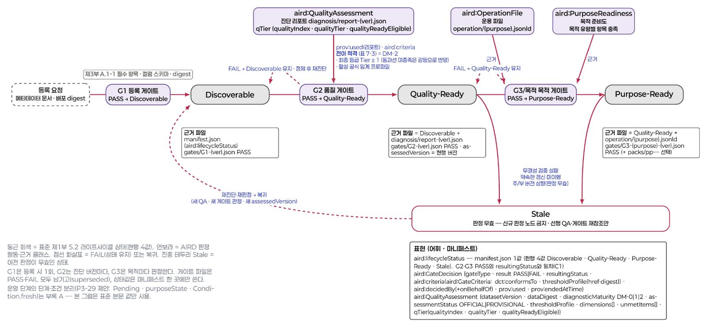
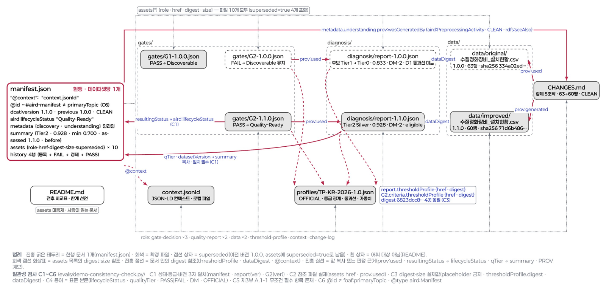
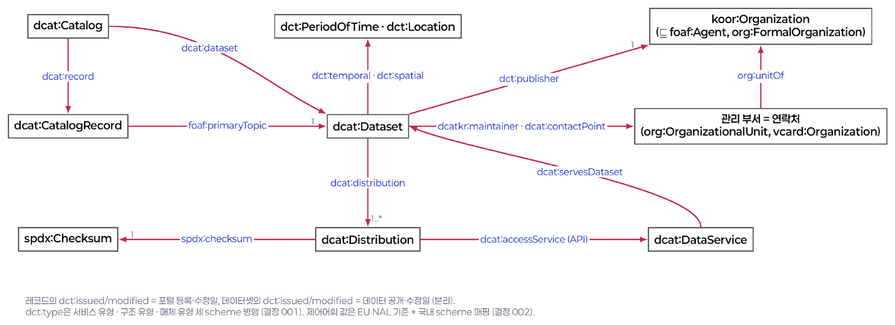
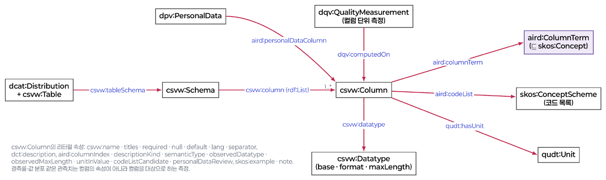
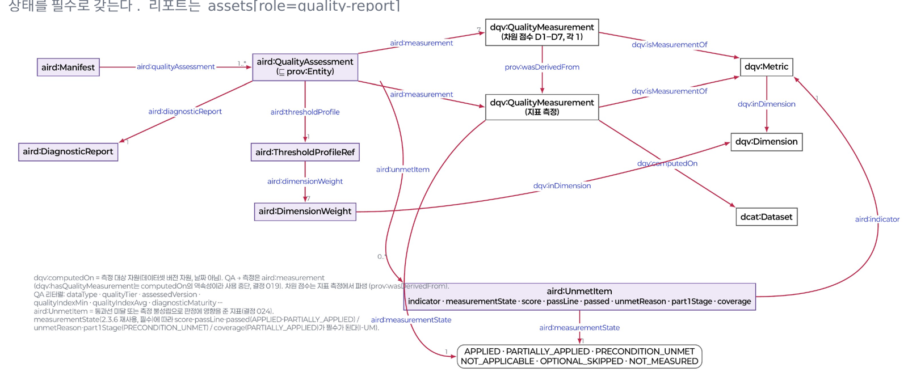
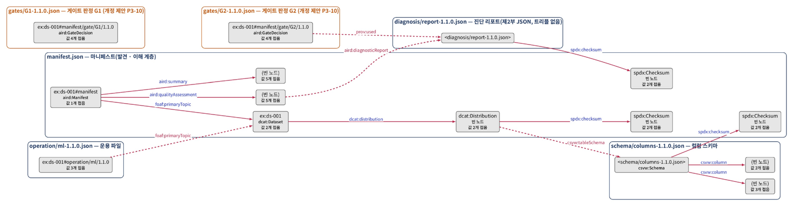

![AIRD · AI Ready Data]()
AI 레디 데이터 표준 해설
데이터를 사용하는 주체가 사람에서 AI로 넓어지고 있습니다. 기록되지 않은 사실은 AI가 확인할 수 없습니다.
에이전트가 데이터를
추정하지 않고 활용하도록
AI 레디 데이터(AIRD) 표준은 두 가지를 규정합니다. 첫째, AI가 데이터를 찾고 이해하고 신뢰하고 목적에 맞게 사용하는 데 필요한 사실을 기계가 읽는 형식으로 기록하는 방법입니다. 둘째, 그 준비 상태를 판정하는 방법입니다.
AIRD 기반 에이전트 판단
같은 예시 파일을 AIRD 적용 전과 후로 나누어, 에이전트가 무엇을 알 수 있는지 이 사이트의 측정 엔진(시험용)으로 판정한 결과입니다. AIRD 1단계를 적용하면 파일과 함께 표준 형식의 데이터 설명서(마니페스트)를 제공합니다.
- 4 알 수 있음
- 10 추정해야 함
- 2 표준이 답하지 않음
확인 항목 16개 기준
- 12 알 수 있음
- 2 추정해야 함
- 2 표준이 답하지 않음
확인 항목 16개 기준
이 사이트의 측정 엔진(시험용)이 예시 파일을 계산한 값입니다. 「확인 항목 16개」는 측정 엔진이 네 가지 판단(적합성 · 신뢰성 · 결합성 · 사용 가능성)마다 확인하는 항목의 합계입니다. 에이전트가 필요로 하는 정보 24개와 AIRD의 대응은 에이전트가 읽는 것에 있습니다. 단계별 결과는 예시 데이터로 따라가기에 있습니다.
역할별 시작점
공공데이터 · 기업 데이터를 관측한 결과는 필요성과 배경에 있습니다.
사례 영상 한 편당 2분 이내
AI 레디 데이터란
AI 레디 데이터가 무엇이고 어떤 단계를 거쳐 준비되는지, 지금 할 수 있는 일은 무엇인지 설명합니다.
지금 할 수 있는 것
AI 레디 데이터는 에이전트가 판단에 쓰는 사실을 데이터와 함께 기계가 읽는 형식으로 기록하고, 품질이 확인된 데이터(Quality-Ready) 이상의 상태에 도달한 데이터입니다. 1단계만 마친 데이터는 찾을 수 있는 데이터(Discoverable)입니다. [제1부 3.1 · 5.1]
| 구분 | 항목 | 조건 |
|---|---|---|
| 지금 할 수 있음 | 1단계 마니페스트 작성 · 결함 수정 · 한계 기록 · 조직의 운영 지침 구성 | 진단 도구와 운영 지침 없이도 수행 |
| 운영 지침이 있어야 함 | 측정 완성도(표준 용어: 진단 성숙도, DM) DM-1 · 품질 등급 · Quality-Ready 이상으로의 전이 | 표준 제공 운영 지침은 표준 제정 시 공개(2026년 12월 예상). 조직은 자체 운영 지침을 구성해 적용할 수 있음 |
| 후속 부(제4 · 5부)후속 부 | 확인 지점 판정 절차 세부 · 자동 활용 조건 | 2026년 12월 제정 범위 밖 |
Quality-Ready로 전이하려면 운영 지침을 적용한 판정이 필요하므로, 그 전에는 데이터가 Discoverable(찾을 수 있는 데이터)까지만 도달할 수 있습니다. 운영 지침의 구성은 운영 지침 구성에 있습니다.
달라지는 점
에이전트는 데이터에 기록되지 않은 사실을 추정합니다. 그 이유와 관측 결과는 필요성과 배경에 있습니다.
데이터 활용 전의 네 가지 판단
네 가지 판단은 모든 데이터 유형에 같습니다. 판단에 필요한 정보는 데이터 유형마다 다릅니다. [제1부 5.6]
| 데이터 유형 | 판단에 주로 필요한 정보 (예) |
|---|---|
표 형태 · 시계열 STRUCT TSERIES | 컬럼의 의미 · 단위 · 코드 체계 · 기준 시점 · 레코드 키 |
문서 TEXT | 출처 · 작성 시점 · 문서를 나눈 단위 · 근거 위치 · 개인정보 포함 여부 |
이미지 IMAGE | 촬영 · 수집 조건 · 라벨 체계 · 라벨 파일과 이미지의 대응 |
지시문 · 응답 쌍 PT | 지시문과 응답의 대응 · 출처 · 검수 여부 |
현재 표준의 데이터 유형은 위의 다섯 가지입니다. 영상 · 음성 같은 유형은 향후 추가될 수 있습니다.
3 단계
표준의 상태 이름: Discoverable → Quality-Ready → Purpose-Ready
1단계만 마쳐도 에이전트가 추정해야 하는 항목이 줄어듭니다. 사례는 사례 영상에서 볼 수 있습니다.
함께 제공하는 파일
AI 레디 데이터는 데이터 파일과 함께 판단에 필요한 사실을 담은 문서를 제공합니다. 표준은 이 배포 단위를 팩(Pack)이라 부릅니다. [제1부 3.15 · 5.5] 팩의 구성 · 파일 형식 · 검증은 팩 구성과 배포에 있습니다.
상태 · 확인 지점 · 등급 상세
- 하는 일
- 원천에서 제공된 직후의 데이터입니다. 이 상태의 데이터는 AI 레디 데이터가 아닙니다.
- 검증된 계층
- 없음
- 품질 등급
- —
- 목적 등급
- —
- 측정 완성도
- —
- 원시 데이터 관계
- 원시 데이터셋
- 하는 일
- 내용과 소재가 기록되어 검색과 접근이 가능한 상태입니다.
- 검증된 계층
- 발견
- 품질 등급
- —
- 목적 등급
- —
- 측정 완성도
- 측정했다면 DM-0 · DM-1 · DM-2
- 원시 데이터 관계
- 원시 데이터셋의 값을 유지 · 필요하면 형식만 변환
- 진입 경로
- 1단계 — 수집 · 개방 형식 변환 · 발견 계층 작성
- G1 판정 대상
- 발견 계층의 완비
- 상태 증명 파일
- manifest.json (발견 계층) · G1 판정 기록
- 하는 일
- 품질을 측정하고 운영 지침으로 판정해 전이 조건을 충족한 상태입니다. 이 상태부터 AI 레디 데이터입니다.
- 검증된 계층
- 발견 · 이해
- 품질 등급
- Tier 1(Bronze) 이상
- 목적 등급
- —
- 측정 완성도
- DM-2
- 원시 데이터 관계
- 정제 결과를 반영 · 원시와 같은 데이터셋
- 진입 경로
- 2단계 — 품질 측정 · 결함 수정 · 이해 계층 작성
- G2 판정 대상
- Quality-Ready 전이 가능 여부 (DM-2 · Tier 1 이상 · 운영 지침의 임계 프로파일 적용)
- 상태 증명 파일
- manifest.json (발견 · 이해 계층) · 결과서 · G2 판정 기록
- 하는 일
- 특정 활용 목적의 정량 요건까지 충족한 상태입니다.
- 검증된 계층
- 발견 · 이해 · 운용
- 품질 등급
- 유지
- 목적 등급
- 목적별 부여
- 측정 완성도
- DM-2
- 원시 데이터 관계
- 목적별 파생물 · 원시와 함께 존재
- 진입 경로
- 3단계 — 목적별 변환 · 운용 계층 작성
- G3 판정 대상
- 목적 요건의 충족
- 상태 증명 파일
- manifest.json · 결과서 · 운용 파일 (목적별) · G3 판정 기록
- 하는 일
- 체크섬이 일치하지 않거나 기재한 갱신 주기를 지키지 않아, 부여된 등급의 효력이 정지된 상태입니다. 재검증을 통과하면 직전 상태로 복귀합니다.
- 검증된 계층
- 직전 상태 유지
- 품질 등급
- 효력 정지
- 목적 등급
- 효력 정지
- 측정 완성도
- 유지
- 원시 데이터 관계
- 직전 상태의 관계 유지
자주 묻는 질문
- 의무입니까
- 아닙니다. 법령이나 규정에 따른 의무는 아닙니다. 기관 · 기업은 데이터 관리 지침, 사업 요구사항, 계약 조건에서 이 표준을 관련 표준으로 인용해 활용할 수 있습니다. 1단계만 수행해도 에이전트가 추정해야 하는 항목이 줄어듭니다.
- 무엇을 얻습니까
- 에이전트와 이용자는 담당자에게 문의하지 않고 데이터가 무엇인지, 신뢰할 수 있는지, 어떤 조건으로 이용할 수 있는지 판단합니다. 마니페스트에는 에이전트가 데이터를 검색 결과와 결합 후보로 고를 근거도 기재됩니다.
- 데이터를 고쳐야 합니까
- 1단계는 데이터값을 바꾸지 않고 설명을 기재하는 작업입니다. 값은 2단계의 결함 수정에서 고치며, 원본은 보존합니다.
- 얼마나 걸립니까
- 소요 시간은 기존 등록 정보와 컬럼 설명이 얼마나 갖춰져 있는지에 따라 달라집니다. 메타데이터의 생성과 입력은 도구로 자동 처리할 수 있고, 담당자는 등록 정보에 없는 항목만 직접 씁니다.
필요성과 배경
사람은 모르는 것이 있으면 담당자에게 묻지만, 에이전트는 데이터에 기록되지 않은 사실을 추정합니다. 공개 데이터 관측 결과로 이 문제를 보여 줍니다.
공개 데이터 관측 결과
공공데이터포털 파일데이터 목록 84,271건을 관측했습니다(2026-08-31). 목록에서 에이전트의 판단을 막는 값 세 가지를 확인했습니다.
출처: 공공데이터포털 목록개방현황(2026-08-31, 84,271건) 관측. 포털이 내보내는 DCAT 파일 2건은 RDF 파서로 읽히지 않았습니다.
기업 데이터에서는 이용 조건이 먼저 걸립니다. 이용약관을 확인한 국내 민간 정형 데이터 3건은 무료로 받을 수 있었습니다. 그러나 3건 모두 자체 이용약관으로 재배포 · 자동 수집을 제한했습니다. 어휘표의 라이선스 값 14개 가운데 자체 약관을 나타내는 값은 없습니다. 자체 약관의 내용은 이용 조건(dct:rights)에 문장으로 적고, 라이선스 항목의 기재 방법은 확인 중입니다. 사람은 약관을 읽고 판단하지만, 에이전트는 이용 조건을 확인할 수 없습니다.
문제의 원인
빠져 있는 것은 데이터 자체가 아니라 데이터를 쓰기 위한 사실입니다. 같은 이름의 컬럼이 다른 단위를 쓰고, 같은 사실이 여러 번 보고되며, 이용 조건의 범위가 적혀 있지 않습니다. 사람은 담당자에게 물어 빠진 사실을 보완합니다. 에이전트는 빠진 사실을 보완할 수 없습니다. 사례는 사례 영상에서 볼 수 있습니다.
표준이 하는 일
- 에이전트가 판단에 쓰는 사실(뜻 · 단위 · 기준 시점 · 이용 조건)을 데이터 설명서(마니페스트)에 기계가 읽는 형식으로 기록하게 합니다.
- 품질을 같은 측정식으로 측정하고, 측정한 지표와 측정하지 못한 지표를 함께 기록하게 합니다.
- 등급 체계와 판정 절차를 규정합니다. 판정 기준값은 표준과 별도의 운영 지침이 설정하며, 등급에는 적용한 운영 지침을 함께 적게 합니다.
- 근거가 없을 때 에이전트가 추정하지 않고 보류하도록 판정의 근거를 남기게 합니다.
운영 지침의 구성은 운영 지침 구성에 있습니다.
사례 영상
마니페스트가 에이전트의 판단을 어떻게 바꾸는지 영상 네 편으로 보여 줍니다. 영상에는 소리가 없고 화면의 글이 내용을 전하며, 자막(한국어 · 영어)은 기본으로 꺼져 있습니다.
시연 기록 영상은 이전 버전 규칙에 따른 실행 기록으로 제작했습니다. 에이전트의 판단은 측정 규칙과 관계없지만, 영상 속 마니페스트 형식은 지금의 어휘표와 다릅니다.
표준과 운영 지침
표준 제1~3부에는 측정 방법 · 기록 형식 · 등급 체계가, 운영 지침에는 판정 기준값과 운영 사항이, 어휘표에는 기재 항목 전체가 들어 있습니다.
표준의 구성
표준은 다섯 부로 구성됩니다. 제1부의 공통 개념을 바탕으로 제2부가 측정을, 제3부가 기록을, 제4부가 판정을, 제5부가 활용을 다룹니다. 제1~3부가 표준안 (TTAK 심의본 · 0.95 버전)이고, 제4 · 5부는 후속 부입니다.후속 부
| 부 | 표준 명칭 | 역할 | 준거 문서 |
|---|---|---|---|
| 제1부 | AI 레디 데이터 - 제1부: 개요 및 프레임워크 | 개요와 프레임워크 · 용어 · 준비 상태 · 데이터 유형 · 활용 목적 유형 | 표준안 |
| 제2부 | AI 레디 데이터 - 제2부: 품질 측정·등급화 | 품질 측정 · 등급화 · 지표 16종 · 측정 완성도(표준 용어: 진단 성숙도, DM) | 표준안 |
| 제3부 | AI 레디 데이터 - 제3부: 데이터셋 기술 스키마 및 응용 프로파일 | 데이터셋 기술 스키마 · 마니페스트 항목 명세 · 응용 프로파일 · 제어 어휘 | 표준안 |
| 제4부 | 후속 부 — 명칭 미정 | 단계별 절차 · 확인 지점 · 목적 등급 · 이력 | 후속 부 — 표준 논의에서 채택 · 2026년 12월 제정 범위 밖 |
| 제5부 | 후속 부 — 명칭 미정 | 탐색 · 교환 · 에이전트 활용 · 이용자 피드백 | 후속 부 — 표준 논의에서 채택 · 2026년 12월 제정 범위 밖 |
제1~3부는 2026년 3월 9일에 작성을 시작해 2026년 5월 13일 TTA에 표준으로 제안했습니다. 심의는 TTA 정기 회의에서 진행 중입니다. 진행 경과는 표준의 출발과 경과에 있습니다.
스펙 문서
요건은 스펙 문서가 규정합니다. 이 사이트는 스펙을 옮겨 싣지 않고 링크합니다. 해설과 스펙이 다르면 스펙이 우선합니다. 스펙 문서 주소는 표준 제정 시 연결합니다.
이 사이트의 [제2부 8.1] 같은 표시는 스펙의 조항입니다. 스펙 문서의 공개 시점은 개발 현황과 향후 공개에 있습니다.
운영 지침
판정 기준은 표준과 별도의 운영 지침이 설정합니다. 등급 요소는 표준을 따르고, 운영 요소는 운영 지침이 설정합니다.
| 구분 | 담당 문서 | 내용 |
|---|---|---|
| 등급 요소 | 표준 | 등급 체계 Tier 0~4 · 등급명 · 표기 형식 · 판정 절차 |
| 운영 요소 — 임계 프로파일(판정 기준값) | 운영 지침 | 예: 등급 구간 · 차원별 필수 통과선 · 차원 가중치 · DM-1 평가 범위 하한 [제2부 부속서 D] |
| 운영 요소 — 운영 사항 | 운영 지침 | 진단 주기 · 결과 유효기간 · 이의제기 절차 · 도구 인증 [제1부 7.1] |
임계 프로파일은 운영 지침에 포함됩니다. 조직 · 기관 · 도메인은 운영 지침을 독립적으로 구성할 수 있습니다. 따라서 운영 지침 발행 주체는 하나가 아닙니다.
등급을 판정 · 공개하는 쪽은 적용한 운영 지침을 명시적으로 제공하고, 공개해 누구나 접근할 수 있게 해야 합니다. 등급에는 운영 지침의 식별자 · 버전을 함께 적습니다. 운영 지침을 적용하지 않은 결과는 등급을 판정하지 않고 「판정하지 않음: 운영 지침 미적용」으로 적습니다.
표준이 제공하는 운영 지침은 표준 제정 시 공개합니다(2026년 12월 예상). 운영 지침의 구성과 임계 프로파일 항목은 운영 지침 구성에 있습니다.
표준과 어휘표
기재 항목의 이름 · 값 범위 · 필수 여부는 「AIRD 어휘표 v0.10.5」가 싣습니다. 심의본과 어휘표는 일치합니다. 심의본은 필수 요소를 중심으로 싣고, 어휘표는 외부 어휘까지 포함한 전체 목록을 싣습니다.
이 사이트는 어휘표 데모 프로파일의 발견 계층 필수 기재 항목 23개를 씁니다. 항목 목록은 기재 항목에 있습니다.
이 사이트의 메뉴와 부
| 메뉴 | 주요 해설 대상 부 |
|---|---|
| 표준 소개 | 제1부 |
| 데이터 준비 | 제1 · 2 · 3부 |
| 에이전트 활용 | 제3부 (자동 활용 조건은 제5부후속 부) |
| 운영 지침 | 제1부 7.1 · 제2부 부속서 D |
| 개념과 판정 | 제1 · 2 · 3부 (확인 지점 판정 세부는 제4부후속 부) |
| 찾아보기 | 제1 · 2 · 3부 |
인용의 구분
스펙이 인용하는 외부 문서는 준수 의무에 포함되는 규범적 인용과 이해를 돕는 참고 문헌으로 나뉩니다. 두 목록은 스펙 문서에 있습니다.
표준의 출발과 경과
표준의 핵심 판단이 언제, 어떤 문제 인식에서 나왔는지 날짜순으로 적습니다. 2025년 항목은 김학래 (중앙대학교 HIKE 연구실)가 작성 · 제안한 자료에서 개념만 옮기고 지금 표준과 달라진 점을 함께 적었습니다. 당시 안은 현재 표준이 아닙니다.
문제 정의 2025년 8월 ~ 9월
2025-08 · 표준 관리 범위가 메타데이터에 한정되고 데이터 값은 포함하지 않습니다
데이터를 세 층으로 나누어 진단했습니다 — 데이터 값(Level 0), 데이터셋 메타데이터(Level 1), 서비스 수준의 데이터(Level 2). 국제 메타데이터 표준은 Level 1에 적용되어 있습니다. 데이터 값에는 표준이 없어 데이터 간 연계가 어렵다고 판단했습니다.
현재 표준은 기록(제3부)과 데이터 값의 품질 측정(제2부)을 함께 다룹니다 — 품질 지표
2025-08 · 사람 중심 활용에서 사람과 AI의 공동 활용으로
데이터 제공에서 AI 활용까지의 준비 과정을 정제 · 구조화 · 계보 · 편향 최소화 · 통합 · 접근성의 여섯 단계로 그리고, 준비 결과를 제공 주체의 품질관리에 환류하는 구조를 두었습니다.
현재 준비 단계는 데이터 설명서(마니페스트) 작성 · 품질 측정 · 목적별 준비의 3 단계이고, 단계마다 확인 지점과 산출물이 있습니다 — AI 레디 데이터란
2025-08 · 정의와 성숙도 단계의 제안
「추가 정제 없이 AI가 학습 · 추론 · 활용할 수 있는 데이터」를 정의로, 품질 → 학습 → 생성형 AI → 추론으로 올라가는 성숙도 단계와 단계별 평가 지표 초안을 제안했습니다.
현재 표준은 단일 성숙도 단계를 두지 않습니다. 측정 완성도 · 품질 등급 · 목적 등급을 따로 판정하고 합산하지 않습니다 — 판정 절차
2025-09 · 현재 데이터와 AI 레디 데이터의 비교
제공 형식 · 품질관리 · 품질 기준 · 이용 대상 · 포털 기능의 다섯 축으로 비교했습니다.
| 축 | 2025년 당시의 「현재 데이터」 | 2025년 당시의 「AI 레디 데이터」 | 현재 |
|---|---|---|---|
| 제공 형식 | CSV · Excel · API | JSON · Parquet · RDF · API | 형식보다 마니페스트와 품질 근거 우선 |
| 품질관리 | 메타데이터와 일부 규칙 | 데이터 값 전체와 의미 품질 | 메타데이터 기록과 데이터 값 측정의 병행 |
| 품질 기준 | 명확한 지표 없음 | 정확성 · 완전성 · 일관성 지표 관리 | 측정 방법과 등급 체계는 표준이, 판정 기준값은 운영 지침이 결정 |
| 이용 대상 | 사람 중심 | 사람과 AI의 공동 활용 | 기록만으로 에이전트가 판단할 수 있는지 여부 |
| 포털 기능 | 검색 · 내려받기 위주 | 질의응답 · 추천 API 같은 AI 활용 중심 | 표준의 범위 밖 — 표준의 대상은 데이터와 그 기록 |
당시 안에 있던 수치 기준값은 옮기지 않았습니다. 표준은 수치 기준값을 규정하지 않습니다. 수치 기준값은 운영 지침의 임계 프로파일(판정 기준값)이 설정합니다.
정의의 정밀화 2025년 10월
2025-10 · 구조 · 의미 · 신뢰정보
「기계가 판독할 수 있는 구조, 표준 코드 · 관계 정보 같은 의미, 출처 · 버전 · 편향 같은 신뢰정보를 갖추어 AI가 학습 · 추론 · 생성에 직접 활용할 수 있도록 준비된 데이터」로 정의를 다듬었습니다.
현재 기재 항목과 「AIRD 어휘표 v0.10.5」의 발견 · 이해 계층으로 구체화했습니다 — 기재 항목
2025-10 · 형식 중심 품질에서 의미 · 값 중심 품질로
날짜 형식 · 결측 같은 형식 점검을 넘어 표준 코드 적용과 값의 의미를 품질의 대상에 포함하고, 국제 기준(예: ISO/IEC 5259)과 정렬할 것을 제안했습니다.
현재 품질 지표 16종, 다른 표준과 대응 관계 — 품질 지표
표준 준비로 전환 2025년 11월
2025-11-03 · 가이드라인 항목에서 표준 어휘로
AI 활용에 직접 기여하는 항목(품질 점수 · 편향 정보 · 결측 처리 방침 · 준비 단계)을 필수로, 행정 관리 항목을 선택으로 나누는 메타데이터 안을 내고, 다음 세 가지를 후속 작업으로 권고했습니다.
| 2025년 11월의 권고 | 지금 표준 · 사이트 |
|---|---|
| ① 메타데이터 정의서와 검증 규칙(유효값 · 형식 검증) 정교화 | 기재 항목 · 판정 절차 |
| ② 국내외 표준 어휘(예: ISO/IEC 5259 · DCAT-AP-KR)의 적용 모델 설계 | 어휘표 v0.10.5 |
| ③ 여러 분야에 공통으로 쓰는 메타데이터 어휘 개발 | 발행 주체를 가리지 않는 범위 · AI 레디 데이터란 |
표준화와 공개 도구 2025년 11월 이후
2026-03-09 · AI 레디 데이터 표준안 제1~3부 작성 시작
「AI 레디 데이터 - 제1부: 개요 및 프레임워크」 · 「제2부: 품질 측정·등급화」 · 「제3부: 데이터셋 기술 스키마 및 응용 프로파일」의 작성을 시작했습니다. 판정(제4부)과 활용(제5부)은 후속 부로 이어집니다.
현재 표준안 (TTAK 심의본 · 0.95 버전), 2026년 12월 제정 범위 — 표준과 운영 지침
2026-04-14 · 표준 개발 도구의 공개
표준을 개발하면서 구현 도구 모음(aird-tools)을 공개 저장소에 게시했습니다.
현재 사용 가능한 도구와 상태 — 공개 도구
2026-05-13 · TTA 표준 제안
제1~3부를 TTA에 표준으로 제안했습니다. 심의는 이후 TTA 정기 회의에서 진행 중입니다.
현재 심의 중 — 표준과 운영 지침
2026-08-03 · 표준안을 적용한 MCP 서버
공공데이터포털 목록 메타데이터에 표준안의 판정 일부를 버전 관리되는 규칙으로 적용한 MCP 서버(공공데이터 렌즈)를 공개했습니다.
현재 사용 가능한 도구와 상태 — 공개 도구
2026-09-30 · AIRD 어휘표 v0.10.5
기재 항목의 이름 · 값 범위 · 필수 여부를 어휘표로 고정했습니다.
현재 이 사이트의 기준 어휘 — 기재 항목
2026-10 · 발행 주체를 가리지 않습니다
표준의 대상과 수요처를 공공데이터로 한정하지 않는다는 방침을 사이트 전체에 반영했습니다. 2025년 11월 권고 ③(분야 공통 어휘)의 방향입니다.
현재 공공기관 · 기업 · 민간 비영리의 데이터를 같은 절차로 다룹니다 — AI 레디 데이터란
개발 현황과 향후 공개
준비 중인 자료와 도구를 주 이용자 · 현재 상태와 함께 모았습니다.
사이트의 메뉴와 본문에는 지금 사용할 수 있는 것만 둡니다. 표 「준비 중인 자료」의 상태 칩 뜻은 표 「상태의 의미」에 있습니다.
준비 중인 자료
| 항목 | 내용 | 주 이용자 | 상태 |
|---|---|---|---|
| 스키마와 컨텍스트 | 데이터 설명서(마니페스트) JSON Schema · JSON-LD @context · SHACL 형상 · 버전별 변경점 | 에이전트·AI 개발자 (데이터 이용자) | 개발 중 |
| 검증 도구와 API | 마니페스트 검증기 · 품질 평가기 · 변환 파이프라인 · 검증된 사실 조회 API | 에이전트·AI 개발자 (데이터 이용자) | 검토 중 |
| 진단 도구 배포 버전 | 이 사이트의 측정 엔진과 같은 판정 규칙을 쓰는 명령행 진단 도구와 예시 입력 | 데이터 제공 담당자 | 개발 중 |
| 가이드 단일 문서 | 「데이터 준비」 메뉴와 같은 내용의 PDF · docx — 사이트와 같은 원천에서 생성 | 데이터 제공 담당자 | 개발 중 |
| 그림 원본 파일 | 사이트 그림의 SVG · PNG | 모든 독자 | 검토 중 |
| 표준 스펙 문서 링크 | 제1~3부 스펙 문서의 주소 · 조항 표시에서 그 부의 스펙 문서로 연결 | 모든 독자 | 공개 예정 |
| 조달 · 계약 요건 반영 방안 | 데이터를 구매 · 조달하는 조직이 계약 · 조달 조건에 AI 레디 데이터 요건을 반영한 문안과 사례 | 데이터를 구매 · 조달하는 조직 | 검토 중 |
상태의 의미
| 상태 | 뜻 |
|---|---|
| 검토 중 | 공개 범위와 형태를 결정하는 단계 |
| 개발 중 | 개발하는 단계. 공개 시점 미정 |
| 공개 예정 | 내용은 준비됨. 공개 조건(표준 제정 또는 배포처 개설) 대기 |
자료가 공개되면 그 자료가 속한 메뉴에 올립니다.
데이터 준비 › 절차
준비 개요
보유 데이터를 확인하고 3 단계를 거쳐 AI가 활용할 수 있는 상태로 만드는 절차의 안내도입니다. 운영 지침을 적용해 Quality-Ready 이상으로 판정된 데이터는 팩으로 배포하고, 그 전에는 마니페스트를 공개합니다.
다루는 범위 — 표 형태(STRUCT)와 시계열(TSERIES) 데이터는 실행 항목까지 제공합니다. 문서(TEXT) · 이미지(IMAGE) · 지시문 · 응답 쌍(PT) 데이터도 절차는 같습니다. 유형별 추가 항목은 이후 버전에서 추가할 예정입니다.
단계와 산출물
데이터는 원시 상태에서 3 단계를 거쳐 준비 상태가 올라갑니다. 각 단계 끝에는 확인 지점이 있습니다. AI 레디 데이터는 Quality-Ready 이상의 상태를 뜻합니다. [제1부 3.1 · 5.1]
| 단계 | 하는 일 | 산출물(파일 · 형식) | 도달 상태 | 판정에 필요한 것 |
|---|---|---|---|---|
| 데이터 확인 | 데이터 유형 · 문자 인코딩 · 개인정보 포함 여부 확인 | 확인 기록 | 원시 | — |
| 1단계 마니페스트 작성 | 기재 항목 작성 · 컬럼 정의서 작성 · 고유 식별자 결정 | 데이터 설명서(마니페스트) manifest.json — JSON-LD, 발견 계층 · 컬럼 정의서 | Discoverable(찾을 수 있는 데이터) | 발견 계층 필수 기재 항목 충족 |
| 2단계 품질 측정 · 결함 수정 | 품질 지표 측정 · 결함 수정 · 한계 기록 | 결과서(표준 용어: 진단 리포트) — JSON · 정제본 · 처리 이력 · 한계 기록 · 마니페스트 이해 계층 | Quality-Ready(품질이 확인된 데이터) | 운영 지침의 임계 프로파일(판정 기준값) · 측정 완성도(표준 용어: 진단 성숙도, DM) DM-2 · 품질 등급 Tier 1 이상 |
| 3단계 목적별 준비 | 활용 목적에 맞춘 운용 파일 작성 | 목적별 운용 파일 — 목적 유형마다 1개 | Purpose-Ready(목적에 맞게 준비된 데이터) | 목적 프로파일 등록 |
| 배포 | 팩 구성 · 배포 | 팩 — 마니페스트 · 결과서 · 팩 마니페스트 · 운용 파일. 데이터 파일은 주소 · 체크섬으로 참조 | — | — |
마니페스트는 버전마다 새로 발행하고 이전 버전을 가리킵니다. 등급 판정 절차는 판정 절차에, 팩의 구성과 파일 형식은 팩 구성과 배포에 있습니다.
작업 원칙
- 단계 순서를 지킵니다. 품질을 측정하기 전에 데이터를 찾을 수 있는 상태로 만듭니다.
- 미충족 항목은 보완합니다. 확인 지점을 통과하지 못하면 미충족 항목을 보완하고 다시 확인합니다. 미충족은 탈락을 뜻하지 않습니다.
- 원본은 보존합니다. 정제본과 목적별 산출물은 원본과 함께 남습니다.
- 단계별로 나누어 수행할 수 있습니다. 1단계만 수행해도 에이전트가 추정해야 하는 항목이 줄어듭니다.
지금 할 수 있는 것
| 구분 | 작업 |
|---|---|
| 담당자 혼자 가능 | 데이터 확인 · 마니페스트 작성(기재 항목 23개 · 컬럼 정의서) · 체크섬 계산. 고유 식별자는 조직의 식별자 정책을 확인한 뒤 결정합니다 |
| 진단 도구 필요 | 품질 측정 · 결과서 작성. 진단 도구 배포 버전은 개발 중입니다(개발 현황과 향후 공개) |
| 운영 지침 필요 | 품질 등급 판정 · Quality-Ready 전이 판정. 표준 제공 운영 지침은 표준 제정 시 공개 예정(2026년 12월 예상)이며, 조직은 자체 운영 지침으로 판정할 수 있습니다 |
상세 설명은 AI 레디 데이터란 — 지금 할 수 있는 것에 있습니다.
현재 상태 자가 확인 5문항
이미 개방 중인 데이터는 자가 확인 5문항으로 시작 단계를 결정합니다. 응답에 따라 시작 단계는 마니페스트 작성(1단계) 또는 품질 측정(2단계)이 됩니다.
판정 규칙 — 가장 앞의 「아니오」가 시작점을 결정합니다. 뒤 문항의 응답은 앞 문항의 조건이 충족된 뒤에 유효합니다. 뒤 문항이 「예」여도 시작점은 가장 앞의 「아니오」를 따릅니다.
「시작점 결정」 표의 번호는 위 자가 확인 화면에 나오는 5개 문항의 번호입니다.
시작점 결정
| 가장 앞의 「아니오」 | 시작점 | 근거 |
|---|---|---|
| 1번 또는 2번 | 마니페스트 작성 (1단계) | 개방 형식과 컬럼 설명이 없으면 품질 측정 불성립 |
| 3번 또는 4번 | 마니페스트 작성 (1단계)의 기재 항목 작성 | 등록 화면 입력 항목에 해당 |
| 5번 | 품질 측정 (2단계) | 한계 기록은 2단계의 작업 |
| 없음 (모두 「예」) | 품질 측정 (2단계) | 기재 항목 충족과 품질 측정은 별개 |
「아니오」 응답 수는 담당자의 오류를 뜻하지 않습니다. 기존 포털 등록 화면에는 기재 항목 23개 중 입력란이 없는 항목이 있었고, 기계 판독 형식의 제공을 지원하지 않았습니다.
시작 전 준비 자료
담당자는 작업을 시작하기 전에 다음 자료를 준비합니다. 자료가 없으면 작성할 수 있는 기재 항목부터 채웁니다.
| 자료 | 확인 위치 | 없는 경우 |
|---|---|---|
| 데이터 파일 | 담당 시스템 · 포털 등록분 · 사내 데이터 카탈로그 | 1단계의 기재 작업부터 시작 |
| 현재 등록 정보 | 공공데이터: 포털 등록 화면 · 기업 데이터: 사내 카탈로그 또는 거래소 상품 등록 정보 | 새로 작성 |
| 컬럼 설명 | 원본 데이터베이스의 컬럼 주석 | 마니페스트 작성 (1단계)에서 작성 |
| 갱신 주기 | 실제 갱신 이력 | 실제 주기를 먼저 확인 |
| 이용 조건 | 공공데이터: 기관의 개방 정책 · 기업 데이터: 이용약관 · 라이선스 문서 (시행일 포함) | 담당 부서에 확인 |
준비 전후 비교
준비 전후 비교 — 표 7행 펼치기
| 항목 | 준비 전 | 준비 후 |
|---|---|---|
| 컬럼 의미 | 컬럼명만 있음 | 이름 · 자료형 · 설명 · 코드값 |
| 갱신 주기 | 「수시」 | 표준 목록의 URI (예: …/frequency/IRREG) |
| 이용 조건 | 「제3자 권리 포함 여부 N」 | 어휘표 라이선스 값 (예: KOGL-1) |
| 파일 정보 | 없음 | 접근 주소 · 미디어 타입 · 파일 형식 · 체크섬 |
| 품질 | 알 수 없음 | 7개 차원 점수 + 측정 완성도 + 근거 |
| 한계 | 없음 | 치우침 · 부적합 용도 · 결측 원인 |
| 이력 | 없음 | 수정 내용 · 일자 · 사유 |
1단계는 데이터값을 바꾸지 않습니다. 1단계는 값의 의미 · 형식 · 출처를 설명하는 정보를 더합니다. 2단계의 결함 수정은 값을 바꿀 수 있습니다. 담당자는 수정 대상 · 방법 · 사유를 처리 이력에 기록합니다. 예시 파일의 단계별 결과는 예시 데이터로 따라가기에 있습니다.
이 사이트의 표시
| 표시 | 뜻 |
|---|---|
| 필수 | 현행 표준안이 필수로 규정한 사항 |
| 기준 | 운영 지침(임계 프로파일)이 설정하는 사항 |
| 권고 | 이 사이트가 작업 편의를 위해 권하는 사항. 표준안의 요건이 아님 |
| 예시 | 설명을 위한 값이나 문안 |
권고 항목은 표준안의 요건이 아니므로 조직 사정에 맞게 달리 결정할 수 있습니다.
표시와 스펙 문안의 shall · should · may 간 대응 관계는 아직 확정되지 않았습니다.
완료 조건
- 자가 확인 5문항에 답해 시작 단계(1단계 또는 2단계)를 결정했습니다.
- 「시작 전 준비 자료」 표의 자료 5종마다 확보 여부를 확인했습니다.
데이터 준비 › 절차
데이터 확인
1단계를 시작하기 전에 보유 파일의 데이터 유형 · 문자 인코딩 · 개인정보 포함 여부를 확인합니다.
데이터 유형 확인
담당자는 데이터 유형을 먼저 결정합니다. 유형에 따라 측정 항목과 기재 항목이 달라집니다. [제1부 5.6 표 5-5] 필수
| 유형 | 정의 | 예 | 표준 식별자 |
|---|---|---|---|
| 표 형태 | 행과 열이 있고 컬럼마다 자료형이 정해진 데이터 | 사업장 등록 현황 · 인허가 목록 · 거래 내역 · 제품 마스터 | STRUCT |
| 시계열 | 시간 순서로 값을 기록한 데이터. 표 형태의 특수한 경우 | 설비 센서 측정값 · 일별 가격 | TSERIES |
| 문서 | 자연어 문장과 문서로 된 데이터 | 민원 답변 · 고시 원문 · 보고서 · 제조 기술문서 | TEXT |
| 이미지 | 사진 · 도면 같은 이미지 파일 | 시설물 점검 사진 · 위성 영상 · 제품 결함 검사 이미지 | IMAGE |
| 지시문 · 응답 쌍 | 지시문과 응답의 쌍 또는 선호 쌍으로 이루어진 텍스트 데이터 | 상담 질문–답변 쌍 | PT |
복수 유형 데이터 필수
담당자는 대표 유형 하나를 골라 종합 표시에 씁니다. 파일이나 구성요소가 여러 유형에 해당하면 구성요소마다 그 유형의 확인 항목을 함께 적용합니다. 대표 유형을 골라도 다른 유형의 확인 항목은 생략하지 않습니다. [제2부 8.2]
시계열은 표 형태의 특수한 경우입니다. 시계열 데이터에는 표 형태의 확인 항목을 그대로 적용하고 기준 시점 · 측정 주기 · 단위를 함께 적습니다. 권고
유형에 따라 달라지는 항목
데이터 유형에 따라 다음 세 가지가 달라집니다.
| 구분 | 뜻 | 유형별 수 | 근거 |
|---|---|---|---|
| 반드시 측정하는 항목(정식 필수 지표) | 표준이 데이터 유형마다 규정한 측정 지표 집합. 집합의 지표를 모두 측정해야 측정 완성도(표준 용어: 진단 성숙도, DM)가 DM-2가 됨 | 품질 지표 16종 중 STRUCT 13 · TSERIES 13 · TEXT 5 · PT 8 · IMAGE 3 | [제2부 부속서 A.2] |
| 최소 측정 지표(MMI) | 어느 유형이든 최소한 측정해야 하는 지표. 측정 완성도 판정의 하한 조건 | 4종 — D5-03(통계적 타당성) · D6-01(유일성) · D7-01(인코딩 일관성) · D7-02(기술적 유효성). 유형에 적용되는 지표만 측정 | [제2부 부속서 A.1] |
| 추가 기재 항목 | 유형에 따라 마니페스트에 더 적는 항목 | 기재 항목 참조 | [제3부] |
정식 필수 지표는 「무엇까지 측정해야 완전한가」를 정의합니다. 최소 측정 지표는 「적어도 무엇은 측정해야 하는가」를 정의합니다. 측정 완성도의 결정 규칙은 판정 절차에, 지표별 정의는 품질 지표에 있습니다. 문서 · 이미지 · 지시문 · 응답 쌍의 실행 항목은 표준 원문과 대조한 뒤 이후 버전에 수록합니다.
대조할 기준 자료가 없으면 정확성을 측정할 수 없습니다. 진단 도구는 이 상태를 「정확성 미측정」으로 표시합니다. 「정확성 미측정」은 감점이 아니라 측정 상태입니다. 정확성 지표가 그 유형의 정식 필수 지표이면 측정 완성도가 DM-2에 이르지 못합니다. 이 경우 다음 준비 상태로 넘어가는 것(전이), 곧 Quality-Ready 전이가 성립하지 않습니다. [제2부 7.4 · 8.1] 필수
문자 인코딩 확인
기준 인코딩은 UTF-8입니다. CP949 · EUC-KR은 기준 인코딩이 아니며 미준수로 판정됩니다. 인코딩은 최소 측정 지표 D7-01(인코딩 일관성)의 측정 대상입니다. [제2부 부속서 A.4] 담당자는 인코딩을 직접 확인하고 수정할 수 있습니다.
- 편집기로 확인합니다. 텍스트 편집기로 파일을 열고 인코딩 표시(상태 표시줄 또는 「다른 이름으로 저장」 대화상자)를 읽습니다. 결과물은 인코딩 이름입니다.
- 명령으로 확인합니다. 터미널에서
file -i <파일>(Linux) 또는file -I <파일>(macOS)을 실행합니다. 결과에charset=utf-8이 있으면 UTF-8입니다.charset=us-ascii는 영문 · 숫자만 있는 파일이며 UTF-8로 읽을 수 있습니다. - UTF-8이 아니면 변환합니다. 편집기에서 UTF-8로 다시 저장하거나
iconv -f CP949 -t UTF-8 <원본> > <변환본>을 실행합니다. 결과물은 UTF-8 파일입니다. - 결과를 기록합니다. 확인한 인코딩을 데이터 유형과 함께 적습니다.
조직이 다른 인코딩 기준을 명시하면 담당자는 그 기준을 따르고, 적용한 기준을 마니페스트에 기록합니다. 바이트 순서 표시(BOM)의 유무와 줄바꿈 문자의 차이는 측정 대상이 아니므로 조치하지 않아도 됩니다.
개인정보가 포함된 데이터
참고 자료: 개인정보보호위원회 「가명정보 처리 가이드라인」(2026.3. 개정). 공공기관은 「공공 AX 프라이버시 안내서」(2026.7.)도 함께 확인합니다. 최신 버전은 개인정보보호위원회 자료실에 있습니다.
개인정보를 포함한 데이터셋은 비식별화 처리 여부를 기재해야 합니다. [제3부 부속서 A.1] 필수 처리 수준 · 방법 · 일시는 2단계에서 기재합니다.
이 절차는 공개 제공을 대상으로 합니다. 공개가 제한되는 데이터는 이 절차의 대상이 아닙니다. 통제된 환경에서 준비할 수 있는지는 조직이 별도로 판단합니다.
완료 조건
- 데이터 유형(STRUCT · TSERIES · TEXT · IMAGE · PT 중 하나 이상)을 결정해 기록했습니다.
- 문자 인코딩이 UTF-8인지 확인해 기록했습니다.
- 개인정보 포함 여부를 확인했습니다.
데이터 준비 › 절차
마니페스트 작성 (1단계)
1단계에서 발견 계층의 기재 항목 23개와 컬럼 정의서를 채워 데이터 설명서(마니페스트) manifest.json(JSON-LD)을 만듭니다. 마니페스트는 데이터가 Discoverable(찾을 수 있는 데이터) 상태에 이르는 근거입니다.
1단계 점검표 — 기재 항목 23개 (데모 프로파일)
0 / 23 채움
데이터셋
배포 자원 (파일별)
체크 상태는 이 브라우저에만 저장됩니다. 원천: 어휘표 v0.10.5 데모 프로파일.
단계 개요
1단계의 목표는 데이터가 무엇이고 어디에 있는지를 기계가 읽을 수 있는 형식으로 기록하는 것입니다. 담당자는 현재 버전의 안내만으로 1단계를 마칠 수 있습니다. 고유 식별자는 고유 식별자 정하기의 잠정 규칙을 사용합니다.
| 작업 | 결과물 |
|---|---|
| 전용 형식을 개방 형식으로 변환 | 개방 형식 파일 (예: CSV · JSON) |
| 기재 항목 작성 | 마니페스트 manifest.json — JSON-LD, 발견 계층 |
| 컬럼별 의미 기재 | 컬럼 정의서(csvw:tableSchema) — 마니페스트에 포함 |
마니페스트의 전체 예시는 마니페스트 예시에, 마니페스트가 들어가는 팩의 구조는 팩 구성과 배포에 있습니다. 마니페스트는 버전마다 새로 발행하고 이전 버전을 가리킵니다.
1단계는 데이터값을 바꾸지 않습니다. 담당자는 데이터의 내용을 유지하고 설명을 더합니다. [제1부 5.2]
작업 주체
| 담당자가 혼자 | 진단 도구가 | 조직이 결정 |
|---|---|---|
기재 항목 작성 · 컬럼 정의서 작성 · 개방 형식 변환 · 마니페스트 작성 · 체크섬 계산(sha256sum) | 체크섬 계산 · 마니페스트 초안 생성 | 고유 식별자 발급 정책 · 라이선스와 이용 조건 · 개인정보 공개 범위 |
담당자는 체크섬을 직접 계산할 수 있습니다. Linux에서는 sha256sum <파일>, macOS에서는 shasum -a 256 <파일>을 실행합니다. 진단 도구도 파일에서 체크섬을 계산합니다. 담당자는 마니페스트를 직접 작성할 수 있고, 진단 도구가 만든 초안을 고쳐 쓸 수도 있습니다.
담당자와 진단 도구는 확인 지점 ①에서 필수 기재 항목의 충족 여부를 확인합니다. [제4부 6.4]후속 부 충족하지 못한 항목은 보완하고 다시 확인합니다.
1단계가 돕는 판단
1단계의 작업은 데이터 탐색 · 접근 · 이용 조건 확인을 돕습니다. 식별자는 다른 자료가 데이터를 참조하게 합니다. 컬럼 설명은 값의 의미를 전달합니다. 이용 조건은 사용 가능 여부를 판단하는 근거가 됩니다. 담당자는 FAIR 원칙을 몰라도 1단계를 수행할 수 있습니다.
확인 항목
기재 항목은 23개(데이터셋 19 + 배포 자원 4)입니다. 이 사이트는 어휘표 v0.10.5 데모 프로파일의 23개를 씁니다. 심의본 필수는 19개(데이터셋 15 + 배포 자원 4)입니다. 데모 프로파일은 데이터셋 구조 유형 · 주제 분류 · 랜딩 페이지 · 관리 부서 4개를 더합니다. 주제 분류 · 랜딩 페이지는 공공데이터에서 필수이고 그 밖에는 권장입니다. [제3부 부속서 A.1]
배포 자원 항목 4개는 배포하는 파일마다 적용합니다. 파일이 3개면 기재값은 19 + 4 × 3 = 31개입니다. 전체 목록과 판단 기준은 기재 항목에 있습니다.
자주 누락되거나 잘못 기재되는 항목 6개는 다음과 같습니다.
| 항목 | 구분 | 판단 기준 | 자주 나오는 문제 |
|---|---|---|---|
| 고유 식별자 | 필수 | 변경하지 않는 영구 식별값. 해석 가능한 URI가 원칙. 접근 주소와 구분 | 조직 내부 번호를 그대로 사용 |
| 키워드 | 필수 | 3개 이상 | 1~2개만 기재 |
| 갱신 주기 | 필수 | 표준 목록의 URI로 기재 | 「분기」 · 「수시」 같은 자유 문자열 |
| 라이선스 | 필수 | 어휘표 kr-license 14값에서 선택 (예: KOGL-0~4 · KOGL-AI · CC). 목록에 없는 라이선스의 기재 방법은 확인 중 | 「예 / 아니오」 또는 긴 문장 |
| 미디어 타입 | 필수 | text/csv 형태의 IANA 표기 | 「텍스트」 · 「이미지」 |
| 체크섬 | 필수 | 배포 자원마다 SHA-256 값 | 기재 누락 |
고유 식별자와 접근 주소는 다릅니다. 고유 식별자는 데이터셋을 식별하는 값입니다. 접근 주소는 실제 데이터에 접근하는 위치입니다. 담당자는 두 항목을 같은 값으로 채우지 않습니다. 조직에 식별자 발급 정책이 없으면 고유 식별자 정하기의 잠정 규칙을 적용합니다.
파일이 여러 개면 배포 자원을 여러 개로 구성합니다. 표 · 이미지 · 영상을 함께 제공하면 배포 자원마다 접근 주소 · 미디어 타입 · 파일 형식 · 체크섬을 따로 적습니다.
표 형태 데이터는 컬럼 정의서가 필수입니다. 컬럼 정의서는 마니페스트에 직접 기재하거나, 별도 문서로 두고 마니페스트가 주소와 해시로 가리킵니다. 작성 방법은 「컬럼 정의서 작성」 절에, 판단 기준은 기재 항목에 있습니다.
컬럼 정의서 작성
컬럼 정의서(csvw:tableSchema)는 컬럼마다 이름 · 자료형 · 의미를 적은 표입니다. 컬럼 정의서가 없으면 데이터값의 의미를 확인하기 어렵습니다.
필요성
원본 데이터베이스의 컬럼 설명은 CSV로 내보낼 때 사라질 수 있습니다. 컬럼명만 남으면 mkt_nm 같은 명칭의 의미를 확인하기 어렵습니다. 2단계 품질 측정도 컬럼 정의서를 입력으로 씁니다.
컬럼별 기재 항목
컬럼별 기재 항목 — 표 11행 펼치기
| 항목 | 구분 | 예 | 2단계에서 이 항목이 필요한 지표 |
|---|---|---|---|
| 이름(컬럼명) | 필수 | bizr_no | — |
| 자료형 | 필수 | 문자열 | — |
| 설명 | 필수 | 국세청이 부여한 사업자 등록 번호. 하이픈 없음 | — |
| 필수 여부 | 필수 | 필수 (값이 비면 안 됨) | D1-01(필수 필드 충족도) |
| 값 범위 | 권고 | employeeCount 0 이상 100000 이하 | D5-02(수치 범위 유효성) |
| 필드 간 관계 | 권고 | 예시 폐업 여부가 1이면 폐업일이 있음 | D2-01(필드 간 관계 일관성) |
| 파생 규칙 | 권고 | 예시 합계 = 남성 수 + 여성 수 | D2-03(파생값 정확성) |
| 코드표와 그 판 | 권고 | 한국표준산업분류(개정 차수 명시) · 코드값 의미 01=운영, 02=휴업, 03=폐업 | D2-02(참조 무결성) |
| 표시 이름 | 권고 | 사업자등록번호 | — |
| 단위 | 권고 | 원 · ㎡ · ℃ | — |
| 빈 값 표기 | 권고 | 빈칸 | — |
권고 항목은 2단계 측정의 입력입니다. 컬럼 정의서에 필수 여부 · 값 범위 · 필드 간 관계 · 파생 규칙 · 코드표와 그 판이 없으면 진단 도구는 2단계에서 D1-01 · D5-02 · D2-01 · D2-03 · D2-02를 측정할 수 없습니다. 측정하지 못한 지표는 결과서(표준 용어: 진단 리포트)에 미측정 사유와 함께 기록됩니다(결과서 읽기 (2단계)).
빈 값 표기는 표준의 요건이 아니지만 실무에서 자주 문제가 됩니다. 빈칸 ·
-·N/A·0을 섞어 쓰면 0이 실제 값인지 빈 값인지 구별할 수 없습니다.
파일 형식 결정 권고
| 상황 | 권장 | 근거 |
|---|---|---|
| 표 형태 | CSV (UTF-8) | 범용 도구에서 판독 가능 |
| 표 형태 · 대용량 | Parquet 병행 | 내려받기 · 처리 속도 향상 |
| 계층 구조가 있는 데이터 | JSON | 표로 평탄화하면 계층 관계 손실 |
| 지리 정보 | GeoJSON | 좌표계 포함 |
| 문서 | 원문 형식 + 텍스트 추출본 | 원문만으로는 기계 판독 불가 |
| 이미지 | 표준 이미지 형식 | 전용 형식은 범용 도구에서 판독 불가 |
기준 인코딩은 UTF-8입니다. 인코딩 확인 방법은 데이터 확인에 있습니다.
피해야 할 형식
- 특정 프로그램에서만 열리는 형식만 제공
- 셀 병합 · 소계 행 · 여러 줄 머리글이 들어간 표
- 설명 없이 여러 표를 시트로 나눠 담은 파일
이미지 라벨(정답지), 학습 · 검증 분할, 지시문 · 응답 쌍의 대응 관계, 문서 분할 단위는 1단계의 요건이 아닙니다. 라벨이 없는 사진도 「찾을 수 있는 데이터」가 될 수 있습니다.
작성 예시와 빈번한 오류
작성 예시
수정 전
제목: 데이터
설명: 관련 데이터이다.
갱신 주기: 수시
라이선스: 제3자 권리 포함 여부 - N
미디어 타입: 텍스트
컬럼 정의서: (없음)수정 후
제목: 2025년 ○○시 사업장 등록 현황
설명: ○○시에 등록된 사업장의 업종 · 소재지 · 영업상태.
2025-12-31 기준, 12,480건.
키워드: 사업장, 인허가, 업종, ○○시
데이터 유형: STRUCT
갱신 주기: http://publications.europa.eu/resource/authority/frequency/IRREG
라이선스: KOGL-1 (어휘표 kr-license 값)
이용 조건: 공공누리 제1유형. 출처를 표시하면 자유롭게 이용할 수 있음. (고지문)
미디어 타입: text/csv
접근 권한: PUBLIC
컬럼 정의서: 14개 컬럼 전체에 이름 · 자료형 · 설명 · 필수 여부 · 코드값 기재빈번한 오류
1단계에서 자주 나오는 오류 3가지는 다음과 같습니다.
| 잘못된 예 | 수정한 예 | 문제 원인 |
|---|---|---|
| 갱신 주기에 「분기」 또는 「수시」라는 자유 문자열 기재 | 표준 목록의 URI로 기재 — 「분기」는 …/frequency/QUARTERLY, 「수시」는 …/frequency/IRREG | 갱신 주기는 표준 목록에서 고르는 항목. 기계는 자유 문자열을 해석할 수 없음 |
| 이용 조건에 「제3자 권리 포함 여부: N」 기재 | 라이선스 값 목록(어휘표 kr-license)에서 선택 (예: KOGL-1). 이용 조건에는 이용 범위 고지문 기재 | 무엇을 허용하는지 알 수 없음 |
| 다른 데이터의 마니페스트를 복사하고 접근 주소를 고치지 않음 | 복사한 마니페스트의 접근 주소를 이 데이터의 주소로 수정 | 형식은 유효해도 잘못된 위치를 가리킴. 형식 검사로 검출되지 않는 결함 |
완료 조건
- 「1단계 점검표」에서 기재 항목 23개를 모두 채웠습니다.
- 컬럼 정의서에 컬럼마다 이름 · 자료형 · 설명 · 필수 여부를 적었습니다.
- 고유 식별자를 결정했습니다(고유 식별자 정하기).
데이터 준비 › 절차
고유 식별자 정하기
데이터셋에 바뀌지 않는 고유 식별자를 붙이는 방법입니다. 조직의 식별자 정책을 먼저 확인하고, 정책이 없으면 잠정 규칙을 따릅니다.
표준이 요구하는 것 — URI 형식의 영구 식별자. 해석 가능한 URI가 원칙입니다. [제3부 부속서 A.1] 필수
소속 조직(공공기관 · 기업 · 단체)에 발급 정책이 있으면 그 정책이 우선합니다. 이 페이지는 정책이 마련되기 전까지 쓸 잠정 규칙을 제시합니다. 권고
고유 식별자 결정 절차
| 상황 | 결정 |
|---|---|
| 조직 발급 정책 있음 | 조직 정책 적용 (잠정 규칙보다 우선) |
| 정책 없음 · 조직 도메인 있음 | 1순위 · 조직 도메인 아래 고정 경로 지정 — https://data.<조직 도메인>/id/dataset/<이름> |
| 정책 · 조직 도메인 없음 | 2순위 · 상위 조직(공공기관의 상위기관 · 기업의 그룹사)이나 공통 네임스페이스의 사용 가능 여부 확인 |
| 정책 · 도메인 · 공통 네임스페이스 모두 없음 | 유일성이 보장되는 식별자 부여 · 해석되지 않는다는 사실을 한계로 기재 |
식별자는 비워 두지 않습니다. 식별자를 기재하지 않으면 1단계 확인을 통과하지 못합니다.
작성 규칙
식별자는 네임스페이스 + 데이터셋 이름 두 부분으로 구성합니다.
https://data.<조직도메인>/id/dataset/<데이터셋이름>
└────────── 네임스페이스 ──────────┘└─ 데이터셋 이름 ─┘
조직이 통제하는 고정 영역 한 번 정하면 바꾸지 않는다| 구성 부분 | 포함 요소 | 제외 요소 |
|---|---|---|
| 네임스페이스 | 조직을 나타내는 고정 주소 | 담당 부서명 — 조직 개편 시 변경 |
| 데이터셋 이름 | 데이터셋을 가리키는 고정 이름 · 의미 없는 일련번호도 가능 | 버전 · 연도 — 갱신 시 변경 파일 형식 — 형식 변경 시 무효 포털 목록키 — 포털 재등록 시 변경 |
핵심 규칙: 변하는 요소를 식별자에 넣지 않습니다. 담당자는 버전 · 기준 시점 · 형식을 별도 항목에 적습니다. 버전은 dcat:version, 기준 시점은 시간 범위, 형식은 dct:format에 적습니다.
예시
이 사이트의 예시 식별자는 https://data.example.go.kr/id/dataset/biz-registry입니다.
예시 — 표 8행 펼치기
| 판단 | 값 | 사유 |
|---|---|---|
| 적합 | https://data.example.go.kr/id/dataset/biz-registry | 네임스페이스 고정 · 이름 불변 |
| 적합 | https://data.example.go.kr/id/dataset/d-00417 | 의미 없는 일련번호도 사용 가능 |
| 적합 | https://data.example.com/id/dataset/sales-daily | 기업 도메인 아래 고정 경로 · 이름 불변 |
| 부적합 | https://data.example.go.kr/file/biz_2025_v3.csv | 연도 · 버전 · 형식 포함. 파일 주소는 접근 주소(dcat:accessURL)에 기재 |
| 부적합 | BIZ-2025-001 | URI 아님 · 연도 포함 |
| 부적합 | 15029008 | 포털 목록키 · 포털 재등록 시 변경 |
| 부적합 | https://www.data.go.kr/data/15029008/fileData.do | 포털 상세 화면 주소 · 재등록 시 변경. 랜딩 페이지(dcat:landingPage)에 기재 |
| 부적합 | https://market.example.com/products/48213 | 거래소 상품 페이지 주소 · 상품 재등록 시 변경. 랜딩 페이지(dcat:landingPage)에 기재 |
포털 목록키와 포털 상세 화면 주소는 고유 식별자로 쓰지 않습니다. 데이터를 포털에 다시 등록하면 두 값이 달라집니다. 거래소의 상품 페이지 주소도 같습니다.
포털 상세 화면 주소는 랜딩 페이지(
dcat:landingPage)에 적습니다. 파일을 내려받는 주소는 접근 주소(dcat:accessURL)에 적습니다. 고유 식별자 · 랜딩 페이지 · 접근 주소는 서로 다른 값입니다.
식별자 부여 후 유지 원칙
| 상황 | 식별자 처리 |
|---|---|
| 값 정제 | 유지 — 같은 데이터셋 |
| 새 버전 발행 | 유지 — 버전은 버전 번호로 구분 |
| 파일 형식 추가 | 유지 — 배포 자원 추가 |
| 목적별 운용 파일 작성 | 유지 — 원본 데이터셋의 식별자 사용 |
| 포털 재등록 · 이관 | 유지 — 랜딩 페이지 · 접근 주소만 갱신 |
| 데이터셋 통합 · 분할 | 새로 부여 — 다른 데이터셋 |
식별자의 목적은 바뀌지 않는 것입니다. 식별자를 바꾸면 그 데이터를 가리키던 모든 참조가 끊어집니다.
담당 부서 확인 사항
담당자는 정책 수립을 요청할 때 다음 사항을 함께 전달합니다.
| 확인 사항 | 확인 목적 |
|---|---|
| 조직이 통제하는 도메인 유무 | 네임스페이스 결정 |
| 도메인 유지 기간 보장 여부 | 식별자 영속성 확보 |
| 기존 데이터셋 번호 체계 유무 | 기존 번호 체계를 URI 경로에 반영 |
| 식별자 발급 · 회수 관리 주체 | 중복 발급 방지 |
이 페이지의 규칙은 잠정 규칙입니다. 조직의 정책이나 상위 지침이 마련되면 그 정책이나 지침이 우선합니다. 이미 부여한 식별자는 유지합니다.
완료 조건
- 「데이터셋 식별자」가 URI 형식입니다.
- 식별자에 연도 · 버전 · 파일 형식 · 부서명 · 포털 목록키가 없습니다.
- 식별자 · 랜딩 페이지 · 접근 주소가 서로 다른 값입니다.
데이터 준비 › 절차
품질 측정 (2단계)
2단계 품질 측정에서 담당자는 측정에 필요한 자료를 준비하고, 진단 도구는 지표를 측정해 결과서를 만듭니다.
목표측정에 필요한 자료를 갖추고, 진단 도구가 만든 결과서(표준 용어: 진단 리포트)에서 점수와 측정 완성도(표준 용어: 진단 성숙도, DM)를 확인합니다.
이 단계에서 하는 일
진단 도구는 운영 지침이 없어도 지표 점수와 측정 완성도를 산출합니다. 측정되는 지표 수는 데이터 유형과 담당자가 갖춘 자료에 따라 다릅니다. 표 형태(STRUCT) 예시 파일은 파일만으로 필수 지표 13개 중 6개를 측정합니다. 1단계 데이터 설명서(마니페스트)를 채우면 13개 중 7개를 측정합니다. 나머지 지표는 외부 자료(예: 코드표 · 기준 시점)가 있어야 측정합니다. 단계별 결과는 예시 데이터로 따라가기에 있습니다.
품질 등급은 운영 지침의 임계 프로파일(판정 기준값)로 판정합니다.
2단계의 목표는 데이터의 품질을 측정하고 그 근거를 남기는 것입니다.
| 담당자 | 진단 도구 | 운영 지침 발행 주체 |
|---|---|---|
| 측정 입력 자료 준비(코드표 · 기준 시점 · 값 범위) · 결과서 확인 · 고칠 수 있는 값 수정 · 고칠 수 없는 한계 기록 | 지표 측정 · 점수 계산 · 측정 완성도 판정 · 결과서 생성 | 운영 지침(임계 프로파일 포함) 발행 · 공개 |
진단 도구의 배포 버전은 개발 중입니다. 공개 계획은 개발 현황과 향후 공개에 있습니다.
담당자는 측정식을 직접 적용해 점수를 계산하지 않습니다. 담당자는 측정에 필요한 자료를 준비합니다. 담당자는 결과서에서 점수가 낮은 지표와 미측정 사유를 확인합니다. 담당자는 고칠 수 있는 값과 고칠 수 없는 한계를 나누어 기록합니다.
2단계에서 담당자는 빠진 값을 보완하거나 잘못된 값을 고칩니다. 따라서 2단계를 거치면 데이터 값이 달라질 수 있습니다.
| 작업 | 산출물 |
|---|---|
| 7개 차원의 품질 측정 | 결과서 |
| 점수가 낮은 지표의 값 수정 | 정제본 |
| 수정 내용 기록 | 처리 이력 |
| 고칠 수 없는 한계 기재 | 한계 기록 |
| 측정 결과와 한계를 마니페스트에 기재 | 마니페스트 이해 계층 |
7개 차원 필수
표준은 품질을 7개 차원으로 측정합니다. 차원은 완전성(D1) · 일관성(D2) · 정확성(D3) · 적시성(D4) · 유효성(D5) · 유일성(D6) · 기계 판독성(D7)입니다. [제2부 5.2]
기계 판독성(D7)을 먼저 확인합니다. 파일을 열 수 없으면 나머지 6개 차원을 측정할 수 없습니다. [제2부 7.3]
16개 지표의 정의 · 측정식 · 전제 조건은 품질 지표에 있습니다. 점수가 낮을 때 고치는 방법은 결함 수정 (2단계)에 있습니다.
점수와 등급의 구분
점수와 품질 등급은 서로 다른 값입니다. 진단 도구는 지표마다 점수를 계산하고, 7개 차원별 점수를 결과서에 기록합니다.
품질 등급은 운영 지침의 임계 프로파일로 판정합니다. 같은 점수라도 적용한 운영 지침이 다르면 등급이 다를 수 있습니다. 운영 지침을 적용하지 않은 결과서는 품질 등급을 「판정하지 않음: 운영 지침 미적용」으로 적습니다.
등급 판정은 최소 차원 점수(7개 차원 점수 가운데 가장 낮은 값)에서 출발합니다. 한 차원의 점수가 낮으면 다른 차원의 점수가 높아도 그 차원이 후보 등급을 결정합니다. 평균은 등급 판정에 쓰지 않습니다.
제2부 부록 Ⅰ의 예시 임계 프로파일은 상태가 EXAMPLE입니다. 예시 임계 프로파일은 잠정 계산과 도구 개발에만 쓰고 등급 판정에 쓰지 않습니다.
운영 지침이 없을 때 측정한 결과도 유효한 기초 자료입니다. 담당자는 점수와 미측정 사유를 보관합니다. 운영 지침을 적용할 때, 운영 지침의 값이 측정 방법을 바꾸는 지표(예:
D5-03의 더미값 패턴)는 다시 측정합니다. 다시 측정하면 새 결과서를 발행합니다.
표준이 제공하는 운영 지침은 표준 제정 시 공개합니다(2026년 12월 예상). 조직 · 기관은 자체 운영 지침을 구성해 등급을 판정할 수 있습니다. 운영 지침의 구성은 운영 지침 구성에, 등급 판정 단계는 판정 절차에 있습니다. 등급 판정은 담당자가 수행하는 절차가 아닙니다.
측정 완성도 필수
결과서는 점수와 별도로 측정 완성도를 기록합니다. 측정 완성도는 요구된 지표 중 측정을 완료한 정도입니다. 진단 도구는 결정표를 위에서부터 적용해 처음 충족한 줄로 측정 완성도를 판정합니다. [제2부 부속서 B.5 표 B.4]
운영 지침이 없을 때 도달하는 측정 완성도는 데이터 유형마다 다릅니다. 표 형태(STRUCT) · 시계열(TSERIES)은 DM-0(잠정)입니다. 진단 도구는 최소 측정 지표(MMI)인 D5-03(통계적 타당성)을 제2부 부록 Ⅰ의 예시 패턴으로 잠정 측정하고, 평가 상태를 PROVISIONAL로 적습니다. 문서(TEXT)는 정식 필수 지표 5개를 모두 측정하면 DM-2입니다. 지시문 · 응답 쌍(PT)과 이미지(IMAGE)는 DM-0입니다. 두 유형의 D3-02(라벨 정확성)를 측정하려면 전문가 검수 결과가 있어야 합니다. DM-1은 판정하지 않습니다. DM-1의 평가 범위 하한은 운영 지침이 설정합니다. [제2부 5.1 · 부속서 A.4.1 · 부록 Ⅰ]
유형별 표는 결과서 읽기 (2단계)에, 결정표의 줄별 조건은 판정 절차에 있습니다.
파일이 비어 있거나(레코드 0건) 손상되어 열리지 않으면, 진단 도구는 측정 완성도와 등급을 「판정하지 않음」으로 기록합니다.
지표 적용성 5개 값과 미측정 사유
결과서는 지표마다 적용성 값을 기록합니다. 담당자의 조치는 이 값에 따라 다릅니다. [제2부 부속서 B.2]
| 적용성 값 | 뜻 | 담당자 조치 |
|---|---|---|
APPLIED | 지표를 측정함. 점수 기록 | 없음 |
PARTIALLY_APPLIED | 기준 자료가 있는 대상만 측정함. 점수 미기록(null) | 나머지 대상의 기준 자료 확보 |
PRECONDITION_UNMET | 측정에 필요한 기준 자료(예: 코드표)가 없어 측정하지 못함 | 기준 자료 확보 후 다시 측정 |
NOT_APPLICABLE | 그 데이터 유형이나 조건에 적용되지 않는 지표 | 없음 |
OPTIONAL_SKIPPED | 선택 지표를 측정하지 않음 | 없음 |
NOT_APPLICABLE은 결손이 아닙니다. 고칠 대상이 없습니다.
PARTIALLY_APPLIED 지표가 하나라도 있으면 측정 완성도는 DM-2가 되지 않습니다. 측정 완성도가 DM-2가 아니면 점수가 높아도 품질 등급은 「판정하지 않음: DM-2 미달」입니다. 점수와 측정 완성도는 서로를 대체하지 않습니다. [제2부 8.1]
상태값과 판정하지 않음 사유의 전체 목록은 상태값과 판정값에 있습니다.
결과서 읽는 순서
결과서의 여섯 값과 각 값을 읽는 방법은 결과서 읽기 (2단계)에 있습니다.
완료 조건
- 측정에 필요한 자료 목록 준비(데이터 파일 · 1단계 마니페스트 · 코드표 · 기준 시점 · 값 범위 가운데 데이터에 해당하는 것)
- 결과서를 받았으면 측정 완성도와 미측정 사유 확인
필요한 것 결과서를 만들려면 진단 도구가 있어야 합니다. 진단 도구의 배포 버전은 개발 중입니다(개발 현황과 향후 공개).
데이터 준비 › 절차
결함 수정 (2단계)
2단계에서 점수가 낮은 지표를 고치고, 고칠 수 없는 한계를 기록하는 방법입니다. 고친 파일(정제본)은 원본과 구분해 보관합니다.
목표점수가 낮은 지표의 값을 고치고, 고칠 수 없는 한계는 기록합니다. 원본 파일 · 정제본 · 결과서를 구분해 보관합니다.
점수가 낮은 지표의 수정 권고
담당자의 정제 작업은 세 범주로 나뉩니다.
| 범주 | 작업 내용 | 개선되는 차원 |
|---|---|---|
| 컬럼명 정리 | 서로 다른 컬럼 이름 · 표기를 하나로 통일 | 일관성(D2) · 기계 판독성(D7) |
| 값 정리 | 식별자 · 분류체계 · 표준 코드에 맞춘 값 정리 | 완전성(D1) · 일관성(D2) · 유효성(D5) · 유일성(D6) |
| 설명 보강 | 측정 결과와 한계를 마니페스트에 기재 | 기계 판독성(D7) |
차원별 우선 조치
차원별 우선 조치 — 표 7행 펼치기
| 점수가 낮은 차원 | 우선 조치 |
|---|---|
| 완전성(D1) | 핵심 컬럼의 빈 값 확인. 채울 수 없으면 빈 값 표기를 통일하고 그 사실을 기재 |
| 일관성(D2) | 같은 개념에 다른 이름을 쓰는지 확인. 날짜 · 코드 표기 통일 |
| 정확성(D3) | 원천 자료와 대조. 기준 자료가 없으면 「정확성 미측정」으로 두고 이유를 기재 |
| 적시성(D4) | 기재한 갱신 주기를 실제 갱신 이력과 맞춤. 지킬 수 있는 주기만 기재 |
| 유효성(D5) | 자료형 · 허용값 · 필수값 규칙을 정의하고 규칙에 어긋나는 행을 찾음 |
| 유일성(D6) | 같은 행으로 볼 기준(레코드 키)을 정의. 키가 없으면 레코드 단위 중복 판정이 불확실 |
| 기계 판독성(D7) | 개방 형식으로 변환. 셀 병합 · 소계 행 · 여러 줄 머리글 제거 |
고칠 수 없는 한계 기록 필수
담당자는 고칠 수 없는 한계도 기록합니다. 이용자는 기록된 한계를 보고 데이터의 사용 여부와 사용 범위를 판단합니다. 기록하지 않은 제약은 이용자가 확인할 수 없습니다.
| 기재 대상 | 예 |
|---|---|
| 알려진 치우침 | 전국 대상이나 수도권 데이터가 90% 이상 |
| 부적합한 용도 | 주민등록 기준 통계로 실제 상주 인구 분석에는 부적합 |
| 빠진 값의 원인 | 센서 점검(2.1%) · 통신 오류(1.1%)로 결측 발생 |
| 측정하지 못한 이유 | 대조할 원천 자료가 없어 정확성 미측정 |
한계 기록은 결함 판정이 아닙니다. 한계 기록은 이용자가 활용 범위를 판단하는 정보입니다.
원본 · 정제본 · 결과서의 관리 필수
정제본에도 데이터셋의 고유 식별자를 그대로 씁니다. 정제본은 다른 데이터셋이 아닙니다. 담당자는 원본 파일 · 정제본 · 배포 버전 · 데이터 설명서(마니페스트) · 결과서(표준 용어: 진단 리포트) · 목적별 운용 파일을 각각 구분합니다.
| 구분 대상 | 구분 방법 |
|---|---|
| 원본 파일과 정제본 | 배포 자원과 SHA-256 체크섬으로 구분 |
| 배포 버전 | 버전 번호로 구분 |
| 마니페스트 | 버전마다 새로 발행 · 이전 버전 참조 [제3부 5.1] |
| 결과서 | 측정할 때마다 새로 생성 |
| 목적별 운용 파일 | 활용 목적 유형마다 별도 파일로 생성 |
원본 파일은 보존합니다. 정제본으로 원본 파일을 덮어쓰지 않습니다.
기존 결과서를 그대로 쓰는 조건
다음 네 가지가 모두 같을 때만 기존 결과서를 그대로 씁니다. 하나라도 달라지면 새 결과서를 만듭니다.
- 측정 대상 버전
- 측정 규칙
- 적용한 운영 지침
- 측정 시점의 유효성
데이터를 정제했거나 다시 측정했으면 새 결과서를 만듭니다. 마니페스트는 새 결과서를 주소와 체크섬으로 가리킵니다.
처리 이력 기록 항목 [제4부 12]후속 부
| 기록 항목 | 예 |
|---|---|
| 작업 내용 | 결측 보정 · 코드값 정규화 · 중복 제거 |
| 작업 일자 | 2026-08-14 |
| 버전 변경 | 원본 v1.0.0 → 정제본 v1.1.0 |
| 변경 사유 | 구 단위 누락값 보정 · 연령 구간을 5세 단위로 세분화 |
처리 이력이 없으면 이용자는 정제 결과를 검증할 수 없습니다.
빈번한 오류
2단계에서 자주 나오는 오류는 다음 세 가지입니다.
- 평균 점수로 등급 판단(등급 판정은 최소 차원 점수에서 출발)
- 운영 지침이 아닌 값(예: 예시 임계 프로파일)으로 계산한 등급의 공개
- 정제 후 결과서 미갱신
| 잘못된 예 | 바로잡은 예 | 문제 원인 |
|---|---|---|
| 차원 점수 D1 0.92 · D2 0.88 · D3 0.93 · D4 0.86 · D5 0.89 · D6 1.00 · D7 0.97을 가중 평균 0.925로 요약해 등급 판단 | 최소 차원 점수 D4 0.86에서 후보 등급 산정 시작 | 평균은 한 차원의 결정적 결손을 희석합니다. 가중 평균 0.925는 예시 임계 프로파일(제2부 부록 Ⅰ, 상태 EXAMPLE)의 차원 가중치로 계산한 값입니다. 예시 임계 프로파일은 등급 판정에 쓰지 않습니다 |
| J-GR-001 사례의 차원 점수에 운영 지침 없이 등급 부여 | 점수와 측정 완성도만 기록. 품질 등급은 「판정하지 않음: 운영 지침 미적용」 | 같은 점수도 적용한 운영 지침에 따라 다른 등급이 됩니다. 예시 임계 프로파일로 계산한 값은 등급이 아닙니다 |
| 데이터를 정제한 뒤 이전 결과서를 그대로 둠 | 새 결과서 생성. 마니페스트가 새 결과서를 주소와 체크섬으로 가리킴 | 기존 결과서는 측정 대상 버전 · 측정 규칙 · 운영 지침 · 측정 시점이 모두 같을 때만 씁니다 |
필요성
2단계의 작업은 이용자가 데이터의 재사용 가능성을 판단하는 근거를 만듭니다. 담당자는 품질 점수와 함께 한계와 처리 이력을 남깁니다. 값의 상태와 변경 사유가 없으면 이용자는 데이터의 제약을 판단할 수 없습니다.
품질 점수와 등급은 AI 활용을 위해 표준이 추가한 요건입니다. 국제 FAIR 원칙은 품질 점수와 등급을 요구하지 않습니다.
완료 조건
- 정제본 · 처리 이력 · 한계 기록 작성
- 원본 파일 보존(정제본과 다른 파일 · 다른 체크섬)
필요한 것 정제본을 진단 도구로 다시 측정해 새 결과서를 만듭니다. 이 작업에는 진단 도구가 있어야 합니다. 진단 도구의 배포 버전은 개발 중입니다(개발 현황과 향후 공개).
데이터 준비 › 절차
결과서 읽기 (2단계)
진단 도구가 만드는 결과서(표준 용어: 진단 리포트)에서 측정한 지표와 측정하지 못한 지표를 구분하고, 측정하지 못한 지표의 다음 조치를 고르는 방법입니다.
목표결과서에서 측정한 것과 측정하지 못한 것을 구분하고, 측정하지 못한 이유와 필요한 자료를 찾습니다.
이 사이트는 파일을 받아 진단하지 않습니다. 진단 도구의 배포 버전은 개발 중이며, 공개 계획은 개발 현황과 향후 공개에 있습니다. 실제 측정 결과는 공공데이터 예제와 예시 데이터로 따라가기에 있습니다.
결과서의 구성
결과서는 여섯 가지 값을 따로 기록합니다. 담당자는 위에서부터 차례로 읽습니다.
| 값 | 답하는 질문 | 값의 형태 | 결정 주체 |
|---|---|---|---|
| 지표 적용성 | 지표를 측정했는가 | APPLIED · PARTIALLY_APPLIED · PRECONDITION_UNMET · NOT_APPLICABLE · OPTIONAL_SKIPPED | 표준 |
| 지표 점수 | 측정한 지표의 값은 얼마인가 | 0 이상 1 이하 | 표준(측정식) |
| 미측정 사유 | 왜 측정하지 못했는가 | 적용성 값과 함께 적는 사유 문장 | 표준 |
| 측정 완성도(표준 용어: 진단 성숙도, DM) | 요구된 지표를 어디까지 측정했는가 | DM-0 · DM-1 · DM-2 · 판정하지 않음 | 결정표(표준) · DM-1의 하한은 운영 지침 |
| 품질 등급 | 측정한 품질이 어느 수준인가 | Tier 0~4 · 판정하지 않음 | 운영 지침의 임계 프로파일 — 적용하지 않으면 판정하지 않음 |
| 준비 상태 | 데이터가 어느 상태에 있는가 | Discoverable · Quality-Ready · Purpose-Ready | 확인 지점의 전이 판정 [제1부 5.2] |
점수와 측정 완성도는 서로를 대체하지 않습니다. 측정 완성도가 DM-2가 아니면 점수가 높아도 품질 등급은 「판정하지 않음: DM-2 미달」입니다. 측정 완성도 결정표는 판정 절차에 있습니다. 지표 적용성 값별 뜻과 담당자가 할 일은 품질 측정 (2단계)에 있습니다.
데이터 유형별 측정 완성도
운영 지침이 없을 때 도달하는 측정 완성도는 데이터 유형마다 다릅니다. 측정 완성도를 막는 지표와 담당자가 준비할 자료도 유형마다 다릅니다. 다음 표는 공공데이터 예제의 정제본을 측정한 결과입니다.
| 예제 | 측정 완성도(정제본) | 막는 지표 | 필요한 것 |
|---|---|---|---|
STRUCT × KG | DM-0(잠정) 확인 중 | D5-03(통계적 타당성) — 운영 지침이 설정하는 더미값 패턴 · D2-02(참조 무결성) 부분 측정 | 운영 지침 · 코드표 값(D2-02) |
TSERIES × Stats | DM-0(잠정) 확인 중 | D5-03 — 운영 지침이 설정하는 더미값 패턴 | 운영 지침 |
TEXT × RAG | DM-2 | 없음 | — |
PT × FineTuning | DM-0 | D3-02(라벨 정확성) — 전문가 검수 결과가 입력 | 전문가 검수를 마친 정답 집합 |
IMAGE(예제 없음) | — | D3-02 — 전문가 검수 결과가 입력 | 전문가 검수를 마친 정답 집합 · 라벨 일치 판정 기준(운영 지침의 지표 파라미터) |
표 형태(STRUCT) · 시계열(TSERIES) 예제의 측정 완성도는 D5-03을 제2부 부록 Ⅰ의 예시 패턴으로 잠정 측정한 값입니다. 예시 패턴으로 측정한 결과는 표준 원문과 대조 중입니다.
DM-1은 네 예제에 나오지 않습니다. DM-1은 평가 범위가 운영 지침의 하한 이상인지로 판정합니다. 운영 지침이 없으면 DM-1은 판정하지 않습니다. 따라서 최소 측정 지표(MMI)를 모두 측정했으나 DM-2에 이르지 못한 결과는 DM-0입니다.
문서(TEXT) 예제는 운영 지침이 없어도 DM-2입니다. 문서 유형에는 D5-03이 적용되지 않습니다. 진단 도구는 문서 유형의 정식 필수 지표 5개를 모두 측정했습니다. 운영 지침을 적용하면 문서 예제의 품질 등급을 판정할 수 있습니다.
결정표의 줄별 조건은 판정 절차에 있습니다.
품질 등급과 준비 상태
네 예제의 품질 등급은 모두 「판정하지 않음: 운영 지침 미적용」입니다. 측정 완성도가 DM-2인 문서 예제도 같습니다. 품질 등급은 운영 지침의 임계 프로파일(판정 기준값)로 판정합니다. 이 사이트는 예시 임계 프로파일(상태 EXAMPLE)로 등급을 붙이지 않습니다.
표준이 제공하는 운영 지침은 표준 제정 시 공개합니다(2026년 12월 예상). 조직 · 기관은 자체 운영 지침을 구성해 품질 등급을 판정할 수 있습니다. 등급을 판정한 쪽은 등급에 운영 지침의 식별자 · 버전을 함께 적고, 적용한 운영 지침을 공개합니다. 운영 지침의 구성은 운영 지침 구성에 있습니다.
네 예제의 준비 상태는 Discoverable(찾을 수 있는 데이터)에 머뭅니다. Quality-Ready(품질이 확인된 데이터)로 전이하려면 다음 세 조건을 모두 충족해야 합니다.
- 측정 완성도 DM-2
- 품질 등급 Tier 1 이상
- 운영 지침 적용
마니페스트 · 결과서 · 처리 이력 · 목적별 운용 파일을 모두 갖춘 예제도 운영 지침을 적용해야 품질 등급을 받습니다. 품질 등급이 있어야 Quality-Ready 전이 판정을 할 수 있습니다. [제1부 5.1]
측정하지 못한 지표의 정리
담당자는 측정하지 못한 지표를 필요한 자료에 따라 세 묶음으로 나눕니다.
| 묶음 | 뜻 | 예 |
|---|---|---|
| 즉시 수행 가능 | 추가 자료 불필요 | 레코드 키 지정 · 기재 항목 입력 |
| 자료 확보 후 수행 | 확보할 자료와 측정 가능해지는 지표 | 코드표 → D2-02(참조 무결성) · D3-01(명칭 정합성) |
| 담당자 범위 외 | 사유 기록 후 대기 | 운영 지침 적용 → 등급 판정 |
완료 조건
- 결과서의 여섯 값 구분(지표 적용성 · 지표 점수 · 미측정 사유 · 측정 완성도 · 품질 등급 · 준비 상태)
- 측정 완성도를 막는 지표와 그 사유 확인
- 측정하지 못한 지표를 세 묶음(즉시 수행 가능 · 자료 확보 후 수행 · 담당자 범위 외)으로 분류
필요한 것 자기 데이터의 결과서는 진단 도구가 만듭니다. 진단 도구의 배포 버전은 개발 중입니다. 그 전에는 공공데이터 예제의 측정 결과로 읽는 방법을 익힐 수 있습니다.
데이터 준비 › 절차
팩 구성과 배포
준비를 마친 데이터를 배포하는 단위인 팩(Pack)의 구성 파일, 파일 사이의 참조, 배포 전 검증 방법입니다.
팩은 배포 단위입니다 [제1부 3.15 · 5.5 · 제3부 5.1]. 팩의 세부 구조(파일 배치 · 묶음 형식)는 운영 지침이 설정합니다. 표준이 제공하는 운영 지침은 표준 제정 시 공개합니다(2026년 12월 예상). 이 페이지의 파일 이름과 주소는 모두 예시입니다.
기본 원칙
- 데이터셋은 실체이고, 마니페스트는 데이터셋을 기술하는 문서입니다. 마니페스트의 식별자는 데이터셋의 식별자와 다릅니다. [제3부 5.1]
- 마니페스트는 결과서(진단 리포트)와 운용 파일을 주소와 SHA-256 해시로 가리킵니다. [제3부 5.2]
- 결과서는 품질 판정 결과의 원본입니다. 마니페스트의 품질 항목은 결과서의 요약입니다. [제3부 5.2 · 제2부 9]
- 데이터 파일은 팩에 넣지 않습니다. 마니페스트의 배포 자원이 데이터 파일을 주소와 해시로 가리킵니다. [제3부 5.1]
- 계층(발견 · 이해 · 운용)은 메타데이터의 기능으로 나눕니다. 파일의 형식이나 위치로 나누지 않습니다. [제3부 5.1]
준비 상태별 필요한 파일
각 상태의 기재 범위는 앞 상태의 기재 범위를 포함합니다. [제3부 5.3]
상태를 고르면 그 상태에 필요한 파일만 밝게 표시됩니다. 파일을 고르면 표준 근거와 다른 파일을 가리키는 방식이 나타납니다. 파일 이름 · 주소 · 해시 · 점수는 모두 설명용 가상 값입니다.
표로 보기
| 준비 상태 | 필요한 파일 | 기재하는 계층 | 전이 판정 |
|---|---|---|---|
| 찾을 수 있는 데이터 (Discoverable) | 마니페스트 1개. 컬럼 정의서를 별도 문서로 두면 그 문서도 포함 | 발견 계층 | 확인 지점 G1 — 발견 계층 필수 항목 충족 |
| 품질이 확인된 데이터 (Quality-Ready) | 마니페스트 · 결과서 · 팩 마니페스트 | 발견 · 이해 계층 | 확인 지점 G2 — 측정 완성도 DM-2, 운영 지침의 임계 프로파일로 판정한 등급 Tier 1 이상 |
| 목적에 맞게 준비된 데이터 (Purpose-Ready) | Quality-Ready 팩 + 활용 목적 유형마다 운용 파일 1개 | 발견 · 이해 · 운용 계층 | 확인 지점 G3 — 등록된 목적 프로파일의 운용 계층 필수 항목 충족 |
Discoverable 상태에서는 마니페스트를 공개합니다. 팩은 Quality-Ready 이상에서 만드는 배포 단위입니다. 확인 지점의 판정 절차 세부는 제4부후속 부가 다룹니다.
원본과 요약
마니페스트는 결과서를 주소와 해시로 가리키고, 결과서 값의 일부를 이해 계층에 요약해 기재합니다. 요약 대상 항목은 제2부 표 9-2가 규정합니다. 요약 값과 결과서 값이 다르면 결과서 값이 우선하고, 불일치는 검증 실패로 처리합니다. [제3부 5.2 · 제2부 9.2]
| 제2부 표 9-2 항목 | 결과서 키 | 마니페스트 속성 (어휘표 번호) | 예시 값 |
|---|---|---|---|
| 최소 차원 점수 | qualityIndex.minDimensionScore | aird:qualityIndexMin (2.2.9) | 0.82 |
| 가중 평균 | qualityIndex.weightedAverage | aird:qualityIndexAvg (2.2.10) | 0.91 |
| 최소 측정 지표(MMI) 점수 | qualityIndex.mmiScore | aird:qualityIndexMMI (2.2.11) | 1.0 |
| 품질 등급과 라벨 | qTier.tier · qTier.label | aird:qualityTier · aird:qualityTierLabel (2.2.3 · 2.2.5) | Tier2 · Silver (Tier 2, STRUCT) |
| 측정 완성도(진단 성숙도) | diagnosticMaturity | aird:diagnosticMaturity (2.2.12) | DM-2 |
| 데이터 유형 | dataType | aird:dataType (2.2.2) | STRUCT |
| 진단 일시 | generatedAt | prov:generatedAtTime (2.2.15) | 2026-…T…+09:00 |
| 임계 프로파일의 식별 정보 | thresholdProfile | aird:thresholdProfile (2.2.20) | 식별자 · 1.0 · 해시 · OFFICIAL |
| 판정 규칙 버전과 스키마 버전 | diagnosticInfo.ruleVersion · schemaVersion | aird:ruleVersion · aird:schemaVersion (2.2.17 · 2.2.18) | … |
| 전이 적격성 | qTier.qualityReadyEligible | aird:qualityReadyEligible (2.2.14) | true |
마니페스트 속성은 어휘표 v0.10.5의 품질 판정(aird:QualityAssessment) 항목입니다. 제2부 표 9-2와 이 속성의 대응은 심의본 본문에는 없습니다. 예시 값의 등급은 가상의 조직 운영 지침(OFFICIAL 임계 프로파일)을 적용한 값입니다.
배포 전 검증
팩이 포함하거나 참조하는 모든 파일은 팩에 넣었는지와 관계없이 SHA-256 해시를 기재합니다. 해시가 하나라도 일치하지 않으면 검증에 실패합니다. 해시 불일치는 효력 정지(Stale) 사유입니다. 검증 항목은 다섯 가지입니다. [제3부 9.2 · 표 9-3]
| # | 검증 항목 | 내용 | 팩에서 보는 곳 |
|---|---|---|---|
| 1 | 결과서 참조 | 마니페스트가 가리키는 결과서의 주소가 유효하고 해시가 일치합니다 | 마니페스트 품질 판정 → 결과서 |
| 2 | 요약 값 일치 | 마니페스트의 요약 값이 결과서의 값과 일치합니다. 대상은 제2부 표 9-2 | 품질 판정 항목 ↔ 결과서 |
| 3 | 이해 계층 완비 | 선언한 상태의 필수 항목과 참조 무결성이 모두 갖추어졌습니다 | 마니페스트 전체 + 참조 파일 해시 |
| 4 | 상태와 기재 범위 일치 | 선언한 상태와 실제로 기재한 계층의 범위가 일치합니다. 범위가 넓어도 좁아도 실패 | 상태 선언 ↔ 기재한 계층 |
| 5 | 파생물의 버전 일치 | 운용 파일의 기반 데이터 버전이 결과서의 데이터셋 버전과 일치합니다 | 운용 파일 ↔ 결과서 |
검증을 통과해도 Quality-Ready로 바로 전이하지 않습니다. 전이는 확인 지점 G2 통과가 요건입니다. [제3부 9.3]
배포와 게시
- 데이터 파일은 원래 배포처(공공데이터포털 · 사내 저장소)에 둡니다. 팩은 주소와 해시로 데이터 파일을 가리킵니다.
- 마니페스트와 팩 파일은 이용자와 에이전트가 내려받을 수 있는 공개 주소에 둡니다. 공공데이터는 포털 상세 화면 주소를
dcat:landingPage에 적습니다. - 데이터를 고치거나 다시 측정하면 마니페스트를 새 버전으로 발행합니다. 이전 버전의 파일은 바꾸지 않습니다.
- 팩의 묶음 형식과 파일 배치는 적용하는 운영 지침을 따릅니다.
- 카탈로그 · 레지스트리 게시, 탐색, 교환은 제5부후속 부가 다룹니다.
공공데이터 예제 4종은 측정 결과를 설명하는 자료입니다. 이 페이지의 팩 구조로 배포하지 않았습니다. 운영 지침을 적용하지 않았으므로 준비 상태는 Discoverable입니다. 마니페스트의 전체 예시는 마니페스트 예시에 있습니다.
완료 조건
- 선언한 준비 상태에 필요한 파일을 모두 갖추었습니다.
- 마니페스트가 가리키는 모든 파일에 SHA-256 해시를 기재했습니다.
- 데이터 파일을 팩에 넣지 않았습니다.
- 마니페스트의 요약 값이 결과서의 값과 같습니다.
데이터 준비 › 예제
예시 데이터로 따라가기
예시 파일 한 건(사업장 등록 정보 20건)에 준비 단계를 차례로 적용해, 단계마다 무엇을 기재하고 측정 결과가 어떻게 달라지는지 보여 줍니다.
예시 예시 파일은 예시용 가상 데이터입니다. 실재하는 조직이나 데이터를 가리키지 않습니다. 이 페이지의 수치는 예시 파일을 이 사이트의 측정 엔진(시험용)으로 측정한 값입니다. 같은 결과를 재현하려면 같은 입력 파일 · 도구 버전 · 측정 규칙을 사용해야 합니다.
① 데이터 개요
원본 파일
원본 파일은 example.csv입니다. 20행 · 8열 · UTF-8 인코딩의 CSV 파일입니다. 처음 세 행은 다음과 같습니다.
| bizId | bizName | industryCode | regionCode | employeeCount | revenueBand | registeredOn | closedFlag |
|---|---|---|---|---|---|---|---|
| B-2019-0001 | 가온정밀 | C29294 | 11680 | 42 | B3 | 2019-03-11 | 0 |
| B-2019-0014 | 대성포장 | C22240 | 41135 | 17 | B2 | 2019-05-02 | 0 |
| B-2019-0033 | 한별전자 | C26429 | 28185 | 133 | B4 | 2019-07-19 | 0 |
시작 시점에는 파일만 있고 설명이 없습니다.
유형 판정: 표 형태 STRUCT — 예시 파일은 행과 열이 있고 컬럼마다 자료형이 정해집니다. [제1부 5.6 표 5-5]
개인정보 확인 — 사업장명은 법인 정보입니다. 개인사업자의 사업장명은 개인정보에 해당할 수 있습니다. 담당자는 단독으로 판단하지 않고 개인정보 보호 담당 부서와 함께 확인합니다. 확인 절차는 데이터 확인에 있습니다.
② 발견 계층 작성 (기재 항목 · 컬럼 정의서)
예시 데이터 · 실측 1단계에서 담당자는 데이터 설명서(마니페스트)의 발견 계층을 채웁니다. 1단계는 데이터값을 바꾸지 않습니다. 1단계가 더하는 것은 값의 의미 · 형식 · 출처를 설명하는 정보입니다.
담당자가 채운 것: 데이터셋 기재 항목 19개
데이터셋 기재 항목 19개 — 표 17행 펼치기
| 항목 | 채운 값 |
|---|---|
| 데이터셋 식별자 | https://data.example.go.kr/id/dataset/biz-registry |
| 제목 | 예시 사업장 등록 정보 |
| 설명 | 지역별 사업장의 등록 정보와 영업 상태를 수록한 데이터셋 |
| 키워드 | 사업장 · 산업분류 · 지역 · 영업상태 (4개) |
| 데이터 서비스 유형 | FILE (파일) |
| 데이터셋 구조 유형 | Structured (표 형태) |
| 언어 | KOR |
| 라이프사이클 상태 | Discoverable |
| 주제 분류 | INDUSTRY_EMPLOYMENT |
| 랜딩 페이지 | https://data.example.go.kr/dataset/biz-registry |
| 생산 주체 · 제공 주체 | 예시기관 |
| 관리 부서 · 연락처 | 예시기관 데이터관리팀 · data@example.go.kr |
| 생성 방법 | collected (조사 · 측정) |
| 갱신 주기 | ANNUAL (연 1회) |
| 라이선스 | KOGL-1 (공공누리 제1유형) |
| 이용 조건 | 공공누리 제1유형. 출처를 표시하면 상업적 이용과 변형을 허용합니다. |
| 접근 권한 | PUBLIC |
값 목록 항목은 표기 값(예: KOR · KOGL-1)으로 고릅니다. 마니페스트에는 어휘표의 개념 URI가 들어갑니다. 항목별 기재 방법은 기재 항목에 있습니다.
예시 조직에는 식별자 발급 정책이 없습니다. 그래서 담당자는 고유 식별자 정하기의 기본 형식 https://data.<조직 도메인>/id/dataset/<이름>을 적용했습니다. 데이터셋 식별자는 다음과 같습니다.
https://data.example.go.kr/id/dataset/biz-registry담당자가 채운 것: 컬럼 정의서 8개 컬럼
담당자는 컬럼 정의서(csvw:tableSchema)에 8개 컬럼의 자료형과 설명을 적었습니다.
컬럼 정의서 — 표 8행 펼치기
| 컬럼 | 자료형 | 설명 |
|---|---|---|
bizId | string | 사업장 고유 등록번호. B-YYYY-NNNN 형식. 필수 컬럼 |
bizName | string | 사업장 명칭 |
industryCode | string | 한국표준산업분류 세세분류 코드 |
regionCode | string | 행정표준코드 법정동 시군구 코드 |
employeeCount | integer | 상시 종업원 수. 0 이상 100000 이하 |
revenueBand | string | 매출 구간 코드. B1부터 B4까지 |
registeredOn | date | 최초 등록일. ISO 8601-1 날짜 |
closedFlag | integer | 폐업 여부. 0은 영업, 1은 폐업 |
담당자는 bizId를 필수 컬럼으로 표시했습니다. 필수 컬럼 표시가 있어야 진단 도구가 D1-01(필수 필드 충족도)을 측정할 수 있습니다.
담당자는 코드값의 의미도 적어야 합니다. 예를 들어 revenueBand의 B3가 어느 매출 구간인지 적혀 있지 않으면 이용자와 에이전트는 revenueBand 컬럼을 해석할 수 없습니다.
employeeCount 설명에 적은 「0 이상 100000 이하」는 사람이 읽는 설명입니다. 진단 도구가 D5-02(수치 범위 유효성)를 측정하려면 컬럼 정의서의 자료형에 최소값 · 최대값(CSVW datatype의 minimum · maximum)을 따로 적어야 합니다. 이 예시는 설명에만 적었으므로 D5-02는 미측정으로 남습니다.
배포 자원 기재 항목 4개
| 항목 | 값 | 작성 주체 |
|---|---|---|
| 접근 주소 | https://data.example.go.kr/aird/.../example.csv | 담당자 |
| 미디어 타입 | text/csv | 측정 엔진 |
| 파일 형식 | CSV | 담당자 |
| 체크섬 | 7ad8add25d7a6383… (SHA-256) | 측정 엔진이 파일에서 계산 |
측정 엔진은 컬럼별 관측값(비어 있지 않은 비율 · 고유값 수 · 예시값)도 만들었습니다. 이 예시에서는 측정 엔진이 체크섬을 계산했습니다. 담당자는 sha256sum 같은 일반 도구로 체크섬을 직접 계산할 수도 있습니다.
③ 품질 측정
예시 데이터 · 실측 이 사이트의 측정 엔진(시험용)으로 예시 파일을 두 번 측정했습니다. 첫 번째는 파일만 있을 때입니다. 두 번째는 1단계 기재 항목을 채우고 레코드 키를 bizId로 지정한 뒤입니다. 아래 수치는 계산 예가 아니라 측정값입니다.
파일만 있을 때와 1단계 후의 비교
| 항목 | 파일만 | 1단계 후 |
|---|---|---|
| 기재 항목 | 1 / 23 | 23 / 23 |
| 컬럼 설명 | 0 / 8 | 8 / 8 |
| 측정한 정식 필수 지표 | 6 / 13 | 7 / 13 |
| 측정 완성도(표준 용어: 진단 성숙도, DM) | DM-0 (잠정) | DM-0 (잠정) |
| 품질 등급 | 판정하지 않음: 운영 지침 미적용 | 판정하지 않음: 운영 지침 미적용 |
| 에이전트가 추정해야 하는 판단 | 10 | 2 |
- 파일만 있을 때 충족한 기재 항목 1개는 측정 엔진이 파일에서 계산한 체크섬입니다.
- 1단계 후 측정한 지표는 1개 늘었습니다. 담당자가
bizId에 필수 표시를 달아D1-01(필수 필드 충족도)을 측정할 수 있게 되었습니다. - 데이터값은 바뀌지 않았습니다. 값을 해석하는 데 필요한 기재 정보만 늘었습니다.
최소 측정 지표(MMI) 4개(D5-03 · D6-01 · D7-01 · D7-02)는 두 측정 모두에서 측정했습니다. D5-03(통계적 타당성)은 운영 지침이 없어 [제2부 부록 Ⅰ]의 예시 패턴으로 측정한 잠정값입니다. 정식 필수 지표 13개 중 7개만 측정했으므로 측정 완성도는 DM-2가 되지 않습니다. 측정 완성도를 결정하는 결정표는 판정 절차에 있습니다.
품질 등급을 판정하지 않은 원인은 데이터가 아니라 운영 지침 미적용입니다. 점수가 모두 1.0000이어도 운영 지침을 적용하지 않으면 등급을 판정하지 않습니다. 결과서의 평가 상태 PROVISIONAL은 잠정 측정을 뜻하며 등급이 아닙니다.
파일만 있을 때의 지표별 점수
행 20 · 열 8 · 인코딩 UTF-8
1. 기재 항목 23개 충족 1 / 23
2. 컬럼 스키마 없음: 헤더와 값에서 초안을 생성한다
3. 품질 측정
D1-02 필수 메타데이터 항목 충실도 0.0435
D5-01 형식 유효성 1.0000
D5-03 통계적 타당성 1.0000 (잠정)
D6-01 유일성 1.0000
D7-01 인코딩 일관성 1.0000
D7-02 기술적 유효성 1.0000파일은 열리고 형식도 유효하지만 설명이 없습니다. 레코드 키를 지정하지 않았으므로 D6-01(유일성)은 전체 컬럼 조합으로 측정한 값입니다.
1단계 후의 지표별 점수
| 지표 | 측정 대상 | 점수 |
|---|---|---|
D1-01 | 필수 필드 충족도 | 1.0000 |
D1-02 | 필수 메타데이터 항목 충실도 | 1.0000 |
D5-01 | 형식 유효성 | 1.0000 |
D5-03 | 통계적 타당성 · MMI | 1.0000 (잠정) |
D6-01 | 유일성 · MMI | 1.0000 |
D7-01 | 인코딩 일관성 · MMI | 1.0000 |
D7-02 | 기술적 유효성 · MMI | 1.0000 |
20건 모두 형식이 맞아 수정할 값이 없었습니다. 예시 파일은 형식 오류를 제거한 파일입니다. 실제 데이터에서는 D5-01(형식 유효성)과 D7-01(인코딩 일관성)이 1.0000 미만으로 측정될 수 있습니다. 실제 공공데이터의 측정 결과는 공공데이터 예제에 있습니다.
미측정 지표와 사유
결과서(표준 용어: 진단 리포트)는 미측정 지표와 측정에 필요한 자료를 함께 기록합니다. 예시 파일의 미측정 지표 6개는 다음과 같습니다. 이 목록이 담당자가 구해야 할 자료의 목록입니다.
| 지표 | 측정에 필요한 자료 |
|---|---|
D2-01 필드 간 관계 일관성 | 컬럼 정의서 또는 마니페스트에 정의된 관계 규칙 |
D2-02 참조 무결성 | 대조할 마스터 코드 테이블의 실제 값 (주소 · 참조만으로는 미충족) |
D2-03 파생값 정확성 | 파생값 계산 규칙의 정의 (저장된 파생값이 없으면 해당 없음) |
D3-01 표준 명칭 정합성 | 코드–명칭 대응으로 쓸 수 있는 공인 참조 기준. 데이터에 코드와 명칭이 함께 있어야 함 |
D4-01 최신성 | 기준 시점과 갱신 이력 |
D5-02 수치 범위 유효성 | 컬럼별 허용 수치 범위의 정의 |
미측정 사유를 읽는 방법은 결과서 읽기 (2단계)에 있습니다.
결과서 발췌
generatedAt 2026-10-05T...
datasetFile example.csv
fileChecksum SHA-256 7ad8add2...
dataType STRUCT
recordCount 20
indicators D1-01 1.0 (필수) · D5-01 1.0 (필수) · D5-03 1.0 (필수 · 잠정) · ...
notMeasured D2-02 (필수): 마스터 코드 테이블의 실제 값을 대조할 것
D3-01 (필수): 공인 참조 기준이 필요함
formalAssessmentCoverage 0.5385
diagnosticMaturity DM-0
assessmentStatus PROVISIONAL
thresholdProfile 예시 프로파일 (EXAMPLE)
note 예시 프로파일로 산출한 잠정 결과서다. 공식 공시와 조직 간 비교에 쓰지 않는다.formalAssessmentCoverage0.5385는 정식 필수 지표 13개 중 7개를 측정했다는 범위값입니다. 품질 점수나 등급이 아닙니다.assessmentStatusPROVISIONAL은D5-03을 예시 패턴으로 잠정 측정했다는 평가 상태입니다.thresholdProfile의 예시 임계 프로파일(판정 기준값)은 상태가EXAMPLE입니다. 예시 임계 프로파일은 잠정 계산용이며 등급 판정에 쓰지 않습니다.
④ 목적별 준비
예시 데이터 · 실측 담당자는 예시 데이터로 성립할 수 있는 활용 목적을 가려냅니다. 검토 대상은 예시 데이터에 해당하는 목적으로 한정합니다.
| 활용 목적 | 예시 데이터의 해당 사항 | 판단 |
|---|---|---|
| ML(기계학습) | 정답 컬럼 후보 closedFlag (폐업 여부) | 후보 |
| KG(지식그래프) | 표준 코드 컬럼 industryCode · regionCode | 후보 |
| Stats(통계 분석) | registeredOn은 등록 시점이며 시간 순서 측정값이 아님 | 해당 없음 |
| RAG(검색증강생성) | 자연어 문서 없음 | 해당 없음 |
| DL(심층학습) | 이미지 없음 | 해당 없음 |
| FineTuning(미세조정) | 지시문 · 응답 쌍(PT) 없음 | 해당 없음 |
목적을 고르는 것만으로 3단계가 끝나지 않습니다. 3단계의 산출물은 목적 유형마다 하나씩 만드는 목적별 운용 파일입니다. 목적 등급은 그 목적의 목적 프로파일이 등록되어야 판정합니다. 목적 프로파일이 등록되지 않았으면 담당자는 목적 등급을 「판정하지 않음」으로 적고 사유 PROFILE_NOT_REGISTERED(목적 프로파일 미등록)를 함께 적습니다.
3단계는 활용 목적이 확정된 뒤에 수행합니다. 예시 데이터는 1단계를 마쳐 찾을 수 있는 데이터(Discoverable)의 기재 요건을 갖추었고, 2단계 결과서를 갖추었습니다. 품질이 확인된 데이터(Quality-Ready)가 되려면 측정 완성도 DM-2와 운영 지침을 적용한 Tier 1 이상의 등급이 필요합니다.
남은 일과 그 이유
예시 파일은 1단계 기재와 2단계 측정까지 마쳤습니다. 측정 완성도 DM-2 · 품질 등급 · 목적별 운용 파일이 남아 있습니다. 담당자는 남은 항목마다 사유를 구분해 기록합니다. 데이터 자체의 미충족과 운영 지침 미적용을 섞어 적지 않습니다. 사유의 목록은 상태값과 판정값에 있습니다.
| 사유 구분 | 뜻 | 예시 파일의 항목 |
|---|---|---|
| 즉시 수행 가능 | 추가 자료 불필요 | 레코드 키 지정 · 기재 항목 입력 (1단계에서 완료) · 한계 기록 |
| 자료 확보 후 수행 | 확보할 자료와 측정 가능해지는 지표 | 코드표 → D2-02 · D3-01, 기준 시점 · 갱신 이력 → D4-01 |
| 담당자 범위 외 | 사유 기록 후 대기 | 운영 지침 적용 → 품질 등급 판정 |
담당자 후속 조치
측정 엔진이 결과서와 함께 만든 후속 조치 목록은 다음과 같습니다.
- 산업분류 · 법정동 코드표를 확보합니다. 결과:
D2-02(참조 무결성)를 측정할 수 있습니다. - 코드–명칭 대응 자료를 확보합니다. 결과:
D3-01(표준 명칭 정합성)을 측정할 수 있습니다. - 기준 시점과 갱신 이력을 정리합니다. 결과:
D4-01(최신성)을 측정할 수 있습니다. - 수정할 수 없는 한계를 기록합니다. 예: 「폐업 신고 지연으로
closedFlag가 실제보다 늦게 반영될 수 있음」. 결과: 마니페스트 이해 계층의 한계 기록. - 운영 지침을 적용해 운영 지침이 요구하는 지표를 다시 측정합니다. 필요한 것: 표준 제공 운영 지침(표준 제정 시 공개, 2026년 12월 예상) 또는 조직이 구성 · 공개한 운영 지침. 결과: 새 결과서와 그 운영 지침 기준으로 판정한 등급.
데이터 준비 › 예제
공공데이터 예제
실제 공공데이터 4종을 측정한 결과로, 1단계 기재가 측정할 수 있는 지표를 어떻게 늘리는지와 데이터 유형별 차이를 보여 줍니다.
예시 측정일은 2026년 10월 6일입니다. 품질 등급은 운영 지침을 적용하지 않아 판정하지 않았습니다(판정하지 않음: 운영 지침 미적용).
예제 4종
각 예제는 데이터 유형 하나와 대표 활용 목적 하나를 짝지어 실제 공공데이터로 만들었습니다. 유형은 STRUCT(표 형태) · TSERIES(시계열) · TEXT(문서) · PT(지시문 · 응답 쌍)입니다. 목적은 KG(지식그래프) · Stats(통계 분석) · RAG(검색증강생성) · FineTuning(미세조정)입니다.
| 예제 | 유형 × 목적 | 원천 | 규모 |
|---|---|---|---|
| 상가(상권)정보 — 세종 표본 | STRUCT × KG | 소상공인시장진흥공단 · 공공데이터포털 15083033 (202606판) | 15,816행 |
| 시간별 전국 전력수요량 (2025년) | TSERIES × Stats | 한국전력거래소 · 공공데이터포털 15065266 | 8,760시점 |
| 공공데이터법 · 인공지능데이터행정법 조문 말뭉치 | TEXT × RAG | 법제처 국가법령정보센터 본문 PDF 저장본 (현행 · 시행 예정 판) | 4판 · 209조 · 673단위 |
| 법령해석례 질의–회답 쌍 (51건) + 국가데이터처 해석 7건 대조 | PT × FineTuning | 법제처 Open API target=expc (목록 8,881건 → 안건명 · 본문 검색으로 51건) · target=kostatCgmExpc (전체 7건) | 51건 → 쌍 45 |
1단계 기재 전후의 측정 지표
예제마다 세 번 측정했습니다.
- 원본을 1단계 전에 측정했습니다.
- 같은 원본을 1단계 후에 측정했습니다. 1단계에서 담당자는 필수 필드 · 형식 · 값 범위 · 필드 간 관계 · 파생 규칙 · 코드표를 컬럼 정의서(
csvw:tableSchema)에 기재했습니다. - 결함을 수정한 정제본을 측정했습니다.
| 예제 | 정식 필수 지표 | ① 원본 · 1단계 전 | ② 원본 · 1단계 후 | ③ 정제본 |
|---|---|---|---|---|
STRUCT × KG | 13 | 5 / 13 | 11 / 13 | 11 / 13 |
TSERIES × Stats | 13 | 5 / 13 | 10 / 13 | 10 / 13 |
TEXT × RAG | 5 | 3 / 5 | 4 / 5 | 5 / 5 |
PT × FineTuning | 8 | 4 / 8 | 7 / 8 | 7 / 8 |
①에서 ②로 가는 동안 데이터값은 바뀌지 않았습니다. 그래도 측정한 지표가 늘었습니다. 1단계에서 기재하는 정의가 2단계 측정의 입력이기 때문입니다. 유형별 측정 완성도(표준 용어: 진단 성숙도, DM)는 결과서 읽기 (2단계)에 있습니다.
측정이 드러낸 결함
| 유형 | 결함 | 지표 | 처리 |
|---|---|---|---|
STRUCT | 소분류명의 쉼표가 세미콜론으로 바뀜 (61셀) | D3-01(표준 명칭 정합성) | 코드표 명칭으로 교체 → 1.0 |
STRUCT | 상가업소번호만 다르고 나머지 38개 컬럼이 같은 행 82개 | D6-01(유일성) 1.0 (식별자 기준) | 목적별 준비(KG)의 개체 후보로 처리 |
STRUCT | 법정동명에 리를 적지 않음 — 「금남면」 하나에 법정동코드 26개 | — | KG 개체 식별자로 법정동코드 사용 |
STRUCT | 표준산업분류 · 법정동 코드표의 값을 구하지 못함 | D2-02(참조 무결성) 부분 측정 (측정 범위 0.6 · 점수 미기록) | 코드표 파일을 구해 측정 |
TSERIES | CP949 인코딩 | D7-01(인코딩 일관성) 0.0 | UTF-8로 다시 저장 → 1.0 |
TSERIES | 끝 빈 행 (포털 366행 · 실제 365행) | D1-01(필수 필드 충족도) 1 미만 | 빈 행 제거 |
TSERIES | 단위가 설명문에만 있음 | — | 컬럼 설명에 단위 기재 |
TEXT | PDF — 머리글 · 바닥글이 본문에 섞이고 시행일이 머리 한 줄에만 있음 | D7-01 (판정 방법 확인 중) | 조 단위로 나누고 근거 위치에 시행일 기재 |
TEXT | 같은 법령의 현행판과 시행 예정판 | — | valid_from · valid_to로 판 구분 |
TEXT | 갱신 주기 「수시」 | D4-01(최신성) 미측정 | 갱신 약속을 주기 값으로 기재 |
PT | 내용이 같고 안건번호만 다른 해석 6쌍 | D6-01 1.0 | 운용 파일에서 쌍마다 한 건만 유지 |
PT | 질의기관명 빈 값 7건 | D1-01 0.983 → 1.0 | 안건명 머리말에서 복원하고 출처 기록 |
PT | 2018년 해석이 2022년에 삭제된 조문을 인용 | — | 「삭제된 조」로 표시하고 현행 조문에 잇지 않음 |
지표 점수가 1.0이어도 결함이 남을 수 있습니다. 식별자 기준 D6-01은 식별자만 다르고 내용이 같은 행을 찾지 않습니다. 담당자는 이런 결함을 목적별 준비(3단계)에서 다룹니다.
카탈로그 관측 사례
산업 분야 공공데이터 1건의 목록 메타데이터를 관측한 결과입니다. 기관명은 표기하지 않습니다. 대상은 산업단지 기업정보(379행 · 9개 컬럼 · CSV)입니다.
관측 기준은 심의본 필수 기재 항목 19개(데이터셋 15 + 배포 자원 4)입니다. 어휘표 데모 프로파일의 23개 가운데 나머지 4개는 관측 이후 추가되어 분류하지 않았습니다.
| 구분 | 항목 수 | 항목 |
|---|---|---|
| 포털 기재 항목 | 6 | 제목 · 제공기관 · 파일 형식 · 접근 주소 · 설명 · 키워드 |
| 형식 변환 대상 | 3 | 갱신 주기 · 미디어 타입 · 데이터 서비스 유형 |
| 신규 작성 대상 | 10 | 데이터셋 식별자 · 언어 · 라이프사이클 상태 · 생산 주체 · 연락처 · 생성 방법 · 라이선스 · 이용 조건 · 접근 권한 · 체크섬 |
| 미분류 (관측 이후 추가된 항목) | 4 | 데이터셋 구조 유형 · 주제 분류 · 랜딩 페이지 · 관리 부서 |
포털이 컬럼 구조 정보를 제공하면 파일 없이도 컬럼 정의서 초안을 만들 수 있습니다. 이 사례에서는 관측된 컬럼명 · 자료형 · 고유값 수로 9개 컬럼의 초안을 만들었습니다. 담당자는 각 컬럼의 설명을 추가로 기재합니다.
관측 결과는 개인정보 확인 대상도 표시합니다. 이 사례에서는 전화번호 컬럼이 공개 범위를 담당 부서와 확인해야 하는 항목으로 표시되었습니다.
포털 목록 메타데이터가 기재된 데이터셋에서도 신규 작성 대상이 10개입니다. 포털 등록을 마친 데이터도 AI 활용 준비는 따로 해야 합니다.
카탈로그 관측 사례는 목록 메타데이터 관측과 발견 계층 확인까지입니다. 파일을 구하면 결과서(표준 용어: 진단 리포트)를 추가합니다.
완료 조건
- 자기 데이터와 유형이 같은 예제를 찾았습니다.
- 그 예제에서 1단계 기재 후 늘어난 측정 지표 수를 확인했습니다.
- 자기 데이터에 같은 결함(예: CP949 인코딩 · 끝 빈 행 · 설명문에만 있는 단위)이 있는지 확인했습니다.
필요한 것: 지표 측정에는 진단 도구가, 품질 등급 판정에는 운영 지침이 필요합니다.
다음 할 일: 산출물을 묶어 배포하는 방법은 팩 구성과 배포에 있습니다.
데이터 준비 › 예제
자주 묻는 질문
준비 작업을 시작하기 전에 자주 묻는 질문(의무 여부 · 작업 범위 · 체크섬 · 등급 판정)에 답합니다.
- 의무입니까
- 아닙니다. 법령이나 규정에 따른 의무는 아닙니다. 기관 · 기업은 데이터 관리 지침, 사업 요구사항, 계약 조건에서 이 표준을 관련 표준으로 인용해 활용할 수 있습니다. 1단계만 수행해도 에이전트가 추정해야 하는 항목이 줄어듭니다.
- 무엇을 얻습니까
- 에이전트와 이용자는 담당자에게 문의하지 않고 세 가지를 판단할 수 있습니다. 데이터가 무엇인지, 신뢰할 수 있는지, 어떤 조건으로 이용할 수 있는지입니다. 에이전트가 데이터를 검색 결과와 결합 후보로 고를 근거도 마니페스트에 기재됩니다.
- 어디까지 해야 합니까
- 1단계만 수행해도 발견 계층이 갖춰집니다. 발견 계층이 있으면 이용자와 에이전트가 데이터를 검색하고 이용 여부를 판단할 수 있습니다. 우선순위는 활용 요청이 있는 데이터 → 다른 데이터와 결합해 쓰는 데이터 → 나머지 데이터 순으로 결정합니다. 권고
- 데이터를 고쳐야 합니까
- 1단계는 데이터값을 바꾸지 않고 설명을 기재하는 작업입니다. 값을 고치는 일은 2단계 결함 수정에서 합니다. 담당자는 원본을 보존하고 정제본을 따로 만듭니다.
- 얼마나 걸립니까
- 소요 시간은 기존 등록 정보와 컬럼 설명이 얼마나 갖춰져 있는지에 따라 달라집니다. 메타데이터의 생성과 입력은 도구로 자동 처리할 수 있고, 담당자는 등록 정보에 없는 항목만 직접 씁니다.
- 체크섬은 누가 계산합니까
- 담당자가 sha256sum 같은 일반 도구로 파일의 SHA-256 체크섬을 계산합니다. 진단 도구를 쓰면 진단 도구가 계산합니다.
- 시스템을 바꿔야 합니까
- 담당자는 기존 등록 시스템과 내보내기 기능을 먼저 활용합니다. 기존 시스템이 필수 속성 입력 · 버전 관리 · 체크섬 생성 · 데이터 설명서(마니페스트) 발행을 지원하지 않으면 추가 기능을 도입합니다.
- 도구 없이도 할 수 있습니까
- 1단계는 수작업으로 할 수 있습니다. 2단계의 지표 측정은 진단 도구가 수행합니다. 진단 도구의 배포 계획은 개발 현황과 향후 공개에 있습니다. 결과서를 읽는 방법은 결과서 읽기 (2단계)에 있습니다.
- 개인정보가 있으면 어떻게 합니까
- 담당자는 단독으로 판단하지 않고 개인정보 보호 담당 부서와 함께 확인합니다. 확인 절차는 데이터 확인에 있습니다.
- 이미 공개한 데이터는 다시 해야 합니까
- 처음부터 다시 만들지 않습니다. 담당자는 기존 고유 식별자를 유지하면서 빠진 설명을 보완합니다. 먼저 확인할 항목은 컬럼 정의서와 라이선스 표기입니다.
- 지금 등급을 받을 수 있습니까
- 등급은 운영 지침을 적용해 판정합니다. 표준이 제공하는 운영 지침은 표준 제정 시 공개합니다(2026년 12월 예상). 조직은 자체 운영 지침을 구성 · 공개하고 그 운영 지침으로 등급을 판정할 수 있습니다. 등급에는 적용한 운영 지침의 식별자 · 버전을 함께 적습니다. 등급 판정에는 측정 완성도(표준 용어: 진단 성숙도, DM)가 DM-2여야 합니다. 운영 지침을 적용하지 않은 결과는 등급을 판정하지 않습니다(판정하지 않음: 운영 지침 미적용). 운영 지침의 구성은 운영 지침 구성에 있습니다.
- 이용자가 문제를 알려오면 어떻게 합니까
- 담당자는 내용을 확인한 뒤 정제 · 설명 수정 · 갱신 중 필요한 조치를 하고 처리 상태를 기록합니다. 처리 상태는 접수 · 확인 · 처리 · 미조치 중 하나이며, 미조치이면 사유를 적습니다. [제5부 10]후속 부 필수
- 결과는 어디에 쓰입니까
- 측정 결과는 네 곳에 쓰입니다. 데이터를 찾는 사람의 판단 · AI 에이전트의 자동 활용 · 조직 내부의 정비 우선순위 · 운영 지침의 임계 프로파일(판정 기준값)을 검토하는 근거입니다.
- 잘못 적으면 불이익이 있습니까
- AIRD 측정은 평가 제도가 아닙니다. 측정 결과는 조직 간 비교나 순위 산정에 쓰지 않습니다.
- 제4 · 5부의 지위는 무엇입니까
- 표준 논의에서 채택되었으나 2026년 12월 제정 범위(제1~3부) 밖의 후속 부입니다. 이 사이트는 해당 인용에 「후속 부」 표지를 붙입니다.
낮은 점수보다 부정확한 기재가 더 큰 문제입니다. 측정하지 않은 항목을 측정한 것으로 적거나 한계를 빠뜨리면 이용자가 잘못 판단할 수 있습니다. 담당자는 확인하지 못한 사항을 미확인 또는 미측정으로 기재합니다.
측정값의 용도: 운영 지침 발행 주체는 측정값을 임계 프로파일을 검토하는 근거로 활용할 수 있습니다. 그래서 담당자는 측정값과 측정 조건을 정확하게 기록합니다. 임계 프로파일은 운영 지침에 포함됩니다.
다른 갈래 · 에이전트 활용 — 에이전트가 읽는 것 · 운영 지침 — 도입 판단 요약
에이전트가 읽는 것
에이전트가 데이터를 활용하기 전에 하는 네 가지 판단마다 필요한 정보가 표준의 어느 조항과 기재 항목에 있는지 정리했습니다.
에이전트가 읽는 등급의 출처. 마니페스트에 적힌 품질 등급은 표준이 아니라 운영 지침의 임계 프로파일(판정 기준값)로 판정한 값입니다. 등급을 판정한 쪽은 등급과 함께 운영 지침의 식별자 · 버전을 적고, 그 운영 지침을 공개합니다. 에이전트는 등급을 읽을 때 어느 운영 지침으로 판정했는지를 함께 읽습니다. 등급을 근거로 쓰는 조건은 판단별 필드와 처리에 있습니다.
표준의 대상은 공공데이터에 한정되지 않습니다. 공공기관 · 기업 · 민간 비영리 단체가 발행하거나 제공하는 데이터가 모두 대상입니다. 표준의 목표는 AI 에이전트가 데이터에 접근하고, 이해하고, 신뢰하고, 이용해도 되는지 판단하게 하는 것입니다. 설계는 공공데이터 관측에서 출발했습니다. 에이전트는 점수 하나가 아니라 구조화된 필드와 측정 근거로 판단합니다. 「판단별 표준의 대응」 표는 표 형태 데이터(STRUCT)를 기준으로 정리했습니다. 문서 · 이미지 · 지시문 · 응답 쌍(PT)은 판단에 필요한 정보가 다릅니다.
판단별 표준의 대응
필수 표준의 필수 요구 · 부분 조건부 · 선택 · 권고, 또는 측정하지만 필드로 노출하지 않음 · 공백 필수 항목과 지표에 없음 (선택 항목 포함 여부는 확인 중)
필요한 정보 24개 가운데 필수 9 · 부분 10 · 공백 5
적합성 — 질문 부합도
판단 질문 · 내 질문에 맞는 데이터인가
적합성 — 질문 부합도 — 표 7행 펼치기
| 필요한 정보 | 표준 | 표준의 대응 |
|---|---|---|
| 시간 범위 | 공백 | 없음 어휘는 DCAT-AP-KR(DCAT)에 있음. AIRD 발견 · 이해 계층의 필수 항목은 아님. 시계열의 기준 시점 · 측정 주기는 권고. 포털 목록의 「시간범위」 채움률 5.2% (공공데이터포털 목록 관측, 2026-08-31) |
| 공간 범위 | 공백 | 없음 시간 범위와 같음. 포털 목록의 「공간범위」 채움률 6.4% |
| 단위 | 부분 | 컬럼 정의서의 단위 (권고) · 시계열 단위 (권고) |
| 수집 대상 모집단 | 부분 | Stats(통계 분석) 목적의 준비 항목 (권고) · rai:dataBiases (알려진 치우침, 필수) |
| 컬럼의 의미 | 필수 | 컬럼 정의서(csvw:tableSchema) (정형 데이터 조건부 필수) |
| 데이터 유형 | 필수 | dct:type · aird:dataType |
| 부적합한 용도 | 필수 | rai:dataLimitations |
신뢰성 — 신뢰 근거
판단 질문 · 신뢰할 수 있는가
| 필요한 정보 | 표준 | 표준의 대응 |
|---|---|---|
| 실제 갱신 여부 | 부분 | D4-01 최신성 (필수) · D4-02 갱신 충실도 (STRUCT 선택) 갱신 주기는 필수 기재 항목. 실제 갱신 이력 대조는 선택 지표 |
| 파일 무결성 | 필수 | spdx:checksum · D7-02 기술적 유효성 · 효력 정지(Stale) |
| API 가용성 | 공백 | 제공 시스템의 인터페이스 적합성은 데이터 측 조건과 별도 수준 [제1부 표 6-1] 품질 지표 16종은 파일 기준. 가용성은 데이터에 붙는 사실로 노출되지 않음 |
| API 응답의 명세 일치 | 공백 | 없음 파일의 D7-02에 해당하는 API 측 지표 없음 |
| 값의 형식 · 범위 준수 | 필수 | D5-01 · D5-02 · D5-03 |
| 측정 완성도 | 필수 | 측정 완성도(표준 용어: 진단 성숙도, DM) · 지표 적용성 5값 |
결합성 — 결합 가능성
판단 질문 · 다른 데이터와 결합할 수 있는가
| 필요한 정보 | 표준 | 표준의 대응 |
|---|---|---|
| 영속 식별자 | 필수 | dct:identifier |
| 레코드 키 | 필수 | D6-01 유일성 (식별 컬럼을 지정한 경우) |
| 값 수준에서 확인한 표준코드 | 부분 | D2-02 참조 무결성 · D3-01 표준 명칭 정합성 표준은 코드표의 실제 값 대조를 요구함(주소만으로는 미충족). 컬럼별 결과(코드 체계와 일치율)는 결과서에만 있고 메타데이터 필드로 노출되지 않음 |
| 개체 식별자와 코드표 출처 | 부분 | KG(지식그래프) 목적의 준비 항목 (권고) |
사용 가능성 — 이용 조건
판단 질문 · 이용해도 되는가
사용 가능성 — 이용 조건 — 표 7행 펼치기
| 필요한 정보 | 표준 | 표준의 대응 |
|---|---|---|
| 기계가 읽을 수 있는 라이선스 | 부분 | dct:license (어휘표 kr-license 값 목록 14개 — 공공누리 · CC · CC0) 값 목록이 닫혀 있음. 기업의 자체 이용약관과 MIT · Apache · ODbL 라이선스는 기재할 값이 없음. 값 목록 확장은 어휘표 개정 제안 대상 |
| AI 학습 허용 여부 | 부분 | odrl:hasPolicy (선택) · 공공누리 AI유형 (kr-license) 기계 판독 이용 정책을 담을 자리는 선택 항목. 공공누리 밖의 데이터에는 학습 허용을 뜻하는 라이선스 값이 없음 |
| 자동 수집 허용 여부 | 부분 | odrl:hasPolicy (선택) 사람이 내려받아 이용할 수 있는 데이터도 약관이 자동 수집(예: 웹 크롤링)을 금지할 수 있음. 기업이 무료로 제공하는 데이터의 약관에 이 조항이 있는 사례가 있음 |
| 이용 조건의 버전 | 공백 | dct:rights 고지문 (문자열) 자체 약관은 개정마다 조건이 바뀜. 어느 버전(시행일)의 조건인지 기록하는 필드가 없음 |
| 유상 · 계약 조건 | 부분 | dcatkr:fee (권장) · sc:offers (fee=true일 때 조건부 필수) 가격 · 통화 · 단위는 기재 가능. 무료 할당 뒤 종량제, 계약 고객 한정 조건은 담을 자리가 없음 |
| 접근 조건 | 필수 | dct:accessRights (eu-access: PUBLIC · RESTRICTED · NON_PUBLIC) |
| 개인정보 포함 여부 | 부분 | aird:deidentificationLevel (조건부) · dpv:hasPersonalData (조건부) |
검증된 사실의 노출 제안
표준은 「사실별 표준 현황」 표의 사실 7개 가운데 5개를 이미 측정합니다. 측정 결과는 결과서(표준 용어: 진단 리포트)에만 수록합니다. 마니페스트에는 차원 점수만 기재됩니다. 이 사이트는 측정 결과를 마니페스트에 사실로 노출하는 방식을 제안합니다.
사실별 표준 현황 — 표 7행 펼치기
| 사실 | 판단 | 표준 내 산출 위치 | 표준 현황 |
|---|---|---|---|
update_delay_days | 신뢰성 | D4-01 (경과일수 − 갱신주기) | 측정 결과 미노출 |
api_availability_7d | 신뢰성 | 표준 밖 | 측정하지 않음 |
response_matches_spec | 신뢰성 | 표준 밖 | 측정하지 않음 |
pk_uniqueness | 결합성 | D6-01 | 측정 결과 미노출 |
code_columns_matched | 결합성 | D2-02 (컬럼별) | 측정 결과 미노출 |
encoding | 신뢰성 | D7-01 | 측정 결과 미노출 |
required_fields_nonnull | 적합성 | D1-01 | 측정 결과 미노출 |
노출 방식 제안
대응표 요약
- 결합성에는 공백이 없습니다. 표준은 코드표의 실제 값 대조를 요구합니다. 남은 과제는 컬럼별 대조 결과를 메타데이터 필드로 노출하는 것입니다.
- 공백 5개는 적합성 · 신뢰성 · 사용 가능성에 있습니다. 시간 · 공간 범위는 필수 항목에 없습니다. AI 학습 허용 여부는 선택 항목에만 있습니다. 두 정보는 에이전트가 데이터를 선별할 때 쓰는 조건입니다.
- 신뢰성 지표는 파일 기준입니다. 품질 지표 16종은 파일을 대상으로 합니다. API로 제공되는 데이터의 가용성과 명세 일치는 데이터에 기재되는 사실로 나타나지 않습니다.
판단별 필드와 처리
에이전트가 데이터 설명서(마니페스트)에서 판단마다 읽는 필드와 판정 방법을 의사코드로 보여 줍니다. 필드와 판정값은 표준을 따르고, 판정 규칙은 이 사이트의 권고입니다.
판독 원칙 — 기재되지 않은 필드를 추정값으로 대체하지 않습니다. 근거가 없으면 에이전트는 결과에 「근거 없음」을 밝힙니다. 사람의 판단이 있어야 하는 경우에는 사람의 확인으로 이관합니다. 표준의 목적은 에이전트가 추정 없이 판단하게 하는 것이며, 이 페이지의 판정 규칙도 같은 원칙을 따릅니다.
적합성 — 질문 부합도
판단 질문 · 내 질문에 맞는 데이터인가
판독 필드 dct:description · csvw:tableSchema · dct:type · rai:dataLimitations · rai:dataBiases
schema = m.get("csvw:tableSchema")
if schema is None:
return 근거없음("컬럼 의미가 기록되지 않았다") # 컬럼명으로 추정하지 않는다
for col in 질문이_쓰는_컬럼:
if not 컬럼(schema, col).get("dc:description"):
return 근거없음(f"{col} 의 뜻이 기록되지 않았다")
# rai:dataLimitations · rai:dataBiases 는 사람이 쓴 문장 목록이다.
# 문자열 일치로 걸러내지 말고, 답과 함께 그대로 제시한다.
주의사항 = m.get("rai:dataLimitations", []) + m.get("rai:dataBiases", [])
return 적합(주의=주의사항)필드가 없을 때 컬럼 정의서(csvw:tableSchema)에 컬럼 설명이 없으면 에이전트는 컬럼 이름으로 뜻을 추정하지 않습니다. 답에 「컬럼 의미 미기록」을 밝힙니다.
신뢰성 — 신뢰 근거
판단 질문 · 신뢰할 수 있는가
판독 필드 aird:lifecycleStatus · dcat:distribution[].spdx:checksum · dct:modified · dct:accrualPeriodicity · aird:diagnosticMaturity · aird:qualityTier · aird:thresholdProfile · aird:diagnosticReport
if m["aird:lifecycleStatus"] == "Stale":
return 제외("효력 정지 상태")
d = 배포자원(m, 내려받은_주소) # 체크섬은 배포 자원마다 있다
if sha256(내려받은_파일) != d["spdx:checksum"]["spdx:checksumValue"]:
return 제외("체크섬 불일치 — 마니페스트가 가리키는 파일이 아니다")
dm = m.get("aird:diagnosticMaturity")
if dm is None:
# null 은 두 뜻이다. 결과서의 진단 상태로 구분한다.
if 진단상태(m) in ("SCHEMA_ONLY", "FILE_BROKEN"):
return 제외("진단에 들어가지 못한 파일")
return 주의("측정 완성도 미성립 — 품질 근거가 부족하다") # 0점으로 읽지 않는다
# 등급은 운영 지침의 임계 프로파일로 판정한 값이다. 네 조건을 모두 확인한다.
프로파일 = 임계프로파일(m.get("aird:thresholdProfile")) # 없으면 None
지침 = 운영지침(m) # 식별자 · 버전 · 주소 — 없으면 None
등급근거 = (
dm == "DM-2" # (a) 측정 완성도 DM-2
and 프로파일 is not None
and 프로파일["status"] == "OFFICIAL" # (b) EXAMPLE 은 등급 근거가 아니다
and 평가상태(m) != "PROVISIONAL" # (c) 잠정 평가가 아니다
and 지침 is not None and 지침.식별자 and 지침.버전
and 접근가능(지침.주소) # (d) 공개된 운영 지침을 확인할 수 있다
)
if not 등급근거:
return 주의(f"측정 완성도 {dm} · 등급 근거 없음", 점수=m.get("aird:qualityIndexMin"))
return 신뢰(등급=m.get("aird:qualityTier"),
운영지침=(지침.식별자, 지침.버전),
프로파일=(프로파일["profileId"], 프로파일["version"]))필드가 없을 때 측정 완성도(표준 용어: 진단 성숙도, DM)가 없으면 에이전트는 「낮음」이 아니라 「측정 근거 부족」으로 다룹니다. 에이전트는 다음 네 조건을 모두 충족할 때만 등급을 근거로 읽습니다.
| 조건 | 확인하는 값 |
|---|---|
| (a) 측정 완성도 | DM-2 |
| (b) 임계 프로파일(판정 기준값)의 상태 | OFFICIAL (EXAMPLE 이 아님) |
| (c) 평가 상태 | PROVISIONAL 이 아님 |
| (d) 운영 지침 | 판정에 쓴 운영 지침의 식별자 · 버전을 알 수 있고, 공개된 문서에 접근할 수 있음. 운영 지침을 가리키는 마니페스트 속성은 표준에 아직 없으므로 임계 프로파일 식별 정보(aird:thresholdProfile)와 등급에 병기한 운영 지침 정보로 확인 |
조건 하나라도 충족하지 않으면 에이전트는 결과를 「주의(… 등급 근거 없음)」로 두고 점수만 참고로 읽습니다. 운영 지침의 구성과 공개 요건은 운영 지침 구성에 있습니다.
결합성 — 결합 가능성
판단 질문 · 다른 데이터와 결합할 수 있는가
판독 필드 dct:identifier · csvw:tableSchema.primaryKey · csvw:tableSchema.columns[].dc:description · 결과서의 D2-02 결과
a, b = 두_데이터의_결합_컬럼
# 마니페스트에는 컬럼의 코드 체계를 담는 전용 필드가 없다 (지금은 컬럼 설명 문장에만 있다).
# 값 수준 대조 결과는 결과서에 있고 마니페스트로 노출되지 않는다 — 검증된 사실 제안이 이 틈을 메운다.
ra, rb = D2_02_결과(결과서(a)), D2_02_결과(결과서(b)) # 결과서를 읽을 수 없으면 None
if ra is None or rb is None:
return 후보("값 수준 대조 결과를 확인할 수 없다 — 이름이 같다는 것만으로 결합하지 않는다")
if ra.적용성 != "APPLIED" or rb.적용성 != "APPLIED":
return 후보("코드표 값 대조가 이뤄지지 않았다")
if ra.코드표 != rb.코드표:
return 제외("서로 다른 코드표로 대조했다")
return 결합(근거=[ra.일치율, rb.일치율, ra.코드표_버전])필드가 없을 때 D2-02(참조 무결성)의 값 수준 대조 결과가 없으면 에이전트는 결합을 「후보」로만 둡니다. 결과에 결합 근거가 없음을 밝힙니다.
사용 가능성 — 이용 조건
판단 질문 · 이용해도 되는가
판독 필드 dct:license · dct:rights · dct:accessRights · dpv:hasPersonalData · aird:deidentificationLevel · odrl:hasPolicy
if m["dct:accessRights"] != "PUBLIC":
return 사람확인("접근 제한 데이터")
lic = m["dct:license"]
if lic not in KR_LICENSE: # 어휘표 kr-license 값 목록
return 사람확인("값 목록 밖의 라이선스 — 기계가 조건을 읽을 수 없다")
조건 = 라이선스_조건(lic)
# AI 학습 허용 여부는 필수 항목이 없다 — 선택 항목 odrl:hasPolicy 만 읽고, dct:rights 문구로 추정하지 않는다
정책 = m.get("odrl:hasPolicy")
학습허용 = 정책_허용행위(정책) if 정책 else "미확인"
return 사용가능(조건=조건, 학습허용=학습허용)필드가 없을 때 AI 학습 허용 여부는 표준의 필수 항목에 없습니다. 선택 항목인 이용 정책(odrl:hasPolicy)에 담을 수 있습니다. 이용 정책이 없으면 에이전트는 이용 조건(dct:rights) 문구로 추정하지 않고 「미확인」으로 둡니다.
표준에 규정이 없는 정보의 처리
다음 네 가지 정보는 표준의 필수 항목에 없습니다. 이 사이트는 에이전트 측 처리 방식으로 다음을 권고합니다.
| 필수 항목에 없는 정보 | 에이전트 측 권고 |
|---|---|
| 시간 범위 · 공간 범위 | DCAT의 dct:temporal · dct:spatial 이 있으면 읽습니다. 없으면 「범위 미기록」으로 둡니다. 질문이 범위를 요구하면 사람의 확인으로 이관합니다. |
| AI 학습 허용 여부 | ODRL 정책(odrl:hasPolicy)이 있으면 허용 · 금지 행위를 읽습니다. 없으면 「미확인」으로 둡니다. 학습 용도이면 사람의 확인으로 이관합니다. |
| 자동 수집 허용 여부 · 이용 조건의 버전 | ODRL 정책에 금지 행위(odrl:prohibition)가 있으면 따릅니다. 정책이 없고 이용 조건이 약관 문서뿐이면 자동으로 수집하지 않고 「미확인」으로 둡니다. 약관의 시행일을 확인할 수 없으면 사람의 확인으로 이관합니다. |
| API 가용성 · 응답의 명세 일치 | 에이전트가 호출 전에 직접 확인합니다. 확인 시각과 결과를 판단 근거로 함께 남깁니다. 마니페스트의 값으로 대신하지 않습니다. |
자동 활용 적격 조건
제5부후속 부는 자동 활용 적격을 위한 데이터 측 조건 8개를 규정합니다. 아래 의사코드는 조건 8개를 모두 담았습니다. 표준이 아직 필드를 정하지 않은 조건(2 · 3 · 4)은 「확인 중」으로 표시했습니다. 제공 시스템의 인터페이스 · 교환 방식 적합성은 별도 수준에서 다룹니다.
# 자동 활용 적격 — 데이터 측 조건 8개 [제5부 표 9-2]후속 부
# 표준이 필드를 정해 둔 조건만 코드로 쓴다. 필드가 확인되지 않은 조건은 표시해 둔다.
def 자동활용_적격(m, 파일, 주소):
d = 배포자원(m, 주소)
return all([
m["aird:lifecycleStatus"] == "Purpose-Ready", # 1 목적에 맞게 준비된 데이터
현재_제공중(m), # 2 필드 확인 중
공식_공개(m), # 3 필드 확인 중
목적등급(m) is not None, # 4 속성명 확인 중 — aird:purposeTier / aird:purposeReadiness
m.get("aird:diagnosticMaturity") == "DM-2", # 5 요구된 항목을 모두 측정
품질등급_최소기준_이상(m), # 6 운영 지침이 설정한 최소 등급 이상
sha256(파일) == d["spdx:checksum"]["spdx:checksumValue"], # 7 체크섬 일치 (배포 자원 단위)
m.get("dct:license") in KR_LICENSE and m.get("dct:rights") and m.get("dct:accessRights"),
# 8 이용 조건 확인 가능 — 자동 활용이므로
# 기계가 읽을 수 있는 라이선스로 해석했다
])의사코드의 「확인 중」 표시는 표준 원문과 속성명 · 해석을 대조하고 있는 곳입니다.
마니페스트의 형태는 마니페스트 예시에, 속성 목록은 기재 항목에 있습니다. 스키마 파일과 검증 도구의 공개 현황은 개발 현황과 향후 공개에 있습니다.
다른 갈래 · 데이터 준비 — 마니페스트 작성 (1단계) · 운영 지침 — 도입 판단 요약
도입 판단 요약
표준 도입을 검토하는 조직(공공기관 · 기업 · 산업 단체 · 데이터 플랫폼)을 위해 표준의 범위, 운영 지침, 도입 절차를 한 페이지에 요약했습니다.
개요
AI 레디 데이터(AIRD) 표준은 AI 에이전트가 데이터를 활용하기 전에 하는 네 가지 판단의 근거를 규정합니다. 네 가지 판단은 적합성(질문에 맞는가) · 신뢰성(신뢰할 수 있는가) · 결합성(결합할 수 있는가) · 사용 가능성(이용해도 되는가)입니다. 표준은 판단 근거를 데이터와 함께 기계가 읽을 수 있는 형태로 남기는 방법을 규정합니다. 제1~3부는 표준안 (TTAK 심의본 · 0.95 버전)이고, 제4 · 5부는 후속 부입니다.
도입 배경
데이터를 이용하는 주체가 사람에서 AI 에이전트로 넓어지고 있습니다. 에이전트는 데이터에 기록되지 않은 사실을 확인할 수 없어 추정합니다. 목록 메타데이터가 비교적 충실한 공공데이터 1건을 관측했습니다. 심의본 기준 필수 기재 항목 19개(데이터셋 15 + 배포 자원 4) 가운데 10개는 새로 작성해야 했습니다. 포털 등록과 AI 활용 준비는 서로 다른 일입니다. 기업이 무료로 제공하는 데이터는 자체 이용약관이 재배포나 자동 수집을 금지하기도 합니다. 사람은 약관을 읽고 판단하지만 에이전트는 이용 조건을 확인할 수 없습니다. 필요성과 배경
적용 의무
이 표준은 법령이나 규정에 따른 의무가 아닙니다. 표준은 평가나 조직 간 순위 산정에 쓰지 않습니다. 제1~3부 표준안은 2026년 12월 제정 범위이고, 제4 · 5부는 후속 부입니다. 제정본이 발행되면 제정본이 우선합니다.
도입하는 조직이 할 일
| 주체 | 할 일 |
|---|---|
| 데이터 담당자 | 1단계 기재 항목과 컬럼 설명 작성 · 2단계 수정 가능한 값 수정과 한계 기록 · 3단계는 활용 목적이 정해진 데이터만 |
| 진단 도구 · 시스템 | 점수 계산 · 데이터 설명서(마니페스트)와 결과서(표준 용어: 진단 리포트) 초안 생성 · 체크섬 계산 |
| 운영 지침 발행 주체 | 운영 지침 구성 또는 표준 제공 운영 지침 채택 · 운영 지침과 임계 프로파일(판정 기준값) 공개 |
| 데이터를 구매 · 조달하는 조직 | 계약 · 조달 조건에 마니페스트와 기계 판독 이용 조건 제공 요구 권고 |
이 사이트는 준비 순서로 활용 요청이 있는 데이터, 다른 데이터와 연계해 쓰는 데이터, 나머지 데이터의 순을 권합니다. 준비 개요
결정 사항
| 결정할 것 | 표준과 운영 지침의 규정 |
|---|---|
| 판정 기준을 설정하는 주체 | 판정 기준은 표준과 별도의 운영 지침이 설정합니다. 운영 지침은 임계 프로파일을 포함합니다. 표준은 표준 제공 운영 지침을 표준 제정 시 공개합니다(2026년 12월 예상). 조직 · 기관 · 도메인은 운영 지침을 독립적으로 구성할 수 있습니다. [제1부 7.1] |
| 표준과 운영 지침의 역할 | 등급 요소(등급 체계 Tier 0~4 · 등급명 · 표기 형식 · 판정 절차)는 표준을 따릅니다. 운영 요소(임계 프로파일 · 진단 주기 · 결과 유효기간 · 이의제기 절차 · 도구 인증)는 운영 지침이 설정합니다. |
| 공개 · 접근 요건 | 등급을 판정 · 공개하는 조직은 적용한 운영 지침을 공개해 접근 가능하게 합니다. 등급에는 운영 지침의 식별자 · 버전을 함께 적습니다. |
| 운영 지침을 적용하기 전의 결과 | 측정과 결과서 작성은 운영 지침 없이 할 수 있습니다. 운영 지침을 적용하지 않은 결과는 등급을 판정하지 않습니다(판정하지 않음: 운영 지침 미적용). 판정 절차 |
- 표준에 규정이 없는 정보가 있습니다. 시간 · 공간 범위, AI 학습 허용 여부, API 가용성은 필수 항목에 없습니다. 기업의 자체 이용약관은 어휘표의 라이선스 값 목록(kr-license)에 없습니다. 자체 이용약관의 기재 방법은 어휘표 개정 제안과 함께 확인 중입니다. 에이전트가 읽는 것
- 내용이 바뀔 수 있습니다. 제4 · 5부는 후속 부입니다. 제정본이 발행되면 이 사이트도 함께 갱신합니다.
운영 지침의 구성과 공개 요건은 운영 지침 구성에 있습니다.
비용과 효과
1단계에서 데이터 담당자는 데이터값을 바꾸지 않고 설명 정보를 기재합니다. 1단계는 별도 도구 없이 시작할 수 있습니다(체크섬은 sha256sum 같은 일반 도구로 계산합니다). 기존 등록 시스템이 필수 속성 입력 · 버전 관리 · 체크섬 생성 · 마니페스트 발행을 지원하지 않으면 그 기능을 추가해야 합니다.
이 사이트의 측정 엔진(시험용)은 마니페스트가 있으면 에이전트가 추정해야 하는 항목이 줄어드는 것을 보여 줍니다. 실제 에이전트의 행동과 답의 정확도에 주는 효과는 아직 측정하지 않았습니다. 효과 확인 실험은 실행 전입니다.
도입 절차
- 대상 데이터를 선정하고 1단계 기재 항목을 작성합니다. 자료는 데이터 파일과 기존 목록 정보이고, 결과물은 마니페스트입니다. 마니페스트 작성 (1단계)
- 결과서의 구성과 미측정 사유를 읽는 법을 확인합니다. 결과서 읽기 (2단계)
- 운영 지침을 구성하거나 표준 제공 운영 지침을 채택합니다. 운영 지침 구성
운영 지침 구성
목차
목차운영 지침은 판정 기준값과 운영 사항을 담은 문서로, 표준과 별도로 구성합니다. 조직은 표준 제공 운영 지침을 채택하거나 자체 운영 지침을 구성할 수 있습니다.
운영 지침이 설정하는 것과 표준이 규정하는 것
등급 요소는 표준을 따르고, 운영 요소는 운영 지침이 설정합니다. 두 열은 각각의 목록이며, 같은 줄의 항목이 서로 짝을 이루지는 않습니다.
| 운영 지침이 설정하는 것 (운영 요소) | 표준이 규정하는 것 (등급 요소) |
|---|---|
| 임계 프로파일의 등급 구간 경계값 | 등급 체계 Tier 0~4와 등급명 (Unqualified · Bronze · Silver · Gold · Platinum) [제2부 7.1] |
| 임계 프로파일의 차원별 필수 통과선 · 차원 가중치 · 가중치 조정 범위 | 판정 절차: 최소 차원 점수로 후보 등급 → 통과선 확인 → 미달 차원이 있으면 한 단계 강등 [제2부 6 · 7] |
| 임계 프로파일의 DM-1 평가 범위 하한 · 지표 파라미터 (D3-02 라벨 일치 기준 · D5-03 더미값 패턴) | 품질 지표 16종의 정의 · 측정식 · 측정 완성도 결정표 [제2부 부속서 B.5] |
| 임계 프로파일의 식별자 · 버전 · 활성화 절차 | 임계 프로파일의 항목 구조 [제2부 부속서 D · 표 9-3] |
| 운영 사항: 진단 주기 · 결과 유효기간 · 이의제기 절차 · 도구 인증 [제1부 7.1] | 등급 표기 형식 Gold (Tier 3, STRUCT) [제1부 부속서 A] |
| 목적 등급의 판정 기준 · 팩의 세부 구조 | 준비 상태와 팩의 구성 [제1부 5.1 · 5.5] |
표준 제공 운영 지침과 조직 운영 지침
표준은 운영 지침을 제공합니다. 표준 제공 운영 지침은 표준 제정 시 공개합니다(2026년 12월 예상). 운영 지침 발행 주체는 하나가 아닙니다. 조직 · 기관 · 도메인은 운영 지침을 독립적으로 구성할 수 있습니다. [제1부 3.20 · 3.21 · 7.1]
| 구성 방식 | 운영 지침 발행 주체가 하는 일 |
|---|---|
| 표준 제공 운영 지침 채택 | 표준 제공 운영 지침을 그대로 적용하고, 등급과 함께 그 운영 지침의 식별자 · 버전을 적음 |
| 표준 제공 운영 지침 조정 | 표준 제공 운영 지침을 바탕으로 임계 프로파일 · 운영 사항을 조정하고, 조정한 운영 지침을 자기 식별자 · 버전으로 공개 |
| 자체 운영 지침 구성 | 임계 프로파일과 운영 사항을 직접 설정하고, 운영 지침을 자기 식별자 · 버전으로 공개 |
어느 방식이든 등급 요소는 표준을 따릅니다. 같은 점수도 운영 지침이 다르면 다른 등급이 됩니다.
임계 프로파일의 구성
임계 프로파일(판정 기준값)은 운영 지침에 포함됩니다. 임계 프로파일은 등급 구간 · 통과선 · 가중치처럼 운영하면서 조정하는 수치를 식별자와 버전을 붙여 수록한 기계 판독 파일입니다. 운영 지침이 임계 프로파일의 식별자 · 버전 · 활성화 절차를 설정하고, 제2부 부속서 D가 항목의 구조를 규정합니다.
임계 프로파일의 항목 — 표 10행 펼치기
| 항목 | 구분 | 값 범위 | 설정하는 수치 |
|---|---|---|---|
profileId | 필수 | URI | 프로파일 식별자 |
version | 필수 | SemVer | 프로파일 버전 |
status | 필수 | OFFICIAL 또는 EXAMPLE | 프로파일 상태 |
digest | 필수 | SHA-256 | 프로파일 파일의 해시 |
tierThresholds | 필수 | 0.0–1.0 값 4개 | 등급 구간 (제2부 7.1) |
passLines | 필수 | 7개 차원 × 4개 등급 | 차원별 필수 통과선 (7.2) |
dimensionWeights | 필수 | 합이 1.00인 7개 값 | 차원 가중치 (6.3) |
weightAdjustmentRange | 필수 | 차원별 하한 · 상한 | 가중치 조정 범위 (6.3) |
dm1Coverage | 필수 | 0.0–1.0 | DM-1 평가 범위 하한 (8.1) |
indicatorParameters | 조건부 필수 | 지표별 객체 | D3-02 이미지 라벨 일치 기준 · D5-03 더미값 패턴 |
[제2부 부속서 D 표 D.1] · 기계 표현은 aird-threshold-profile-1.0.schema.json (제2부 표 9-3)
등급 표기와 공개 요건
등급을 판정 · 공개하는 쪽은 다음 네 가지를 지킵니다.
- 표준 형식의 등급 표기. 등급은
Gold (Tier 3, STRUCT)형식으로 적습니다. 데이터 유형은 반드시 함께 적고, 측정 완성도(표준 용어: 진단 성숙도, DM)는 등급 표기에 넣지 않습니다. [제1부 부속서 A] - 운영 지침의 식별자 · 버전 병기. 등급과 함께 판정에 적용한 운영 지침의 식별자 · 버전을 적습니다.
- 운영 지침과 임계 프로파일의 공개. 적용한 운영 지침과 임계 프로파일을 공개해 누구나 접근할 수 있게 합니다.
- 해시 기록. 결과서(표준 용어: 진단 리포트)에 임계 프로파일의 식별자 · 버전 · 해시를 기록합니다. 데이터 이용자는 해시로 판정에 쓴 파일을 확인할 수 있습니다. [제2부 9.1]
예시 임계 프로파일 (제2부 부록 Ⅰ)
예시 예시 임계 프로파일 · 상태 EXAMPLE · 등급 판정에 쓰지 않음 · 원천 표준안 (TTAK 심의본 · 0.95 버전) [제2부 부록 Ⅰ 표 Ⅰ.1 ~ Ⅰ.4]
제2부 부록 Ⅰ의 수치는 학술적 근거를 확정한 값이 아닙니다. 예시 임계 프로파일은 부록 Ⅰ의 수치를 부속서 D의 구조로 수록한 파일이며, 상태는 EXAMPLE입니다. 예시 임계 프로파일은 잠정 계산과 도구 개발에만 쓰고, 등급 판정에 쓰지 않습니다. 등급 구간 · 차원별 필수 통과선 · 차원 가중치 · 그 밖의 수치 표의 값은 모두 예시값입니다.
등급 구간 (최소 차원 점수) — 예시
| 등급 | 등급명 | 최소 차원 점수 |
|---|---|---|
| Tier 4 | Platinum | 0.95 이상 |
| Tier 3 | Gold | 0.85 이상 0.95 미만 |
| Tier 2 | Silver | 0.70 이상 0.85 미만 |
| Tier 1 | Bronze | 0.50 이상 0.70 미만 |
| Tier 0 | Unqualified | 0.50 미만 또는 통과선 미달 |
Tier 0은 두 경우에 성립합니다. 첫째, 최소 차원 점수가 0.50 미만인 경우입니다. 둘째, 후보 등급이 Tier 1이었으나 Tier 1 통과선에 미달한 차원이 있어 한 단계 강등된 경우입니다. [제2부 7.3]
차원별 필수 통과선 — 예시
차원별 필수 통과선 — 표 7행 펼치기
| 차원 | Tier 1 | Tier 2 | Tier 3 | Tier 4 |
|---|---|---|---|---|
| D1 완전성 | 0.60 | 0.75 | 0.85 | 0.95 |
| D2 일관성 | 0.50 | 0.70 | 0.80 | 0.90 |
| D3 정확성 | 0.65 | 0.80 | 0.90 | 0.95 |
| D4 적시성 | 0.40 | 0.60 | 0.75 | 0.85 |
| D5 유효성 | 0.60 | 0.75 | 0.85 | 0.95 |
| D6 유일성 | 0.60 | 0.75 | 0.85 | 0.95 |
| D7 기계 판독성 | 0.80 | 0.90 | 0.95 | 1.00 |
차원 가중치 — 예시
차원 가중치 — 표 7행 펼치기
| 차원 | 예시 가중치 | 조정 범위 |
|---|---|---|
| D1 완전성 | 0.18 | 0.10 ~ 0.25 |
| D2 일관성 | 0.10 | 0.07 ~ 0.18 |
| D3 정확성 | 0.24 | 0.17 ~ 0.32 |
| D4 적시성 | 0.10 | 0.05 ~ 0.18 |
| D5 유효성 | 0.13 | 0.08 ~ 0.20 |
| D6 유일성 | 0.12 | 0.08 ~ 0.18 |
| D7 기계 판독성 | 0.13 | 0.08 ~ 0.20 |
그 밖의 수치 — 예시
| 항목 | 예시값 |
|---|---|
| DM-1 평가 범위 하한 (예시 임계 프로파일로는 DM-1을 판정하지 않음) | 0.50 |
| D3-02 이미지 겹침 비율 | 0.5 이상 |
| D5-03 더미값 패턴 | 999999, 99999999, 9999, -1, -9, 0000 |
목적별 기준
목적 등급의 판정 기준은 운영 지침이 설정합니다. 목적 등급은 활용 목적 유형마다 등록 상태(Registered)의 운용 계층 프로파일이 있을 때 판정합니다. 등록 상태 프로파일이 없는 유형은 목적 등급을 판정하지 않습니다(PROFILE_NOT_REGISTERED). 이 경우 목적에 맞게 준비된 데이터(Purpose-Ready)도 성립하지 않습니다. 프로파일 상태는 Draft · Candidate · Registered · Deprecated 넷입니다. [제1부 5.6 · 표 5-3 · 제3부 8.2 · 부속서 C.19]
운영 지침이 없을 때
운영 지침이 없어도 측정과 결과서 작성은 성립합니다. 진단 도구는 D5-03(통계적 타당성)을 제2부 부록 Ⅰ의 예시 패턴으로 잠정 측정하고 평가 상태를 PROVISIONAL로 적습니다. 운영 지침을 적용하지 않은 결과는 등급을 판정하지 않습니다(판정하지 않음: 운영 지침 미적용). 운영 지침을 적용한 뒤 D5-03 패턴이 예시와 다르면 다시 측정하고 새 결과서를 발행합니다. 측정 대상 버전 · 측정 규칙 · 임계 프로파일 · 측정 시점이 모두 같을 때만 기존 결과서를 그대로 씁니다. 측정 완성도와 등급 판정 단계는 판정 절차에 있습니다.
다른 갈래 · 데이터 준비 — 마니페스트 작성 (1단계) · 에이전트 활용 — 에이전트가 읽는 것
핵심 개념
표준을 읽는 데 필요한 개념 네 묶음(준비 상태와 확인 지점, 합산하지 않는 세 가지 판정, 산출물, 역할)을 정의합니다.
준비 상태와 확인 지점
데이터는 3 단계를 거쳐 준비됩니다. 각 단계의 끝에는 확인 지점(표준 용어: 결정 게이트)이 있습니다. 확인 지점을 통과하면 준비 상태가 전이합니다. 통과하지 못한 데이터는 탈락하지 않고, 보완한 뒤 다시 확인합니다. AI 레디 데이터는 Quality-Ready 이상의 상태를 가리킵니다. [제1부 3.1 · 5.1]
| 풀이어 | 표준 용어 | 해설 | 근거 |
|---|---|---|---|
| 찾을 수 있는 데이터 | 디스커버러블 Discoverable | 발견 계층의 필수 기재 항목을 갖춘 상태. 1단계의 결과. | [제1부 5.2] |
| 품질이 확인된 데이터 | 퀄리티 레디 Quality-Ready | 품질을 측정하고 G2에서 전이 조건(DM-2 · Tier 1 이상 · 운영 지침 적용)을 충족한 상태. 2단계의 결과. | [제1부 5.2] |
| 목적에 맞게 준비된 데이터 | 펄포즈 레디 Purpose-Ready | 특정 활용 목적의 기준에 맞춰 준비된 상태. 3단계의 결과. | [제1부 5.2] |
| 효력 정지 상태 | 스테일 Stale | 갱신 지연이나 체크섬 불일치로 준비 상태의 효력이 정지된 상태. 갱신하고 재검증하면 복귀. | [제1부 5.2] |
| 확인 지점 | 결정 게이트 Decision Gate (G1 · G2 · G3) | 각 단계의 끝에서 다음 상태로 전이할 수 있는지 판정하는 지점. | [제1부 5.2 · 제4부 6~8]후속 부 |
Quality-Ready 전이 조건의 세부는 판정 절차에 있습니다.
세 가지 판정 — 합산하지 않습니다
품질 판정은 세 가지로 나뉩니다. 진단 도구는 세 판정의 결과를 따로 기록합니다.
| 판정 | 답하는 질문 | 형태 | 결정 근거 |
|---|---|---|---|
| 품질 등급 (Q-Tier) | 측정한 품질의 수준 | Tier 0~4 · 예: Gold (Tier 3, STRUCT) | 최소 차원 점수 · 운영 지침의 임계 프로파일 |
| 측정 완성도 (표준 용어: 진단 성숙도, DM) | 요구된 지표의 측정 범위 | DM-0 · DM-1 · DM-2 | 측정 완성도 결정표 (판정 절차) |
| 목적 등급 (P-Tier) | 특정 목적에 맞춘 준비 수준 | 예: P-Tier 2 (KG) | 그 목적에 등록된 목적 프로파일 |
측정 점수가 높아도 측정 완성도가 DM-2가 아니면 품질 등급을 판정하지 않습니다. 두 값은 서로 대체할 수 없습니다. 판정할 수 없으면 진단 도구는 「판정하지 않음」과 사유를 기록합니다. 0점이나 최하 등급으로 대체하지 않습니다 (상태값과 판정값).
| 풀이어 | 표준 용어 | 해설 | 근거 |
|---|---|---|---|
| 7개 차원 | 품질 차원 Quality Dimension (D1~D7) | 완전성 · 일관성 · 정확성 · 적시성 · 유효성 · 유일성 · 기계 판독성. | [제2부 5.2] |
| 품질 등급 | 품질 등급 Q-Tier (aird:qualityTier, Tier 0~4) | 운영 지침의 임계 프로파일로 판정하는 품질 수준. 운영 지침을 적용하지 않으면 판정하지 않음. | [제2부 7.1 · 제3부 C.6] |
| 측정 완성도 | 진단 성숙도 Diagnostic Maturity (DM-0 · DM-1 · DM-2) | 요구된 지표를 어디까지 측정했는지를 결정표로 결정하는 등급형 판정. 품질 점수와 합산하지 않음. | [제2부 8.1 · 부속서 B.5] |
| 측정 충족률 | 평가 범위 Evaluation Coverage | 적용 대상 정식 필수 지표의 statusFactor 합을 지표 수로 나눈 0~1의 값. DM-1 판정에 쓰임. | [제2부 부속서 A.3 · B.5] |
| 최소 측정 지표 | 최소 측정 가능 지표 Minimum Measurable Indicator (MMI) | 진단의 진입 요건이 되는 지표 4종(D5-03 · D6-01 · D7-01 · D7-02). 입력 요구 수준이 가장 낮은 지표. | [제2부 부속서 A.2] |
| 가장 낮은 점수 | 최소 차원 점수 Minimum Dimension Score | 일곱 차원 점수 가운데 가장 낮은 값. 후보 등급을 찾는 출발점. 평균은 등급 판정에 쓰지 않음. | [제2부 6.2] |
| 한 단계 하향 | 강등 Demotion | 운영 지침의 임계 프로파일이 설정한 차원별 필수 통과선에 미달한 차원이 있어, 후보 등급에서 한 단계 내리는 것. | [제2부 7.3] |
| 다음 단계 전이 가능 여부 | 전이 적격성 Transition Eligibility | 측정 완성도 DM-2와, 운영 지침 기준으로 판정한 Tier 1 이상의 품질 등급을 모두 갖춘 상태. | [제2부 7.5] |
산출물
판정 결과는 데이터와 별도의 문서로 남습니다. 마니페스트는 버전마다 새로 발행합니다. 결과서는 측정할 때마다 새로 만듭니다. 데이터 파일은 마니페스트가 주소와 체크섬으로 가리킵니다.
| 풀이어 | 표준 용어 | 해설 | 근거 |
|---|---|---|---|
| 데이터 설명서 | 마니페스트 Manifest | 데이터셋을 기계가 읽을 수 있게 기술한 문서. 버전마다 새로 발행하고 이전 버전을 가리킴. | [제3부] |
| 결과서 | 진단 리포트 Diagnostic Report | 측정할 때마다 새로 만드는 품질 측정 문서(JSON). 이 사이트의 이름은 「결과서」. | [제2부 9] |
| 목적별 운용 파일 | 운용 파일 Operation File | 활용 목적 유형마다 하나씩 만드는 준비 산출물. | [제3부 8] |
| 묶음 | 팩 Pack | 배포 단위. Quality-Ready 팩은 마니페스트 · 결과서 · 팩 마니페스트, Purpose-Ready 팩은 여기에 운용 파일을 더함. 데이터 파일은 팩에 넣지 않고 주소와 SHA-256 체크섬으로 가리킴. 세부 구조는 운영 지침이 정함 (팩 구성과 배포). | [제1부 3.15 · 5.5 · 제3부 5.1] |
역할
작업은 세 주체가 나눕니다. 담당자는 자료를 갖추고 결과를 확인합니다. 진단 도구는 점수를 계산하고, 운영 지침의 임계 프로파일로 등급을 계산합니다. 운영 지침 발행 주체는 운영 지침을 구성하고 공개합니다. 운영 지침 발행 주체는 하나가 아닙니다. 표준은 표준 제공 운영 지침을 제정 시 공개하고(2026년 12월 예상), 조직 · 기관 · 도메인은 운영 지침을 독립적으로 구성할 수 있습니다. 단계별 분담은 각 가이드 페이지의 작업 흐름(예: 품질 측정 (2단계))에 있습니다.
| 주체 | 하는 일 | 하지 않는 일 |
|---|---|---|
| 담당자 | 자료 준비와 확인 · 수정할 수 있는 값의 수정 · 수정할 수 없는 한계의 기록 | 점수 계산 · 등급 계산 · 판정 기준값 결정 |
| 진단 도구 | 점수 계산 · 운영 지침의 임계 프로파일에 따른 등급 계산 · 결과서와 마니페스트 초안 작성 · 체크섬 계산 | 판정 기준값 결정 · 한계 판단 |
| 운영 지침 발행 주체 (표준 제공 운영 지침 · 조직 · 기관 · 도메인) | 운영 지침과 임계 프로파일의 구성 · 공개 · 갱신 · 적용한 운영 지침에 따른 등급과 전이 판정의 공개 | 데이터 작성 · 값 수정 |


판정 절차
측정 완성도와 품질 등급은 진단 도구가 결정표와 운영 지침의 임계 프로파일(판정 기준값)을 차례로 적용해 판정합니다.
계산은 진단 도구가 합니다. 판정 기준은 표준과 별도의 운영 지침이 설정합니다. 담당자는 이 절차를 직접 수행하지 않습니다.
측정 완성도 결정표
측정 완성도(표준 용어: 진단 성숙도, DM)는 요구된 지표를 어디까지 측정했는지를 나타냅니다. 진단 도구는 아래 표를 위에서부터 적용하고, 처음 충족한 줄에서 판정을 끝냅니다. [제2부 부속서 B.5 표 B.4]
| 순서 | 조건 | 판정 |
|---|---|---|
| 1 | 진단 상태 예외: SCHEMA_ONLY(빈 파일) 또는 FILE_BROKEN(손상 파일) | 판정하지 않음 |
| 2 | 적용 대상 정식 필수 지표가 모두 APPLIED | DM-2 |
| 3 | 적용되는 최소 측정 지표(MMI)가 모두 APPLIED · 측정 충족률이 운영 지침의 하한 이상 | DM-1 |
| 4 | 적용되는 MMI가 모두 APPLIED | DM-0 |
| 5 | 그 밖의 경우 | DM-0 미성립 |
- MMI는 4종입니다: D5-03 · D6-01 · D7-01 · D7-02. 데이터 유형에 적용되는 것만 셉니다.
- 정식 필수 지표 가운데 부분 측정(
PARTIALLY_APPLIED)이 하나라도 있으면 DM-2는 성립하지 않습니다.
측정 충족률(평가 범위)
측정 충족률(표준 용어: 평가 범위)은 DM-1 판정에 쓰는 0~1의 값입니다. [제2부 부속서 A.3 · B.5]
측정 충족률(평가 범위) = Σ statusFactor(적용 대상 정식 필수 지표) / n(NOT_APPLICABLE 을 제외한 정식 필수 지표)
- 분자: 적용 대상 정식 필수 지표의 statusFactor 합. statusFactor는 지표의 적용성 상태마다 정해진 값입니다(상태값과 판정값의 지표 적용성 표).
- 분모:
NOT_APPLICABLE을 제외한 정식 필수 지표 수. - 하한: 운영 지침의 임계 프로파일(판정 기준값)이 설정합니다.
예시 STRUCT(표 형태) 데이터의 정식 필수 지표는 13개입니다. 그 가운데 1개가 NOT_APPLICABLE이면 분모는 12입니다. statusFactor 합이 7이면(예: APPLIED 7개, 나머지 PRECONDITION_UNMET) 측정 충족률은 7/12 ≈ 0.58입니다. DM-1 성립 여부는 이 값을 운영 지침의 하한과 비교해 판정합니다.
운영 지침이 없을 때의 측정
운영 지침이 없어도 측정은 성립합니다. D5-03(통계적 타당성)은 더미값 패턴을 운영 지침의 임계 프로파일에서 받습니다. 운영 지침이 없으면 진단 도구는 제2부 부록 Ⅰ의 예시 패턴으로 D5-03을 잠정 측정하고, 평가 상태를 PROVISIONAL로 적습니다. [제2부 5.1 · 부속서 A.4.1 · 부록 Ⅰ]
D6-01(유일성)은 전제 조건이 없습니다. 식별 컬럼이 없으면 진단 도구는 전체 컬럼 조합으로 완전 동일 레코드를 집계합니다. 따라서 파일만으로 MMI 4종(D5-03 · D6-01 · D7-01 · D7-02)을 모두 측정할 수 있고, 결정표 4행의 DM-0이 성립합니다.
- DM-1은 운영 지침의 측정 충족률 하한이 있어야 판정합니다. 운영 지침이 없으면 DM-1은 판정하지 않습니다.
- 예시 임계 프로파일(부록 Ⅰ)의 상태는
EXAMPLE입니다. 예시 임계 프로파일은 잠정 계산과 도구 개발에 쓰고, 등급 판정에는 쓰지 않습니다. - 품질 등급은 운영 지침을 적용해야 판정합니다. 표준 제공 운영 지침은 표준 제정 시 공개할 예정입니다(2026년 12월 예상). 조직 · 기관 · 도메인은 자체 운영 지침을 구성해 판정할 수 있습니다. [제1부 7.1]
유형별 도달 범위
운영 지침이 없을 때 데이터 유형별로 도달하는 측정 완성도는 아래와 같습니다. 운영 지침이 없으면 측정 완성도와 관계없이 품질 등급은 「판정하지 않음: 운영 지침 미적용」입니다.
| 데이터 유형 | 정식 필수 지표 수 | 운영 지침이 없을 때의 측정 완성도 | 이유 |
|---|---|---|---|
STRUCT 표 형태 | 13 | DM-0(잠정) | D5-03을 예시 패턴으로 잠정 측정 |
TSERIES 시계열 | 13 | DM-0(잠정) | D5-03을 예시 패턴으로 잠정 측정 |
TEXT 문서 | 5 | DM-2(정식 필수 5개를 모두 측정한 경우) | 정식 필수 지표 5개가 모두 APPLIED이면 결정표 2행 충족 |
PT 지시문 · 응답 쌍 | 8 | DM-0 | D3-02(라벨 정확성)에 전문가 검수 결과 필요 |
IMAGE 이미지 | 3 | DM-0 | D3-02(라벨 정확성)에 전문가 검수 결과 필요 |
DM-1은 측정 충족률 하한이 없으므로 어느 유형에서도 판정하지 않습니다.
등급 판정 단계
진단 도구는 두 전제를 먼저 확인합니다. 전제를 충족하지 못하면 등급을 판정하지 않고 사유를 적습니다.
| 전제 | 충족하지 못할 때의 기록 |
|---|---|
| 운영 지침 적용 | 판정하지 않음: 운영 지침 미적용 |
| 측정 완성도 DM-2 | 판정하지 않음: DM-2 미달 |
두 전제를 충족하면 진단 도구는 아래 순서로 등급을 판정합니다. [제2부 6 · 7]
- 최소 차원 점수 확인. 자료: 결과서의 7개 차원 점수. 결과: 가장 낮은 차원 점수. [제2부 6.2]
- 후보 등급 결정. 자료: 최소 차원 점수 · 임계 프로파일의 등급 구간. 결과: 최소 차원 점수가 속한 구간의 등급(후보 등급).
- 차원별 필수 통과선 확인. 자료: 7개 차원 점수 · 임계 프로파일의 차원별 필수 통과선. 결과: 통과선에 미달한 차원의 목록.
- 강등. 미달 차원이 있으면 후보 등급을 한 단계 내립니다. 결과: 강등한 등급과 강등 사유. [제2부 7.3]
- 확정 등급 기록. 결과: 확정 등급(예:
Gold (Tier 3, STRUCT))과 적용한 운영 지침의 식별자 · 버전.
- 평균(단순 평균 · 가중 평균)은 등급 판정에 쓰지 않습니다.
- 등급 구간과 차원별 필수 통과선은 운영 지침의 임계 프로파일이 설정합니다. 임계 프로파일의 항목은 운영 지침 구성에 있습니다.
- 등급명: Tier 0 Unqualified · Tier 1 Bronze · Tier 2 Silver · Tier 3 Gold · Tier 4 Platinum.
Quality-Ready 전이 조건
확인 지점 G2에서 아래 조건을 모두 충족하면 데이터는 Quality-Ready(품질이 확인된 데이터) 상태로 전이합니다. [제2부 7.5]
- 측정 완성도 DM-2
- 품질 등급 Tier 1 이상
- 운영 지침의 임계 프로파일 적용
- 확인 지점 G2에서 전이 판정
상태와 확인 지점의 정의는 핵심 개념에 있습니다.
등급 표기
| 구분 | 형식 | 예 |
|---|---|---|
| 품질 등급 | <등급명> (Tier N, <데이터 유형>[, 부가 상태]) | Gold (Tier 3, STRUCT) |
| 목적 등급 | P-Tier N (<활용 목적 유형>) | P-Tier 2 (KG) |
- 등급명만 단독으로 쓰지 않습니다. 데이터 유형을 반드시 병기합니다. [제1부 부속서 A]
- 목적 등급에서
P-접두어를 생략하지 않습니다. - 측정 완성도(DM)는 등급 라벨에 넣지 않습니다. 결과서의 별도 항목에 기록합니다.
- 등급에는 적용한 운영 지침의 식별자 · 버전을 함께 적습니다.
용어집
표준 용어와 이 사이트의 풀이어를 짝지은 목록입니다. 해설은 규범적 정의가 아니며, 정의는 각 부의 「용어 정의」 장에 있습니다.
준비 상태와 확인 지점
| 표준 용어 | 풀이어 | 해설 | 근거 |
|---|---|---|---|
| 디스커버러블 Discoverable | 찾을 수 있는 데이터 | 발견 계층의 필수 기재 항목을 갖춘 상태. 1단계의 결과입니다. | [제1부 5.2] |
| 퀄리티 레디 Quality-Ready | 품질이 확인된 데이터 | 측정 완성도 DM-2와 운영 지침으로 판정한 등급 Tier 1 이상을 갖춘 상태. 2단계의 결과입니다. | [제1부 5.2] |
| 펄포즈 레디 Purpose-Ready | 목적에 맞게 준비된 데이터 | 특정 활용 목적의 기준에 맞춰 준비된 상태. 3단계의 결과입니다. | [제1부 5.2] |
| 스테일 Stale | 효력 정지 상태 | 갱신 지연이나 체크섬 불일치로 준비 상태의 효력이 정지된 상태. 갱신하고 재검증하면 복귀합니다. | [제1부 5.2] |
| 결정 게이트 Decision Gate (G1 · G2 · G3) | 확인 지점 | 각 단계의 끝에서 다음 상태로 전이할 수 있는지 판정하는 지점. | [제1부 5.2 · 제4부 6~8]후속 부 |
산출물
| 표준 용어 | 풀이어 | 해설 | 근거 |
|---|---|---|---|
| 마니페스트 Manifest | 데이터 설명서 | 데이터셋을 기계가 읽을 수 있게 기술한 문서. 버전마다 새로 발행하고 이전 버전을 가리킵니다. | [제3부] |
| 진단 리포트 Diagnostic Report | 결과서 | 측정할 때마다 새로 만드는 JSON 문서. 이 사이트에서는 「결과서」로 부릅니다. | [제2부 9] |
| 운용 파일 Operation File | 목적별 운용 파일 | 활용 목적마다 따로 만드는 준비 산출물. | [제3부 8] |
| 팩 Pack | 묶음 | 배포 단위. Quality-Ready 팩은 마니페스트 · 결과서 · 팩 마니페스트로 이루어지고, Purpose-Ready 팩은 운용 파일을 더합니다. 데이터 파일은 팩에 넣지 않고 주소와 SHA-256 체크섬으로 가리킵니다. | [제1부 3.15 · 5.5 · 제3부 5.1] |
품질 판정
| 표준 용어 | 풀이어 | 해설 | 근거 |
|---|---|---|---|
| 품질 차원 Quality Dimension (D1~D7) | 7개 차원 | 완전성 · 일관성 · 정확성 · 적시성 · 유효성 · 유일성 · 기계 판독성. | [제2부 5.2] |
| 품질 등급 Q-Tier (aird:qualityTier, Tier 0~4) | 품질 등급 | 운영 지침의 임계 프로파일로 판정하는 품질 수준. 운영 지침을 적용하지 않으면 판정하지 않습니다. | [제2부 7.1 · 제3부 C.6] |
| 진단 성숙도 Diagnostic Maturity (DM-0 · DM-1 · DM-2) | 측정 완성도 | 요구된 지표를 어디까지 측정했는지를 결정표로 결정하는 등급형 판정. 품질 점수와 합산하지 않습니다. | [제2부 8.1 · 부속서 B.5] |
| 측정 완성도 결정표 표 B.4 | 결정표 | 측정 완성도를 결정하는 다섯 줄의 표. 위에서부터 처음 충족한 줄이 결과입니다. 표 전체는 판정 절차에 있습니다. | [제2부 부속서 B.5 표 B.4] |
| 평가 범위 Evaluation Coverage | 측정 충족률 | 적용 대상 정식 필수 지표의 statusFactor 합을 지표 수로 나눈 0~1의 값. DM-1 판정에서 운영 지침의 하한과 비교합니다. | [제2부 부속서 A.3 · B.5] |
| 최소 측정 가능 지표 Minimum Measurable Indicator (MMI) | 최소 측정 지표 | 진단의 진입 요건이 되는 지표 4종(D5-03 · D6-01 · D7-01 · D7-02). 입력 요구 수준이 가장 낮은 지표입니다. 데이터 유형에 적용되는 것만 측정합니다. | [제2부 부속서 A.2] |
| 최소 차원 점수 Minimum Dimension Score | 가장 낮은 점수 | 일곱 차원 점수 가운데 가장 낮은 값. 후보 등급을 찾는 출발점입니다. 평균은 등급 판정에 쓰지 않습니다. | [제2부 6.2] |
| 강등 Demotion | 한 단계 하향 | 임계 프로파일의 차원별 필수 통과선에 미달한 차원이 있어 후보 등급에서 한 단계 내려가는 것. | [제2부 7.3] |
| 전이 적격성 Transition Eligibility | 다음 단계 전이 가능 여부 | 측정 완성도 DM-2와 운영 지침으로 판정한 Tier 1 이상의 등급을 모두 갖춘 상태. | [제2부 7.5] |
활용 목적
| 표준 용어 | 풀이어 | 해설 | 근거 |
|---|---|---|---|
| 목적 등급 P-Tier (aird:purposeTier, P-Tier 1~3) | 목적 등급 | 활용 목적별로 등록된 기준에 따라 판정하는 준비 수준. | [제4부 9 · 제3부 C.7]후속 부 |
운영 지침
| 표준 용어 | 풀이어 | 해설 | 근거 |
|---|---|---|---|
| 운영 지침 | 판정 기준을 담은 문서 | 판정 기준을 담은 문서. 표준이 제공하고 조직 · 기관 · 도메인이 독립적으로 구성할 수 있습니다. 표준 제공 운영 지침은 표준 제정 시 공개합니다(2026년 12월 예상). 임계 프로파일과 운영 사항(진단 주기 · 결과 유효기간 · 이의제기 절차 · 도구 인증)을 담습니다. | [제1부 7.1] |
| 임계 프로파일 Threshold Profile | 판정 기준값 | 가중치 · 등급 구간 · 통과선 · 하한 · 지표 파라미터를 설정한 값. 운영 지침에 포함됩니다. 상태는 OFFICIAL 또는 EXAMPLE이며, EXAMPLE은 등급 판정에 쓰지 않습니다. | [제2부 부속서 D · 표 9-3] |
| 운영 지침 발행 주체 | 운영 지침을 구성 · 발행하는 조직 | 운영 지침을 구성하고 발행하는 조직 · 기관 · 도메인. 발행 주체는 하나가 아닙니다. 등급을 판정 · 공개하는 쪽은 적용한 운영 지침을 공개하고, 등급에 운영 지침의 식별자 · 버전을 함께 적습니다. | — |
| 등록 상태 프로파일 Registered Profile | 목적별 기준 | 활용 목적마다 등록되는 판정 기준. 등록되기 전에는 목적 등급을 판정하지 않습니다. | [제3부 8.2 · 제4부 14]후속 부 |
표준 문서
| 표준 용어 | 풀이어 | 해설 | 근거 |
|---|---|---|---|
| 심의본 TTAK 심의본 · 0.95 버전 | 표준안 (TTAK 심의본 · 0.95 버전) | 제1부 「개요 및 프레임워크」 · 제2부 「품질 측정·등급화」 · 제3부 「데이터셋 기술 스키마 및 응용 프로파일」의 표준안. 2026-05-13 TTA에 제안했고 정기 회의에서 심의 중입니다. 필수 요소 중심으로 기술합니다. | — |
| 어휘표 AIRD 어휘표 v0.10.5 | AIRD 어휘표 v0.10.5 | 외부 어휘를 포함한 전체 항목 목록. 심의본과 일치하며, 심의본은 필수 요소 중심이고 어휘표는 전체 목록입니다. | — |
데이터 유형
| 표준 용어 | 풀이어 | 해설 | 근거 |
|---|---|---|---|
| 정형 STRUCT | 표 형태 | 행과 열이 있고 컬럼마다 자료형이 정해진 데이터 | [제1부 5.6 표 5-5] |
| 시계열 TSERIES | 시계열 | 시간 순서로 값을 기록한 데이터. 표 형태의 특수한 경우 | [제1부 5.6 표 5-5] |
| 텍스트 TEXT | 문서 | 자연어 문장과 문서로 된 데이터 | [제1부 5.6 표 5-5] |
| 이미지 IMAGE | 이미지 | 이미지 파일(예: 사진 · 도면) | [제1부 5.6 표 5-5] |
| 페어형 텍스트 PT (Paired Text) | 지시문 · 응답 쌍 | 지시문과 응답의 쌍 또는 선호 쌍으로 이루어진 텍스트 데이터 | [제1부 5.6 표 5-5 (심의본)] |
발행 주체와 제공 방식 (사이트 분류)
| 표준 용어 | 풀이어 | 해설 | 근거 |
|---|---|---|---|
| 공공 데이터 publisher_sector: public | 공공기관이 발행한 데이터 | 「공공데이터법」상 공공기관이 발행하거나 제공하는 데이터. 데이터가 다루는 주제가 아니라 발행 주체로 나눕니다. 표준의 대상 가운데 하나입니다 | — |
| 기업 데이터 publisher_sector: enterprise | 기업이 발행한 데이터 | 기업이 만들거나 제공하는 데이터. 기업이 만들고 공공 플랫폼이 공개하면 만든 주체(dct:creator, 기업)로 분류합니다 | — |
| 민간 비영리 데이터 publisher_sector: nonprofit | 협회 · 재단 · 커뮤니티의 데이터 | 산업 협회 · 재단 · 커뮤니티가 발행하는 데이터 | — |
| 개방 provision_mode: open_license | 오픈 라이선스로 개방 | 표준 라이선스 값(예: 공공누리 · CC)으로 이용 조건을 밝힌 제공. 기계가 이용 조건을 읽을 수 있습니다 | — |
| 무료 제공 provision_mode: free_access | 무료지만 자체 약관 | 비용은 없으나 자체 이용약관을 따릅니다. 약관이 재배포나 자동 수집을 제한할 수 있고, 기계가 이용 조건을 읽을 수 없습니다. 개방과 다릅니다 | — |
| 유상 제공 provision_mode: commercial | 계약 · 판매 | 계약 · 종량제 · 거래소 판매로 제공합니다. 가격은 dcatkr:fee · sc:offers 로 적습니다 | [어휘표 1.4.5 · 1.4.6] |
등급 표기 규칙
| 구분 | 형식 | 예 |
|---|---|---|
| 품질 등급 | <등급명> (Tier N, <데이터 유형>[, 부가 상태]) | Gold (Tier 3, STRUCT) |
| 목적 등급 | P-Tier N (<활용 목적 유형>) | P-Tier 2 (KG) |
등급명: Tier 0 Unqualified · Tier 1 Bronze · Tier 2 Silver · Tier 3 Gold · Tier 4 Platinum
- 등급명만 단독으로 쓰지 않습니다. 데이터 유형을 반드시 병기합니다.
- 목적 등급에서 P- 접두어를 생략하지 않습니다.
- 측정 완성도(DM)는 등급 라벨에 넣지 않고 결과서의 별도 항목에 기록합니다.
- 등급 라벨 옆에 적용한 운영 지침의 식별자 · 버전을 함께 적습니다. 라벨 형식 자체에는 넣지 않습니다(예: Gold (Tier 3, STRUCT) · 운영 지침 example-guideline 1.0).
[제1부 부속서 A]
기재 항목


csvw:tableSchema)는 배포(csvw:Table)에 기술합니다. 컬럼마다 이름 · 자료형 · 설명을 두고, AIRD 가 항목을 확장합니다(예: 단위 · 코드 체계).출처: AIRD 정보 모델 v0.10.5 22페이지 · 누르면 원본 크기
데이터 설명서(마니페스트)에 적는 기재 항목의 목록입니다. 발견 계층 필수 기재 항목은 AIRD 어휘표 v0.10.5 데모 프로파일의 23개(데이터셋 19 + 배포 자원 4)이며, 심의본 필수 19개(데이터셋 15 + 배포 자원 4)에 4개를 더한 것입니다.
데모 프로파일이 더한 4개는 데이터셋 구조 유형 · 주제 분류 · 랜딩 페이지 · 관리 부서입니다. 주제 분류 · 랜딩 페이지는 공공데이터에서 필수이고, 그 밖의 데이터에서는 권장입니다. 심의본과 어휘표는 일치합니다. 심의본은 필수 요소 중심이고, 어휘표는 외부 어휘까지 포함한 전체 목록입니다. 발견 계층은 1단계에서, 이해 계층은 2단계에서 작성합니다. 배포 자원이 여러 개면 발견 계층 기재값의 수는 19 + 4 × (배포 자원 수)입니다.
발견 계층 · 데이터셋 19개 필수
| # | 항목 | 속성 | 개수 | 값 범위 · 판단 기준 | 기재 주체 |
|---|---|---|---|---|---|
| 1 | 데이터셋 식별자 | dct:identifier | 1 | 고유 식별자 URI · 변경 불가 | 조직 정책 |
| 2 | 제목 | dct:title | 1 | 문자열 (@ko) | 담당자 |
| 3 | 설명 | dct:description | 1 | 문자열 | 담당자 |
| 4 | 키워드 | dcat:keyword | 3..* | 3개 이상 | 담당자 |
| 5 | 데이터 서비스 유형 | dct:type | 1 | 제어 어휘 http://vocab.datahub.kr/def/dcat-ap-kr/service-type/ | 담당자 |
| 6 | 데이터셋 구조 유형 | dct:type | 1 이상 | 제어 어휘 http://vocab.datahub.kr/def/aird/dataset-type/ | 담당자 |
| 7 | 언어 | dct:language | 1 이상 | 제어 어휘 http://publications.europa.eu/resource/authority/language/ | 담당자 |
| 8 | 라이프사이클 상태 | aird:lifecycleStatus | 1 | 제어 어휘 http://vocab.datahub.kr/def/aird/lifecycle-status/ | 담당자 |
| 9 | 주제 분류 필수 · 공공 (그 외 권장) | dcat:theme | 1 | 제어 어휘 http://vocab.datahub.kr/def/dcat-ap-kr/data-theme/ | 담당자 |
| 10 | 랜딩 페이지 필수 · 공공 (그 외 권장) | dcat:landingPage | 1 | 데이터 상세 페이지 URL | 담당자 |
| 11 | 생산 주체 | dct:creator | 1 이상 | URI 또는 조직명 | 담당자 |
| 12 | 제공 주체 | dct:publisher | 1 | URI 또는 조직명 | 담당자 |
| 13 | 관리 부서 | dcatkr:maintainer | 1 이상 | 부서명 | 담당자 |
| 14 | 연락처 | dcat:contactPoint | 1 이상 | 이름과 이메일 | 담당자 |
| 15 | 생성 방법 | aird:creationMethod | 1 | 제어 어휘 http://vocab.datahub.kr/def/aird/creation-method/ | 담당자 |
| 16 | 갱신 주기 | dct:accrualPeriodicity | 1 | 제어 어휘 http://publications.europa.eu/resource/authority/frequency/ | 담당자 |
| 17 | 라이선스 | dct:license | 1 | 제어 어휘 http://vocab.datahub.kr/def/dcat-ap-kr/license/ | 담당자 |
| 18 | 이용 조건 | dct:rights | 1 | 이용 범위 고지문 | 담당자 |
| 19 | 접근 권한 | dct:accessRights | 1 | 제어 어휘 http://publications.europa.eu/resource/authority/access-right/ | 담당자 |
발견 계층 · 배포 자원마다 4개 필수
배포 형태가 여러 개이면 배포 자원(dcat:Distribution)을 각각 구성합니다.
| 항목 | 속성 | 값 범위 | 기재 주체 |
|---|---|---|---|
| 접근 주소 | dcat:accessURL | URI | 담당자 |
| 미디어 타입 | dcat:mediaType | IANA Media Type | 진단 도구 |
| 파일 형식 | dct:format | EU File Type 코드 (예: CSV) | 담당자 |
| 체크섬 | spdx:checksum | SHA-256 (파일에서 계산) | 진단 도구 |
조건부 필수
| 항목 | 속성 | 적용 조건 |
|---|---|---|
| 컬럼 정의서 | csvw:tableSchema | 정형 데이터 |
| 비식별화 수준 | aird:deidentificationLevel | 개인정보 포함 |
이해 계층 · 주요 항목
구분과 개수는 어휘표 v0.10.5를 따릅니다. 품질 판정(aird:QualityAssessment) · 결정 게이트 기록처럼 묶음 안의 「필수」는 그 묶음을 기재할 때 필수입니다. 담당자가 직접 기재하는 항목은 굵게 표시했습니다.
버전 · 이력
| 항목 | 속성 | 어휘표 (번호 · 구분 · 개수) | 기재 주체 |
|---|---|---|---|
| 버전 번호 | dcat:version | 2.1.1 · 필수 · 1..1 | 진단 도구 |
| 최초 등록일 | dct:issued | 1.2.16 · 조건부 필수 · Quality-Ready 이상 · 0..1 | 진단 도구 |
| 최종 수정일 | dct:modified | 1.2.17 · 조건부 필수 · Quality-Ready 이상 · 0..1 | 진단 도구 |
| 버전 노트 | adms:versionNotes | 2.1.2 · 필수 · 1..1 (언어별) | 담당자 |
| 이전 버전 | dcat:previousVersion | 2.1.3 · 조건부 필수 · 규칙 A 새 버전 · 0..1 | 진단 도구 |
품질 판정 — 2.2.1 조건부 필수 · lifecycleStatus = Quality-Ready
| 항목 | 속성 | 어휘표 (번호 · 구분 · 개수) | 기재 주체 |
|---|---|---|---|
| 데이터 유형 | aird:dataType | 2.2.2 · 필수 · 1..1 | 진단 도구 |
| 품질 등급 | aird:qualityTier | 2.2.3 · 필수 · 1..1 | 진단 도구 |
| 최소 차원 점수 | aird:qualityIndexMin | 2.2.9 · 필수 · 1..1 | 진단 도구 |
| 가중 평균 | aird:qualityIndexAvg | 2.2.10 · 필수 · 1..1 | 진단 도구 |
| 최소 측정 지표 점수 | aird:qualityIndexMMI | 2.2.11 · 조건부 필수(DM-0일 때) · 0..1 | 진단 도구 |
| 측정 완성도 | aird:diagnosticMaturity | 2.2.12 · 조건부 필수 · 0..1 | 진단 도구 |
| 전이 적격성 | aird:qualityReadyEligible | 2.2.14 · 조건부 필수 · Quality-Ready 판정 시 · 0..1 | 진단 도구 |
| 진단 일시 | prov:generatedAtTime | 2.2.15 · 필수 · 1..1 | 진단 도구 |
| 판정 규칙 버전 | aird:ruleVersion | 2.2.17 · 필수 · 1..1 | 진단 도구 |
| 스키마 버전 | aird:schemaVersion | 2.2.18 · 필수 · 1..1 | 진단 도구 |
| 결과서 | aird:diagnosticReport | 2.2.19 · 필수 · 1..1 | 진단 도구 |
| 임계 프로파일(판정 기준값) | aird:thresholdProfile | 2.2.20 · 필수 · 1..1 | 진단 도구 |
차원 점수 — 2.3.1 품질 측정 · 필수 · D1~D7 각 1
| 항목 | 속성 | 기재 주체 |
|---|---|---|
| 완전성 | dqv:QualityMeasurement · 차원 D1 (완전성) | 진단 도구 |
| 일관성 | dqv:QualityMeasurement · 차원 D2 (일관성) | 진단 도구 |
| 정확성 | dqv:QualityMeasurement · 차원 D3 (정확성) | 진단 도구 |
| 적시성 | dqv:QualityMeasurement · 차원 D4 (적시성) | 진단 도구 |
| 유효성 | dqv:QualityMeasurement · 차원 D5 (유효성) | 진단 도구 |
| 유일성 | dqv:QualityMeasurement · 차원 D6 (유일성) | 진단 도구 |
| 기계 판독성 | dqv:QualityMeasurement · 차원 D7 (기계 판독성) | 진단 도구 |
구조 · 의미 준비도
| 항목 | 속성 | 어휘표 (번호 · 구분 · 개수) | 기재 주체 |
|---|---|---|---|
| 피처 완전성 지수 | aird:featureCompletenessIndex | 2.4.1 · 권장 · 0..1 | 진단 도구 |
| 스키마 적합률 | aird:schemaConformanceRate | 2.4.2 · 권장 · 0..1 | 진단 도구 |
| 라벨 적합률 | aird:labelConformanceRate | 2.4.3 · 조건부 필수 · 지도학습 · 0..1 | 진단 도구 |
신뢰 · 윤리
| 항목 | 속성 | 어휘표 (번호 · 구분 · 개수) | 기재 주체 |
|---|---|---|---|
| 알려진 편향 | rai:dataBiases | 2.5.1 · 필수 · 1..* | 담당자 |
| 알려진 한계 | rai:dataLimitations | 2.5.2 · 필수 · 1..* | 담당자 |
| 결측 정보 | rai:dataCollectionMissingData | 2.5.3 · 필수 · 1..1 | 담당자 |
| 합성 데이터 여부 | aird:isSynthetic | 2.5.9 · 필수 · 1..1 | 담당자 |
출처 이력
| 항목 | 속성 | 어휘표 (번호 · 구분 · 개수) | 기재 주체 |
|---|---|---|---|
| 원천 데이터 | prov:wasDerivedFrom | 2.6.1 · 조건부 필수 · 규칙 B 파생 데이터셋 · 0..* | 담당자 |
| 수집 방법 | aird:collectionMethod | 1.2.12 · 조건부 필수 · Quality-Ready 이상 · 0..1 | 담당자 |
| 전처리 활동 | prov:wasGeneratedBy | 2.6.2 · 조건부 필수 · preprocessingLevel ≠ NONE 또는 파생 데이터셋: 1..*; 그 외 0..* · 0..* | 진단 도구 |
| 변환 이력 | prov:wasGeneratedBy | 2.6.3 · 조건부 필수 · purposeState = ready · 0..* | 진단 도구 |
결정 게이트 판정 기록
| 항목 | 속성 | 어휘표 (번호 · 구분 · 개수) | 기재 주체 |
|---|---|---|---|
| 게이트 종류 | aird:gateType | 2.7.2 · 필수 · GD · 1..1 | 진단 도구 |
| 게이트 결과 | aird:gateResult | 2.7.3 · 필수 · GD · 1..1 | 진단 도구 |
| 판정 일시 | prov:endedAtTime | 2.7.4 · 필수 · GD · 1..1 | 진단 도구 |
| 도달 상태 | aird:resultingStatus | 2.7.5 · 조건부 필수 · G1·G2 PASS · 0..1 | 진단 도구 |
목적 준비도
| 항목 | 속성 | 어휘표 (번호 · 구분 · 개수) | 기재 주체 |
|---|---|---|---|
| 목적 준비도 | aird:purposeReadiness | 2.8.1 · 조건부 필수 · purposeState = ready인 목적 존재 · 0..* | 진단 도구 |
| 목적 판정 상태 | aird:purposeAssessmentStatus | 2.8.8 · 조건부 필수 · 미판정 유형 존재 · 0..* | 진단 도구 |
보안 · 프라이버시
| 항목 | 속성 | 어휘표 (번호 · 구분 · 개수) | 기재 주체 |
|---|---|---|---|
| 개인정보 포함 | aird:containsPersonalData | 2.9.1 · 필수 · 1..1 | 담당자 |
| 민감정보 포함 | aird:containsSensitiveData | 2.9.3 · 조건부 필수 · 개인정보 포함 시 · 0..1 | 담당자 |
| 비식별화 수준 | aird:deidentificationLevel | 1.4.8 · 조건부 필수 · 개인정보 포함 · 0..1 | 담당자 |
값 목록
다음 항목의 값은 정해진 목록에서 선택하며, 자유 문자열로 기재하지 않습니다.
| 항목 | 값 | 출처 |
|---|---|---|
data_type | STRUCT · TEXT · IMAGE · TSERIES · PT | [제1부 5.6 표 5-5] |
metadata_status | Discoverable · Quality-Ready · Purpose-Ready · Stale | |
creation_method | collected 수집 · processed 가공 · synthetic 합성 · augmented 증강 | |
access_rights | PUBLIC 공개 · RESTRICTED 제한 · NON_PUBLIC 비공개 | EU Publications Office · Access right authority table |
language | 예: KOR 한국어 · ENG 영어 | EU Publications Office · Language authority table |
media_type | 예: text/csv · application/json · image/jpeg | IANA Media Types |
license | KOGL-0 · KOGL-1 · KOGL-2 · KOGL-3 · KOGL-4 · KOGL-AI · NO-RESTRICTION · CC-BY-4.0 · CC-BY-SA-4.0 · CC-BY-ND-4.0 · CC-BY-NC-4.0 · CC-BY-NC-SA-4.0 · CC-BY-NC-ND-4.0 · CC0-1.0 | 어휘표 v0.10.5 1.4.1 · kr-license (DCAT-AP-KR 통합 어휘 · 제안) — 기준 어휘 KOGL-THIRD-PARTY(제3자 권리 포함)는 라이선스가 아닌 권리 상태라 어휘표가 dct:license 값에서 제외했습니다(deprecated) — dct:rights 고지문에 적습니다. 심의본과 어휘표는 일치합니다. 심의본은 필수 요소 중심이고, 어휘표는 외부 어휘까지 포함한 전체 목록입니다. 기업의 자체 이용약관 · MIT · Apache 등은 이 목록에 값이 없습니다 — 값 공간 확장은 어휘표 개정 제안입니다 |
frequency | 예: ANNUAL · ANNUAL_2 · QUARTERLY · MONTHLY · DAILY · IRREG | EU Publications Office · Frequency authority table |
갱신 주기 — 담당자 입력값과 마니페스트 기재값
| 담당자 입력값 | 마니페스트 기재값 |
|---|---|
| 연 1회 갱신 | http://publications.europa.eu/resource/authority/frequency/ANNUAL |
| 반기 갱신 | http://publications.europa.eu/resource/authority/frequency/ANNUAL_2 확인 중 |
| 분기 갱신 | http://publications.europa.eu/resource/authority/frequency/QUARTERLY |
| 월 1회 갱신 | http://publications.europa.eu/resource/authority/frequency/MONTHLY |
| 매일 갱신 | http://publications.europa.eu/resource/authority/frequency/DAILY |
| 수시·비정기 | http://publications.europa.eu/resource/authority/frequency/IRREG |
기타 값
| 담당자 입력값 | 마니페스트 기재값 |
|---|---|
| 공공누리 제1유형 | KOGL-1 |
| CC BY 4.0 | CC-BY-4.0 |
| 기업의 자체 이용약관 (재배포 · 자동 수집 제한) | 목록에 값 없음 — 이용 조건(dct:rights)에 약관 이름과 시행일을 적습니다 확인 중 |
| CSV 파일 | text/csv |
| JSON 파일 | application/json |
| 누구나 볼 수 있음 | http://publications.europa.eu/resource/authority/access-right/PUBLIC |
| 승인받은 조직 · 계약 고객만 | http://publications.europa.eu/resource/authority/access-right/RESTRICTED |
| 조사·측정해서 만든 데이터 | collected |
| 기존 데이터를 가공한 것 | processed |
| 한국어 | http://publications.europa.eu/resource/authority/language/KOR |
[제3부 부속서 A.1] [제3부 부속서 A.2] [제3부 부속서 C]
품질 지표
정식 품질 지표 16종의 유형별 적용 · 전제 조건 · 측정식입니다. 모든 점수는 0 이상 1 이하이고, 가중치와 등급 구간은 운영 지침의 임계 프로파일(판정 기준값)에 따릅니다.
유형별 적용
● 정식 필수 · ○ 선택 · — 적용하지 않음. MMI는 최소 측정 지표(진단의 진입 요건)입니다.
| ID | 지표 | 차원 | STRUCT | TEXT | IMAGE | TSERIES | PT | |
|---|---|---|---|---|---|---|---|---|
D1-01 | 필수 필드 충족도 | D1 완전성 | ● | ○ | ○ | ● | ● | |
D1-02 | 필수 메타데이터 항목 충실도 | D1 완전성 | ● | ● | ● | ● | ● | |
D2-01 | 필드 간 관계 일관성 | D2 일관성 | ● | — | — | ● | — | |
D2-02 | 참조 무결성 | D2 일관성 | ● | — | — | ● | — | |
D2-03 | 파생값 정확성 | D2 일관성 | ● | — | — | ● | — | |
D3-01 | 표준 명칭 정합성 | D3 정확성 | ● | ○ | — | ○ | — | |
D3-02 | 라벨 정확성 | D3 정확성 | — | ○ | ● | — | ● | |
D4-01 | 최신성 | D4 적시성 | ● | ● | ○ | ● | ● | |
D4-02 | 갱신 충실도 | D4 적시성 | ○ | ○ | — | — | ○ | |
D4-03 | 시계열 완비도 | D4 적시성 | — | — | — | ● | — | |
D5-01 | 형식 유효성 | D5 유효성 | ● | ● | — | ● | ● | |
D5-02 | 수치 범위 유효성 | D5 유효성 | ● | — | — | ● | — | |
D5-03 | 통계적 타당성 | D5 유효성 | MMI | ● | — | — | ● | — |
D6-01 | 유일성 | D6 유일성 | MMI | ● | ○ | — | ● | ● |
D7-01 | 인코딩 일관성 | D7 기계 판독성 | MMI | ● | ● | ○ | ● | ● |
D7-02 | 기술적 유효성 | D7 기계 판독성 | MMI | ● | ● | ● | ● | ● |
| 정식 필수 지표 수 | 13 | 5 | 3 | 13 | 8 |
지표별 전제 조건과 측정식
D1-01 필수 필드 충족도 — 필수 컬럼의 비결측 비율
전제 조건 필수 필드 목록이 컬럼 정의서(csvw:tableSchema), 데이터셋에 적용한 메타데이터 규격, 또는 기관이 승인한 동등 문서에 정의되어 있을 것
측정식
(1 / |Freq|) × Σ_{f∈Freq} [ n(f ≠ NULL ∧ f ≠ '') / N ]기호 Freq 필수 필드 집합 · |Freq| 필수 필드 수 · N 전체 레코드 수
D1-02 필수 메타데이터 항목 충실도 — 필수 기재 항목의 기재 비율
전제 조건 데이터셋에 적용한 메타데이터 규격이 이 지표의 분모로 삼을 항목 목록을 지정하고 있을 것. 목록을 지정하지 않은 규격은 그 규격의 필수 항목 전체를 분모로 삼습니다
측정식
n(기재된 필수 메타데이터 항목) / n(전체 필수 메타데이터 항목)D2-01 필드 간 관계 일관성 — 두 컬럼 간 관계 규칙 준수 여부
전제 조건 관계 규칙이 컬럼 정의서(csvw:tableSchema), 데이터셋에 적용한 메타데이터 규격, 기관이 승인한 동등 문서 가운데 하나에 정의되어 있을 것
측정식
1 − ( n(규칙 위배 레코드) / N )D2-02 참조 무결성 — 코드값의 코드표 등재 여부
전제 조건 마스터 코드 테이블의 실제 값을 대조할 것. 주소나 참조만 있고 값을 취득하지 못하면 전제 조건 미충족(PRECONDITION_UNMET)으로 판정합니다
측정식
1 − ( n(미매핑 코드 셀) / n(유효 코드 셀) )선행 지표 D5-01
D2-03 파생값 정확성 — 저장된 파생값의 계산 규칙 일치 여부
전제 조건 파생값 계산 규칙이 스키마, 컬럼 정의서(csvw:tableSchema), 또는 데이터셋에 적용한 메타데이터 규격에 정의되어 있을 것. 저장된 파생값이 없으면 해당 없음(NOT_APPLICABLE)으로 판정합니다
측정식
1 − ( n(산출값 ≠ 저장값) / n(검증 대상) )D3-01 표준 명칭 정합성 — 코드와 명칭의 공인 기준 일치 여부
전제 조건 공인 참조 기준이 코드와 명칭의 대응 형태로 활용 가능하고, 데이터에 코드와 명칭이 함께 존재할 것
측정식
1 − ( n(기준 불일치 코드 셀) / n(매칭된 코드 셀) )선행 지표 D2-02
D3-02 라벨 정확성 — 라벨의 정답 라벨 일치 비율
전제 조건 전문가 검수를 완료한 정답 라벨 집합이 존재할 것. 자동 측정이 성립하지 않으며 검수 결과를 입력으로 사용합니다
측정식
n(일치) / n(검수 대상). 텍스트와 페어형 텍스트는 완전 일치를 일치로 판정한다D4-01 최신성 — 기재한 갱신 주기 내 갱신 여부
전제 조건 메타데이터에 갱신일과 갱신 주기가 기록되어 있을 것
측정식
경과일수 ≤ 갱신주기이면 1.0. 그 밖의 경우 max(0, 1 − (경과일수 − 갱신주기) / 유예기간). 유예기간은 갱신 주기와 같은 일수이다D4-02 갱신 충실도 — 예정 갱신의 이행 비율
전제 조건 메타데이터에 갱신 주기와 갱신 이력이 명시되어 있을 것
측정식
n(이행된 갱신) / n(예정된 갱신)D4-03 시계열 완비도 — 시계열 측정 시점의 누락 여부
전제 조건 메타데이터에 기대 측정 시점이 명시되어 있을 것
측정식
n(실제 측정 시점) / n(기대 측정 시점)D5-01 형식 유효성 — 값의 정의 형식 준수 여부
전제 조건 없음. 형식이 정의되지 않은 컬럼은 측정 대상에서 제외합니다
측정식
1 − ( n(형식 불일치 셀) / n(형식 검증 대상 셀) )D5-02 수치 범위 유효성 — 수치의 허용 범위 준수 여부
전제 조건 컬럼별 허용 범위가 정의되어 있을 것. 정의된 컬럼이 하나도 없으면 전제 조건 미충족(PRECONDITION_UNMET)으로 판정합니다
측정식
1 − ( n(범위 초과 셀) / n(범위가 정의된 셀) )D5-03 통계적 타당성 — 더미값 · 명백한 오류값 포함 여부
전제 조건 더미값 패턴(임계 프로파일의 지표 파라미터). 운영 지침이 없으면 제2부 부록 Ⅰ 예시 패턴으로 잠정 측정합니다(판정 절차).
측정식
1 − ( n(명백한 오류값 셀) / n(평가 대상 수치 셀) )D6-01 유일성 — 레코드 중복 여부
전제 조건 없음
측정식
n(유니크 키) / N. 식별 컬럼이 정의된 경우 동일 개체의 중복을 측정하고, 식별 컬럼이 없는 경우 전체 컬럼의 조합을 키로 사용하여 완전 동일 레코드의 중복을 측정한다D7-01 인코딩 일관성 — 파일 인코딩의 기준 인코딩 일치 여부
전제 조건 없음
측정식
n(기준 인코딩 준수 파일) / n(전체 파일)D7-02 기술적 유효성 — 파일 정상 개방 · 구조 유효 여부
전제 조건 없음
측정식
n(정상 개방 ∧ 사양 충족 파일) / n(전체 파일). 사양 충족은 파일 형식의 공식 사양에 따라 파싱이 완료되고 필수 구조가 유효한 경우로 판정한다산정
| 값 | 식 |
|---|---|
| 차원 점수 | Di = Σk (wk × Sk) / Σk wk |
| 최소 차원 점수 | min(Di) |
| 가중 평균 | Σi (Wi × Di) |
| 최소 측정 지표 점수 | Σ score(MMI) / n(MMI) |
| 가중치 재배분 | Wi′ = Wi / (1 − Wj) # Wj 는 측정하지 못한 차원들의 가중치 합 |
| 측정 충족률 (평가 범위) | Σ statusFactor(적용 대상 정식 필수 지표) / n(NOT_APPLICABLE 을 제외한 정식 필수 지표) |
Sk 는 그 데이터 유형의 정식 필수 지표 가운데 측정을 완료한 지표의 점수입니다. 선택 지표와 미완료 지표는 분자와 분모 모두에서 제외합니다. 차원 안에 완료된 정식 지표가 하나도 없으면 Di 를 null 로 기록합니다. 가중 평균은 등급 판정에 쓰지 않습니다. 등급 판정은 최소 차원 점수에서 출발합니다(판정 절차). 측정 충족률(평가 범위)은 측정 완성도 DM-1 판정에서 운영 지침의 하한과 비교합니다.
부분 측정
부분 측정(PARTIALLY_APPLIED) 적용 지표: D2-02 · D3-01 · D5-02. coverage = n(측정 가능 대상) / n(식별된 측정 대상). 전제를 충족한 대상만 모집단으로 삼습니다. 측정하지 못한 대상은 분자와 분모 모두에서 제외합니다. coverage 를 점수에 다시 곱하지 않습니다. 부분 측정이 있으면 DM-2 가 성립하지 않습니다. 측정 완성도(표준 용어: 진단 성숙도, DM)의 상한은 DM-1 입니다.
배타성 — 동일 결함의 지표 간 중복 집계 금지
| 결함 유형 | 담당 지표 |
|---|---|
| 단일 필드의 형식 위배 | D5-01 |
| 단일 필드의 범위 초과 | D5-02 |
| 두 필드 사이의 관계 위배 | D2-01 |
| 다중 필드의 계산 결과 불일치 | D2-03 |
| 비어 있는 셀 | D1-01 |
| 매핑되지 않은 코드 | D2-02 |
기준 인코딩
| 기준 | 미준수 | 측정 대상 아님 |
|---|---|---|
UTF-8 | EUC-KR · CP949 | 바이트 순서 표시의 유무 · 줄바꿈 문자의 차이 |
[제2부 부속서 A.1~A.4] [제2부 부속서 B.1~B.6]
상태값과 판정값
결과서(표준 용어: 진단 리포트)와 마니페스트에 판정 결과를 적을 때 쓰는 값의 목록입니다. 표준의 세 층(진단 상태 · 지표 적용성 · 측정 완성도(표준 용어: 진단 성숙도, DM))이 기준 층이고, 사람이 읽는 말로 옮긴 표시층은 새로운 판정을 생성하지 않습니다.
층
| 층 | 답하는 질문 | 규범 | 근거 |
|---|---|---|---|
| 진단 상태 | 진단 진입 가능 여부 | 규범 | [제2부 부속서 B.1 표 B.1] |
| 지표 적용성 | 지표 측정 여부와 미측정 사유 | 규범 | [제2부 부속서 B.2 표 B.2] |
| 확인 결과 표시 | 항목(지표 · 기재 항목 · 요건)별 확인 결과를 나타내는 단일 표시값 | 표시층 | — |
| 판정하지 않음 사유 | 판정하지 않은 사유 | 표시층 (목적 등급 사유는 표준 코드) | [제3부 부속서 C.22] |
| 측정 완성도 판정 | 요구된 지표의 측정 완료 정도 | 규범 | [제2부 부속서 B.5 표 B.4] |
| 평가 상태 | 평가가 확정인지 잠정인지 | 규범 | [제3부 부속서 C.20] |
| 결정 게이트 판정 | 확인 지점의 통과 여부 | 규범 | [제3부 부속서 C.21] |
진단 상태
| 값 | 뜻 |
|---|---|
DIAGNOSED | 진단 절차를 수행한 상태 |
SCHEMA_ONLY | 레코드가 1건도 없어 스키마만 존재하는 상태 |
FILE_BROKEN | 파일 개방이나 구조 파싱이 성립하지 않는 상태 |
SCHEMA_ONLY 와 FILE_BROKEN 에서는 측정 완성도와 등급을 null 로 기록합니다. SCHEMA_ONLY 는 첫 인스턴스를 적재하는 시점에 해소됩니다.
지표 적용성 · 규범적 계약
| 적용성 | 뜻 | 지표 점수 | statusFactor | 담당자 조치 |
|---|---|---|---|---|
APPLIED | 측정함 | 점수 | 1 | 없음 |
PARTIALLY_APPLIED | 일부 대상만 측정 | null | coverage | 나머지 대상의 기준 자료 확보 |
PRECONDITION_UNMET | 선행 조건(기준 자료 등)이 없어 측정하지 못함 | null | 0 | 기준 자료 확보 후 측정 |
NOT_APPLICABLE | 이 유형 · 조건에 적용되지 않음 | null | 산정에서 제외 | 없음 |
OPTIONAL_SKIPPED | 선택 지표를 생략함 | null | 산정에서 제외 | 없음 |
품질 지수와 운영 지침 기준으로 판정한 등급은 적용 대상 정식 필수 지표의 APPLIED 결과만 사용합니다. 선택 지표는 측정하여 APPLIED 가 되어도 산정에 포함하지 않습니다. 등급을 판정하려면 적용 대상 정식 필수 지표가 모두 APPLIED(측정 완성도 DM-2)여야 합니다.
확인 결과 표시
| 표시 | 뜻 | 기준 층 대응 |
|---|---|---|
| 충족 | 측정·확인했고 기준을 충족 | APPLIED + 기준 충족 |
| 미충족 | 측정·확인했으나 기준 미달 | APPLIED + 기준 미달 |
| 미측정 | 적용 대상이지만 아직 측정하지 않음 | PRECONDITION_UNMET · PARTIALLY_APPLIED |
| 해당 없음 | 그 데이터 유형이나 목적에 적용되지 않음, 또는 선택 지표를 생략함 | NOT_APPLICABLE · OPTIONAL_SKIPPED |
| 판정하지 않음 | 판정에 필요한 조건이 성립하지 않음 | 판정하지 않음 사유와 함께 기재합니다 |
- 0점은 「측정했고 낮음」입니다. 미측정·해당 없음·판정하지 않음과 혼용하지 않습니다.
- 판정하지 않은 것과 판정해서 미달인 것은 다릅니다. 「판정하지 않음」을 최하 등급이나 해당 없음으로 적지 않습니다.
- OPTIONAL_SKIPPED 는 「해당 없음」으로 표시하되, 선택 지표를 생략했음을 사유로 적습니다(확정 전).
판정하지 않음 사유
표시 형식: 판정하지 않음: <사유>
| 대상 | 사유 | 뜻 | 근거 |
|---|---|---|---|
| 품질 등급 | 운영 지침 미적용 | 점수는 있으나 등급으로 옮길 운영 지침을 적용하지 않았습니다 | — |
| 품질 등급 | DM-2 미달 | 측정 완성도가 DM-2가 아닙니다 | — |
| 목적 등급 | PROFILE_NOT_REGISTERED 목적 프로파일 미등록 | 그 활용 목적의 프로파일이 등록되지 않았습니다 | [제3부 부속서 C.22] |
| 목적 등급 | THRESHOLD_NOT_PUBLISHED 임계값 미공개 | 목적 프로파일은 있으나 임계값이 공개되지 않았습니다 | [제3부 부속서 C.22] |
| 목적 등급 | PRECONDITION_UNMET 선행 조건 미충족 | 앞 단계의 조건을 충족하지 못했습니다 | [제3부 부속서 C.22] |
목적 등급의 PRECONDITION_UNMET 은 지표 적용성의 PRECONDITION_UNMET 과 코드가 같지만 대상이 다릅니다.
측정 완성도 판정 표시
| 결정표 결과 | 표시 |
|---|---|
DM-2 | DM-2 |
DM-1 | DM-1 |
DM-0 | DM-0 |
null(5행) | DM-0 미성립 |
null(1행) | 판정하지 않음 (진단 상태 예외) |
결정표의 각 행은 판정 절차에 있습니다.
평가 상태와 결정 게이트 판정
| 구분 | 값 | 뜻 | 근거 |
|---|---|---|---|
| 평가 상태 | OFFICIAL | 운영 지침의 OFFICIAL 임계 프로파일을 적용한 평가 | [제3부 부속서 C.20] |
| 평가 상태 | PROVISIONAL | 잠정 평가 (예: 운영 지침 없이 D5-03(통계적 타당성)을 제2부 부록 Ⅰ 예시 패턴으로 측정) | [제3부 부속서 C.20] |
| 결정 게이트 판정 | PASS | 확인 지점(G1 · G2 · G3)의 전이 조건을 충족함 | [제3부 부속서 C.21] |
| 결정 게이트 판정 | FAIL | 확인 지점의 전이 조건을 충족하지 못함 | [제3부 부속서 C.21] |
확인 지점의 정의는 제1부 5.2, 판정 절차 세부는 제4부가 다룹니다. [제1부 5.2 · 제4부]후속 부
마니페스트 예시
예시 데이터(사업장 등록 정보 20건)의 데이터 설명서(마니페스트) 전체입니다. 발견 계층과 이해 계층의 속성이 JSON-LD에 어떻게 기재되는지 보여 줍니다.
발견 계층에는 예시 파일의 기재 예(meta.json)를 수록했습니다. 식별자만 이 사이트의 예시 식별자로 바꾸었습니다. 에이전트는 마니페스트 하나로 네 가지 판단(적합성 · 신뢰성 · 결합성 · 사용 가능성)을 시작합니다. 팩의 구성과 배포 방법은 팩 구성과 배포에 있습니다.
판단별 판독 속성
| 판단 | 이 마니페스트의 판독 속성 |
|---|---|
| 적합성 | dct:description · csvw:tableSchema · dct:type |
| 신뢰성 | aird:lifecycleStatus · dct:accrualPeriodicity · spdx:checksum |
| 결합성 | dct:identifier · csvw:tableSchema |
| 사용 가능성 | dct:license · dct:rights · dct:accessRights |
발견 계층 — 1단계를 완료한 마니페스트
발견 계층 필수 기재 항목 23개와 컬럼 정의서(csvw:tableSchema)를 모두 채운 상태입니다. 체크섬은 example.csv의 실제 SHA-256입니다. 이 예시는 마니페스트와 데이터셋을 한 노드로 합친 간이 표기입니다. 표준은 데이터셋(실체)과 마니페스트(기술 문서)의 식별자를 나누며, 나눈 구조는 팩 구성과 배포 — 준비 상태별 필요한 파일의 마니페스트 발췌에 있습니다.
{
"@context": [
"https://datahub.kr/ns/aird-context-3.0.jsonld",
{
"dct": "http://purl.org/dc/terms/",
"dcat": "http://www.w3.org/ns/dcat#",
"aird": "http://vocab.datahub.kr/def/aird/",
"aird-ml": "http://vocab.datahub.kr/def/aird-ml/",
"aird-kg": "http://vocab.datahub.kr/def/aird-kg/",
"csvw": "http://www.w3.org/ns/csvw#",
"dqv": "http://www.w3.org/ns/dqv#",
"prov": "http://www.w3.org/ns/prov#",
"spdx": "http://spdx.org/rdf/terms#",
"adms": "http://www.w3.org/ns/adms#",
"vcard": "http://www.w3.org/2006/vcard/ns#",
"rai": "http://mlcommons.org/croissant/RAI/",
"dpv": "https://w3id.org/dpv#",
"cr": "http://mlcommons.org/croissant/",
"sc": "https://schema.org/",
"void": "http://rdfs.org/ns/void#",
"dcatkr": "http://vocab.datahub.kr/def/dcat-ap-kr/",
"foaf": "http://xmlns.com/foaf/0.1/"
}
],
"@id": "https://data.example.go.kr/id/dataset/biz-registry/manifest/1.0.0",
"@type": "dcat:Dataset",
"aird:lifecycleStatus": "http://vocab.datahub.kr/def/aird/lifecycle-status/Discoverable",
"dct:identifier": "https://data.example.go.kr/id/dataset/biz-registry",
"dct:title": "예시 사업장 등록 정보",
"dct:description": "지역별 사업장의 등록 정보와 영업 상태를 수록한 예시 데이터셋이다. 이 표준의 적용 절차를 보이기 위하여 작성하였다.",
"dcat:keyword": [
"사업장",
"산업분류",
"지역",
"영업상태"
],
"dct:type": [
"http://vocab.datahub.kr/def/dcat-ap-kr/service-type/FILE",
"http://vocab.datahub.kr/def/aird/dataset-type/Structured"
],
"dct:language": [
"http://publications.europa.eu/resource/authority/language/KOR"
],
"csvw:tableSchema": {
"columns": [
{
"name": "bizId",
"datatype": "string",
"dc:description": "사업장 고유 등록번호. B-YYYY-NNNN 형식",
"required": true
},
{
"name": "bizName",
"datatype": "string",
"dc:description": "사업장 명칭"
},
{
"name": "industryCode",
"datatype": "string",
"dc:description": "한국표준산업분류 세세분류 코드"
},
{
"name": "regionCode",
"datatype": "string",
"dc:description": "행정표준코드 법정동 시군구 코드"
},
{
"name": "employeeCount",
"datatype": "integer",
"dc:description": "상시 종업원 수. 0 이상 100000 이하"
},
{
"name": "revenueBand",
"datatype": "string",
"dc:description": "매출 구간 코드. B1부터 B4까지"
},
{
"name": "registeredOn",
"datatype": "date",
"dc:description": "최초 등록일. ISO 8601-1 날짜"
},
{
"name": "closedFlag",
"datatype": "integer",
"dc:description": "폐업 여부. 0은 영업, 1은 폐업"
}
],
"primaryKey": "bizId"
},
"dct:creator": [
"https://data.example.go.kr/org/example-agency"
],
"dct:publisher": "https://data.example.go.kr/org/example-agency",
"dcat:contactPoint": {
"@type": "vcard:Contact",
"vcard:fn": "예시기관 데이터관리팀",
"vcard:hasEmail": "mailto:data@example.go.kr"
},
"aird:creationMethod": "http://vocab.datahub.kr/def/aird/creation-method/collected",
"dct:accrualPeriodicity": "http://publications.europa.eu/resource/authority/frequency/ANNUAL",
"dct:license": "http://vocab.datahub.kr/def/dcat-ap-kr/license/KOGL-1",
"dct:rights": "공공누리 제1유형. 출처를 표시하면 상업적 이용과 변형을 허용한다.",
"dct:accessRights": "http://publications.europa.eu/resource/authority/access-right/PUBLIC",
"dcat:distribution": [
{
"@type": "dcat:Distribution",
"dcat:accessURL": "https://data.example.go.kr/aird/example-registry/data/example.csv",
"dcat:mediaType": "text/csv",
"dct:format": "http://publications.europa.eu/resource/authority/file-type/CSV",
"spdx:checksum": {
"spdx:algorithm": "SHA-256",
"spdx:checksumValue": "7ad8add25d7a638322dd869f08b2fc7d64a4b12a3755c58ca9a10ee8646d78ea"
}
}
],
"dcat:theme": [
"http://vocab.datahub.kr/def/dcat-ap-kr/data-theme/INDUSTRY_EMPLOYMENT"
],
"dcat:landingPage": "https://data.example.go.kr/dataset/biz-registry",
"dcatkr:maintainer": {
"@type": "foaf:Agent",
"foaf:name": "예시기관 데이터관리팀"
}
}컬럼 설명의 dc:description은 외부 컨텍스트에서 dc 접두어를 선언한다는 전제에 따릅니다. 이 문서의 로컬 컨텍스트에는 해당 선언이 없습니다. 확인 중
이해 계층 — 2단계에서 더해지는 것 예시
같은 데이터를 측정한 결과를 이해 계층 속성으로 기록한 예시입니다. 이 예시는 운영 지침을 적용하지 않았습니다. 그래서 품질 등급(aird:qualityTier)과 임계 프로파일(판정 기준값, aird:thresholdProfile)이 비어 있습니다. 빈 값은 정상 결과입니다. 에이전트는 빈 값을 0점이 아니라 「판정하지 않음: 운영 지침 미적용」으로 해석합니다.
D5-03(통계적 타당성)은 제2부 부록 Ⅰ의 예시 패턴으로 잠정 측정했습니다. 그래서 측정 완성도(표준 용어: 진단 성숙도, DM)는 DM-0(잠정)입니다. 측정 완성도를 결정하는 절차는 판정 절차에 있습니다. 속성 표기는 표준에서 발행할 스키마가 확정되면 이에 맞춥니다.
{
"@id": "https://data.example.go.kr/id/dataset/biz-registry/manifest/1.1.0",
"dcat:previousVersion": "https://data.example.go.kr/id/dataset/biz-registry/manifest/1.0.0",
"aird:lifecycleStatus": "http://vocab.datahub.kr/def/aird/lifecycle-status/Discoverable",
"aird:dataType": "STRUCT",
"dqv:computedOn": "https://data.example.go.kr/id/dataset/biz-registry",
"prov:generatedAtTime": "2026-09-03",
"aird:completenessScore": 1.0,
"aird:validityScore": 1.0,
"aird:uniquenessScore": 1.0,
"aird:machineReadabilityScore": 1.0,
"aird:diagnosticMaturity": "DM-0",
"aird:qualityTier": null,
"aird:thresholdProfile": null,
"aird:diagnosticReport": {
"@id": "https://data.example.go.kr/id/dataset/biz-registry/report/2026-09-03",
"spdx:checksum": {
"spdx:algorithm": "SHA-256",
"spdx:checksumValue": "(결과서 파일의 SHA-256)"
}
},
"rai:dataLimitations": [
"폐업 신고 지연으로 closedFlag의 반영 시점이 실제 폐업 시점보다 늦을 수 있다"
]
}차원 점수(aird:completenessScore 등)는 읽기 쉽게 줄여 쓴 표기입니다. 어휘표 v0.10.5는 차원 점수를 품질 측정(dqv:QualityMeasurement, 2.3.1 — D1~D7 각 1건)으로 기록합니다. 확인 중
검증된 사실 1건 예시 제안
진단으로 확인한 사실 1건을 측정값 1건으로 기재한 예입니다. 표준에서 이미 사용하는 DQV 어휘를 따릅니다. aird:targetColumn · aird:referenceStandard · aird:validUntil은 제안된 속성입니다.
{
"@type": "dqv:QualityMeasurement",
"dqv:isMeasurementOf": "aird:D2-02",
"dqv:computedOn": "https://data.example.go.kr/id/dataset/biz-registry",
"prov:generatedAtTime": "2026-09-03",
"dqv:value": 0.997,
"aird:targetColumn": "regionCode",
"aird:referenceStandard": "행정표준코드 법정동 (버전 명시)",
"aird:validUntil": "2026-12-03"
}판독 방법은 판단별 필드와 처리, 속성 목록은 기재 항목에 있습니다. 스키마와 컨텍스트의 공개 현황은 개발 현황과 향후 공개에 있습니다.
팩 전체를 한 RDF 그래프로
팩의 JSON-LD 파일(마니페스트 · 컬럼 정의서 · 운용 파일 · 확인 지점 판정)을 하나의 RDF 그래프로 합치면 파일 경계를 넘는 참조가 드러납니다. 파일별 구성은 팩 구성과 배포 — 준비 상태별 필요한 파일에 있습니다.

공개 도구
AI 레디 데이터 표준안을 적용하는 도구 가운데 지금 내려받거나 연결해 쓸 수 있는 도구 2종의 기능 · 한계 · 저장소입니다.
두 도구는 모두 공개 저장소에서 제공합니다. 개발 중인 도구는 개발 현황과 향후 공개에 있습니다.
공공데이터 렌즈 (public-data-lens)
공공데이터 렌즈는 표준안을 공공데이터포털 목록 메타데이터에 적용한 MCP 서버입니다. 에이전트가 활용 목적을 질의하면 서버가 관련 데이터를 검색합니다. 서버는 목록 메타데이터의 완전성 · 최신성을 판정하고, 카탈로그 수준에서 최소 측정 지표(MMI)를 측정합니다. 결과는 판정 근거와 함께 반환합니다. 이 판정은 데이터 자체의 품질 측정이나 등급 판정이 아닙니다.
| 항목 | 내용 |
|---|---|
| 종류 | MCP 서버 |
| 주 이용자 | 에이전트·AI 개발자 (데이터 이용자) |
| 상태 | 베타 (v1.1) |
| 기능 | 검색 · 단건 조회 · 비교 · 월별 변경 추적 · 카탈로그 통계 · 파일 데이터의 컬럼 구조 · 예시값 관측 · 활용 계획 초안 조립 |
| 판정과 해석 | 판정: 버전 관리 규칙에 따른 서버 수행(재현 가능) · 목적별 해석: 에이전트 수행 |
| 데이터 | 공공데이터포털 전체 목록 월간 스냅샷 (필요성과 배경의 관측은 파일데이터 목록만 대상) — 2026-07 스냅샷 96,110건 (2026-10-05 확인) |
| 한계 | 목록 메타데이터 기반. 실제 데이터의 내용 · 품질 · 결합 가능성 보증 없음 |
| 저장소 | github.com/hike-lab/public-data-lens · MIT |
| 관련 페이지 | 판단별 필드와 처리 · 기재 항목 |
카탈로그 변환기 (aird-tools · catalog-converter)
카탈로그 변환기는 표준을 개발하면서 공개한 구현 도구 모음(aird-tools) 가운데 지금 사용할 수 있는 도구입니다. 변환기는 카탈로그 메타데이터를 표준의 기재 형식으로 변환합니다.
| 항목 | 내용 |
|---|---|
| 종류 | 변환 도구 |
| 주 이용자 | 데이터 제공 담당자 |
| 상태 | v0.1 |
| 기능 | 카탈로그 메타데이터 변환 |
| 판정과 해석 | 판정하지 않음 (형식 변환만 수행). 사용법과 입력 형식은 저장소 설명에 있습니다 |
| 한계 | 초기 버전. 데이터 설명서(마니페스트) 검증기 · 품질 평가기 · 변환 파이프라인은 개발 중(개발 현황과 향후 공개) |
| 저장소 | github.com/hike-lab/aird-tools · MIT |
| 관련 페이지 | 기재 항목 |
도구 정보는 2026-10-05에 확인했습니다.
사이트 소개
이 사이트가 다루는 것과 다루지 않는 것, 메뉴 구성, 발행 정보, 내용의 지위를 설명합니다.
이 사이트는 TTA 「AI 레디 데이터」 표준안 (TTAK 심의본 · 0.95 버전)의 제1~3부와 후속 부(제4 · 5부)를 해설하는 공개 사이트입니다. 사이트는 표준의 요건과 판정 방법을 해설하고 적용 가이드 · 도구 · 관측 근거를 제공합니다. 중앙대학교 HIKE 연구실이 운영합니다.
사이트의 네 가지 구성
| 층 | 내용 | 사이트 내 위치 |
|---|---|---|
| 표준 | 요건과 등급 체계. 규범 문서. 판정 기준은 표준과 별도 문서인 운영 지침이 정함 | 조항 표시 [제2부 8.1] · 표준과 운영 지침 · 운영 지침 구성 |
| 해설 · 가이드 | 요건의 배경과 적용 절차. 새 요건을 만들지 않음 | AI 레디 데이터란 · 「데이터 준비」 · 「에이전트 활용」 · 「개념과 판정」 메뉴 · 권고 표시 |
| 도구 | 공개 도구(MCP 서버 · 변환 도구) · 결과서(표준 용어: 진단 리포트) 읽는 법 | 공개 도구 · 결과서 읽기 |
| 근거 | 관측 · 실행 기록 · 실험. 방법과 한계를 함께 기재 | 실측 · 실행 기록 · 설명용 예시 표시 |
사이트의 메뉴
| 메뉴 | 내용 |
|---|---|
| 표준 소개 | AI 레디 데이터의 정의 · 필요성 · 사례 영상 · 표준과 운영 지침 · 표준의 출발과 경과 · 개발 현황과 향후 공개 |
| 데이터 준비 | 데이터 제공 담당자의 준비 절차(1~3단계) · 고유 식별자 · 결과서 읽기 · 팩 구성과 배포 · 예시 데이터와 공공데이터 예제 · 자주 묻는 질문 |
| 에이전트 활용 | 에이전트가 마니페스트에서 읽는 것 · 판단별 필드와 처리 |
| 운영 지침 | 도입 판단 요약 · 운영 지침 구성 |
| 개념과 판정 | 핵심 개념 · 판정 절차 |
| 찾아보기 | 용어집 · 기재 항목 · 품질 지표 · 상태값과 판정값 · 마니페스트 예시 · 공개 도구 |
발행 정보
| 항목 | 내용 |
|---|---|
| 운영 | 중앙대학교 HIKE 연구실 |
| 표준 | AI 레디 데이터 표준안 (제1~3부) · 표준 번호 확정 전 |
| 제정 범위 | 2026년 12월 제정 범위는 제1~3부입니다. 제4 · 5부는 후속 부입니다. |
| 어휘 | AIRD 어휘표 v0.10.5 (기준 어휘) |
| 콘텐츠 이용 조건 | CC BY 4.0 |
| 공개 주소 | https://aird.datahub.kr |
| 오류 신고 | hike.cau@gmail.com |
사이트의 지위
이 사이트의 내용은 법령이나 규정에 따른 의무사항이 아닙니다. 이 사이트는 새로운 요건을 만들지 않습니다. 준거 표준은 TTA 「AI 레디 데이터」 제1~3부 표준안입니다. 후속 부(제4 · 5부)는 표준 논의에서 채택된 범위로, 해설만 제공합니다. 해설은 공공기관 · 기업 · 민간 비영리 단체의 데이터에 모두 적용됩니다.
제1~3부는 2026년 12월 제정 범위입니다. 표준 제정본에서 요건이나 식별자가 변경되면 이 사이트도 함께 갱신합니다.
사이트의 범위
| 항목 | 내용 |
|---|---|
| 제공 범위 | 확인 · 기재 항목 제시 · 항목별 근거와 판단 기준 표시 · 오류 사례와 수정 사례 제시 · 결과서 해석 방법 설명 |
| 제외 범위 | 새로운 의무 부과 · 판정 기준 결정(운영 지침 발행 주체가 정함) · 특정 조직 · 데이터셋 평가 · 조직 간 순위 산정 · 파일을 받아 진단하는 일(진단 도구 배포 버전은 개발 중) |
준비 중인 자료는 개발 현황과 향후 공개에, 표준이 만들어진 경과는 표준의 출발과 경과에 있습니다.